msqrob2PTM Workshop
Lieven Clement, Nina Demeulemeester, Luca De Corso and Lucas Beerland
1 June 2026
Source:vignettes/msqrob2PTM_diann_workshop.Rmd
msqrob2PTM_diann_workshop.RmdBackground
- Mass spectrometry–based (MS) proteomics allows the identification and quantification of a myriad of posttranslational modifications (PTMs)
- This reveals additional complexity and diversity of the proteome.
- Indeed, PTMs greatly extend the number of different forms of a protein, that is, proteoforms, that can be found.
- More importantly, these PTMs can impact protein functions
- They are linked to a variety of diseases and developmental disorders.
- Aberrant PTM status can cause a number of detrimental effects ranging from the alteration of protein folding to the dysregulation of cell signaling.
- It is thus of great importance to study these PTMs in detail, not only through their correct identification but also by their correct quantification and subsequent statistical analysis.
Vignette
In this vignette we start from quantified precursor level data to infer
- Differential abundance (DA) of precursors carrying post-translation-modifications,
- DA at the protein level
- Differential usage of precursors, i.e. DA of precursors upon correction for DA at protein level
- Differential usage of PTMs, i.e. upon summarising the usages for all precursors that carry the same PTM at a specific residue (position in the protein),
using the msqrob2PTM workflow in the bioconductor package msqrob2.
You can read more about - msqrob2 on https://statomics.github.io/msqrob2book/
- msqrob2PTM in msqrob2PTM: Differential Abundance and
Differential Usage Analysis of MS-Based Proteomics Data at the
Posttranslational Modification and Peptidoform Level. N. Demeulemeester,
M. Gébelin, L. Caldi Gomes, C. Carapito, L. Martens and L. Clement.
Molecular & Cellular Proteomics, 2023; 23. https://doi.org/10.1016/j.mcpro.2023.100708
Conventional MS-based workflow
In a nutshell, the wetlab workflow starts with sample preparation where the samples are collected, and the protein content is extracted and digested into peptides. To reduce the sample complexity, the peptides are then separated based on physicochemical properties (mostly hydrophobicity) using liquid chromatography (LC). Peptides are then ionised by an electrospray as they elute from the chromatographic column. The signal over time generated by the eluting ions is called the total ion chromatogram. The ions are then sent for a first round of MS to record their m/z distribution for the intact ions. This provides an overview of the ions that elute from the column and allows for further separation of the ions in the m/z space. The second round of MS (MS2) records the fragmented ions for a selection of ions, generally the most intense MS1 peaks1. This process is repeated for every sample so that every sample is acquired in one MS run. This provides the ion’s mass fingerprint. For LFQ workflows, the accumulated MS1 intensity over time, also known as the area under the curve, around the target mass is used as a quantification measure. On the other hand, the ion mass fingerprint, called the MS2 spectrum, enables computational identification of the corresponding peptide using search engines (e.g. Andromeda has been used for this data set) that will provide peptide-to-spectrum matches (PSM). The quantified PSM are further processed by a search engine, e.g. MaxQuant.

Overview of an LFQ-based proteomics workflow.
-
Peptide Characteristics
- Modifications
- Ionisation Efficiency: huge variability
- Identification
- Misidentification outliers
- MS selection on peptide abundance
- Context depending missingness
- Non-random missingness
Unbalanced peptide identifications across samples and messy data
Data Independent Acquisition
With data independent acquisition, however, the second round of MS (MS2) does not record fragmented ions for selected ions. Instead the instrument divides the m/z range into sequential windows (e.g., 400–425, 425–450 m/z) and all ions within each window are fragmented together. This continues across the full mass range resulting in a systematic fragmentation of all peptides. Hence, the MS2 spectra are complex as many peptides mixed. So search engines and quantification software, such as DIA-NN and Spectronaut, have to deconvolute the complex MS2 spectra so as to identify and quantify individual precursors (MS1) in the m/z window using their MS2 fragments. Hence, the quantification can be done using either MS1 or MS2.

m/z range into sequential windows (e.g., 400–425, 425–450 m/z)
MS2 spectra are complex as many peptides mixed
Deconvolution of the MS2 signal
-
With dedicated software such as Spectronaut or DIA-NN
- Identification based on spectral libraries
- Library free: FASTA database to predict in silico spectra, retention times, and ion mobilities, which are then used to search the DIA data
- Use of decoys sequences to estimate false discovery rate of ID
Quantification using MS2 and/or MS1 peaks
Level of quantification
- MS-based proteomics returns peptides or precursors: pieces of proteins

- Quantification commonly required on the protein level

Here, we will also quantify directly at the precursor level because we are interested in DA and DU of precursors that carry phosphorylations.
Moreover, we will also aggregate all precursors that carry a PTM on the same residue of the protein to infer PTM DA and DU.
Challenges
Behind this workflow lies several challenges that will affect the data modelling:
- MS-based proteomics does not measure proteins directly, but their constituting peptide ions. The protein-level information needs to be reconstructed from the ion data. In this tutorial, we will start from the precursor-level data, which has been constructed from the ion data by DIA-NN.
- All peptides do not ionise with the same efficiency. Poor ionisation will lead to reduced signal as less ions will hit the detector, hence leading to a huge variability in intensity among different peptide species, even when they originate from the same protein.
- The identification step is not trivial and prone to errors2. PSM misidentification leads to the assignment of a quantitative values from another peptide with likely another ionisation efficiency and relative abundance. Hence this misassigned values often lead to outliers.
- Moreover, there is a widespread data missingness, which is often related to the underlying quantification value. This phenomenon is known as missingness not at random. Next to that, many reasons can lead to ions not being identified irrespective of their quantification value leading to missingness that is not related to its quantitative value. This is referred to as missingness completely at random. The missingness issue is not negligible as we shall see upon reading the data.
- Identification issues lead to unbalanced peptide missingness across samples, and the patterns of missing values are potentially different for every peptide, highlighting the need for an automatised solution that is robust against missing values.
- Technical variations during the experiment can lead to systematic fluctuations across samples. The most obvious reason is when different sample amounts are injected into the instruments, due to small pipetting inconsistencies for instance. However, these differences lead to unwanted variation that should be discarded when answering biological questions.
Experiment
Mutations in tRNAs can lead to mis-incorporation of an amino acid into a growing polypeptide chain that differs from what is specified by the mRNA in a process known as mistranslation. To better understand the impact of mistranslating tRNA variants, Berg et al. profiled the proteome and phosphoproteome of yeast expressing three different mistranslating tRNAs. The first is a proline tRNA with a G3:U70 base pair in its acceptor stem that mis-incorporates alanine at proline codons (Pro -> Ala; Hoffman et al. 2017). The other two are serine tRNAs with either a UGG proline or UCU arginine anticodon which mis-incorporate serine at proline (Pro -> Ser) or serine at arginine codons (Arg -> Ser), respectively (Berg et al. 2017, 2019b).
Six replicates of each strain were grown. From each replicate an non-enriched (whole proteome) and a phospho-peptide-enriched sample was prepared and quantified using a data independent acquisition workflow.
The data for the non-enriched and phospho-enriched samples are deposited to PRIDE, dataset identifiers PXD068388 and PXD068392).
Summary:
- Mutations in tRNAs can lead to mis-incorporation of amino acids during protein translation.
- 4 strains: WT, 3 strains with mutations leading to miss-incorporations (Pro -> Ala, Pro -> Ser and Arg -> Ser).
- 6 biological repeats per strain
- For each biological repeat: non-enriched and phospho-enriched MS run.
M. Berg, A. Chang, R. Rodriguez-Mias, J. Villén, Mistranslating tRNA variants impact the proteome and phosphoproteome of Saccharomyces cerevisiae, G3 Genes|Genomes|Genetics, Volume 16, Issue 2, February 2026, jkaf284, https://doi.org/10.1093/g3journal/jkaf284
Preamble
Load packages
We load the msqrob2 package, along with additional
packages for data manipulation and visualisation.
suppressPackageStartupMessages({
library("QFeatures")
library("dplyr")
library("tidyr")
library("ggplot2")
library("msqrob2")
library("stringr")
library("ExploreModelMatrix")
library("MsCoreUtils")
library("matrixStats")
library("patchwork")
library("kableExtra")
library("ComplexHeatmap")
library("purrr")
library("tibble")
library("scater")
library("BiocFileCache")
})Data
Precursor table
- We load the output from DIA-NN parquet files.
- Can be file path to local file or url to file that lives on the web.
- Here we use BiocFileCache so that we do not need to download the files again each time that the script is knit.
- Typically we do not specify the path to the cache file in local sessions.
- In this vignette we exceptionally do this because we already cached
the files in the docker, so we specifically point to this cache
directory (
/opt/fileCache). - If you run the vignette(or code-chunk below) on your local machine in your local R session (without using the docker) comment first line and uncomment second line.
bfc <- BiocFileCache("/opt/fileCache") # for usage with docker
#bfc <- BiocFileCache() # for usage in local rstudio session on local machine
precursorFile <- bfcrpath(bfc,"https://zenodo.org/records/20414816/files/WholeProteome_DIANNreport.parquet?download=1")
precursorFilePTM <- bfcrpath(bfc,"https://zenodo.org/records/20414816/files/Phosphoproteome_DIANNreport.parquet?download=1")We can import the report.parquet file using the
read_parquet function from the arrow
package.
precursors <- arrow::read_parquet(precursorFile) # function from the arrow package
precursorsPTM <- arrow::read_parquet(precursorFilePTM) # function from the arrow package
#precursors <- data.table::fread(precursorFile) # For older versions the results are stored as tsv files. We subset the precursor files to reduce the memory footprint and only keep the variables that we need in the downstream analysis.
Note that Protein.Sites refers to the exact modified
residue position in the full protein sequence, which will be useful when
assessing PTM-level quantification.
Note, that we also filter out the strain with the ProSer variant here.
precursors <- precursors |>
filter(!grepl("ProSer",Run)) |>
select(
Run,
Precursor.Id,
Modified.Sequence,
Stripped.Sequence,
Precursor.Charge,
Protein.Group,
Protein.Names,
Protein.Ids,
Protein.Sites, #exact modified residue position in the full protein sequence
Genes,
Precursor.Quantity,
Precursor.Normalised,
Normalisation.Factor,
Ms1.Area,
Ms1.Normalised,
PG.MaxLFQ,
Q.Value,
Lib.Q.Value,
PG.Q.Value,
Lib.PG.Q.Value,
Proteotypic,
Decoy, # Not available in older versions of DIA-NN
RT)
precursorsPTM <- precursorsPTM |>
filter(!grepl("ProSer",Run)) |>
select(
Run,
Precursor.Id,
Modified.Sequence,
Stripped.Sequence,
Precursor.Charge,
Protein.Group,
Protein.Names,
Protein.Ids,
Protein.Sites, #exact modified residue position in the full protein sequence
Genes,
Precursor.Quantity,
Precursor.Normalised,
Normalisation.Factor,
Ms1.Area,
Ms1.Normalised,
PG.MaxLFQ,
Q.Value,
Lib.Q.Value,
PG.Q.Value,
Lib.PG.Q.Value,
Proteotypic,
Decoy, # Not available in older versions of DIA-NN
RT)Garbage collection to free space
## used (Mb) gc trigger (Mb) max used (Mb)
## Ncells 10280937 549.1 17334451 925.8 12836282 685.6
## Vcells 61173948 466.8 210117849 1603.1 262547462 2003.1## used (Mb) gc trigger (Mb) max used (Mb)
## Ncells 10281095 549.1 17334451 925.8 12836282 685.6
## Vcells 61174320 466.8 168094280 1282.5 262547462 2003.1Subset phospho
In DIA-NN phosphorylation is indicated with (UniMod:21) in the
sequence stored in variable Modified.Sequence. This
variable contains the precursor sequence along with its
modifications.
Here, we only keep precursors that are phosphorylated.
Garbage collection to free space
## used (Mb) gc trigger (Mb) max used (Mb)
## Ncells 10276994 548.9 17334451 925.8 12836282 685.6
## Vcells 59522231 454.2 168094280 1282.5 262547462 2003.1## used (Mb) gc trigger (Mb) max used (Mb)
## Ncells 10277001 548.9 17334451 925.8 12836282 685.6
## Vcells 59522278 454.2 168094280 1282.5 262547462 2003.1Quick check for imputation
Quick check on distribution of precursors MS2 intensities.
precursors |>
filter(is.finite(Precursor.Quantity) & Precursor.Quantity > 0) |>
ggplot(aes(x = log2(Precursor.Quantity))) +
geom_density() +
theme_minimal() +
labs(subtitle = "Abundances (non-enriched)") + precursorsPTM |>
filter(is.finite(Precursor.Quantity) & Precursor.Quantity > 0) |>
ggplot(aes(x = log2(Precursor.Quantity))) +
geom_density() +
theme_minimal() +
labs(subtitle = "Abundances (phospho-enriched)")
Seems no imputation has been done.
## used (Mb) gc trigger (Mb) max used (Mb)
## Ncells 10515319 561.6 17334451 925.8 13446043 718.1
## Vcells 100029054 763.2 168094280 1282.5 262547462 2003.1## used (Mb) gc trigger (Mb) max used (Mb)
## Ncells 10515308 561.6 17334451 925.8 13446043 718.1
## Vcells 100029072 763.2 168094280 1282.5 262547462 2003.1Sample annotation tables
The sample annotation table) is not available and can be generated from the run labels, as the researchers included information on the design in the filenames.
- Extract unique Run labels
- Split Run label into variables using the “_” separator
- Rename the variable Run to runCol (needed for
readQFeaturesfunction) - Add sampleId
- Sort annotation file according to sampleId
annot <- precursors |>
dplyr::distinct(Run) |> ## 1.
separate(Run,
into=c("run","label2","strain","rep","type","acquisition"),
sep="_",
remove=FALSE) |> ## 2.
rename(runCol = Run) |> ## 3.
mutate(sampleId = paste0(strain,rep)) |> #4.
arrange(sampleId) #5.
annot## # A tibble: 18 × 8
## runCol run label2 strain rep type acquisition sampleId
## <chr> <chr> <chr> <chr> <chr> <chr> <chr> <chr>
## 1 e14629_MB057_ArgSer_01_… e146… MB057 ArgSer 01 Prot… DIA ArgSer01
## 2 e14632_MB057_ArgSer_02_… e146… MB057 ArgSer 02 Prot… DIA ArgSer02
## 3 e14639_MB057_ArgSer_03_… e146… MB057 ArgSer 03 Prot… DIA ArgSer03
## 4 e14644_MB057_ArgSer_04_… e146… MB057 ArgSer 04 Prot… DIA ArgSer04
## 5 e14650_MB057_ArgSer_05_… e146… MB057 ArgSer 05 Prot… DIA ArgSer05
## 6 e14653_MB057_ArgSer_06_… e146… MB057 ArgSer 06 Prot… DIA ArgSer06
## 7 e14627_MB057_Ctrl_01_Pr… e146… MB057 Ctrl 01 Prot… DIA Ctrl01
## 8 e14635_MB057_Ctrl_02_Pr… e146… MB057 Ctrl 02 Prot… DIA Ctrl02
## 9 e14638_MB057_Ctrl_03_Pr… e146… MB057 Ctrl 03 Prot… DIA Ctrl03
## 10 e14642_MB057_Ctrl_04_Pr… e146… MB057 Ctrl 04 Prot… DIA Ctrl04
## 11 e14648_MB057_Ctrl_05_Pr… e146… MB057 Ctrl 05 Prot… DIA Ctrl05
## 12 e14654_MB057_Ctrl_06_Pr… e146… MB057 Ctrl 06 Prot… DIA Ctrl06
## 13 e14630_MB057_ProAla_01_… e146… MB057 ProAla 01 Prot… DIA ProAla01
## 14 e14634_MB057_ProAla_02_… e146… MB057 ProAla 02 Prot… DIA ProAla02
## 15 e14640_MB057_ProAla_03_… e146… MB057 ProAla 03 Prot… DIA ProAla03
## 16 e14643_MB057_ProAla_04_… e146… MB057 ProAla 04 Prot… DIA ProAla04
## 17 e14647_MB057_ProAla_05_… e146… MB057 ProAla 05 Prot… DIA ProAla05
## 18 e14655_MB057_ProAla_06_… e146… MB057 ProAla 06 Prot… DIA ProAla06We do the same for the phospho data.
annotPTM <- precursorsPTM |>
dplyr::distinct(Run) |> ## 1.
separate(Run,
into=c("label1","label2","strain","rep","type","acquisition"),
sep="_",
remove=FALSE) |> ## 2.
rename(runCol = Run) |> ## 3.
mutate(sampleId = paste0(strain,rep)) |> #4.
arrange(sampleId) #5.
annotPTM## # A tibble: 18 × 8
## runCol label1 label2 strain rep type acquisition sampleId
## <chr> <chr> <chr> <chr> <chr> <chr> <chr> <chr>
## 1 e14488_MB057_ArgSer_01… e14488 MB057 ArgSer 01 Phos… DIA ArgSer01
## 2 e14491_MB057_ArgSer_02… e14491 MB057 ArgSer 02 Phos… DIA ArgSer02
## 3 e14498_MB057_ArgSer_03… e14498 MB057 ArgSer 03 Phos… DIA ArgSer03
## 4 e14503_MB057_ArgSer_04… e14503 MB057 ArgSer 04 Phos… DIA ArgSer04
## 5 e14509_MB057_ArgSer_05… e14509 MB057 ArgSer 05 Phos… DIA ArgSer05
## 6 e14512_MB057_ArgSer_06… e14512 MB057 ArgSer 06 Phos… DIA ArgSer06
## 7 e14486_MB057_Ctrl_01_P… e14486 MB057 Ctrl 01 Phos… DIA Ctrl01
## 8 e14494_MB057_Ctrl_02_P… e14494 MB057 Ctrl 02 Phos… DIA Ctrl02
## 9 e14497_MB057_Ctrl_03_P… e14497 MB057 Ctrl 03 Phos… DIA Ctrl03
## 10 e14501_MB057_Ctrl_04_P… e14501 MB057 Ctrl 04 Phos… DIA Ctrl04
## 11 e14507_MB057_Ctrl_05_P… e14507 MB057 Ctrl 05 Phos… DIA Ctrl05
## 12 e14513_MB057_Ctrl_06_P… e14513 MB057 Ctrl 06 Phos… DIA Ctrl06
## 13 e14489_MB057_ProAla_01… e14489 MB057 ProAla 01 Phos… DIA ProAla01
## 14 e14493_MB057_ProAla_02… e14493 MB057 ProAla 02 Phos… DIA ProAla02
## 15 e14499_MB057_ProAla_03… e14499 MB057 ProAla 03 Phos… DIA ProAla03
## 16 e14502_MB057_ProAla_04… e14502 MB057 ProAla 04 Phos… DIA ProAla04
## 17 e14506_MB057_ProAla_05… e14506 MB057 ProAla 05 Phos… DIA ProAla05
## 18 e14514_MB057_ProAla_06… e14514 MB057 ProAla 06 Phos… DIA ProAla06## used (Mb) gc trigger (Mb) max used (Mb)
## Ncells 10553245 563.7 17334451 925.8 13446043 718.1
## Vcells 100114360 763.9 168094280 1282.5 262547462 2003.1## used (Mb) gc trigger (Mb) max used (Mb)
## Ncells 10553180 563.7 17334451 925.8 13446043 718.1
## Vcells 100114288 763.9 168094280 1282.5 262547462 2003.1Convert to QFeatures
msqrob2 is built around the QFeatures
class. We refer to the R for
mass spectrometry book for a comprehensive description of the class.
In a nutshell, the QFeatures package provides
infrastructure to manage and analyse quantitative features from mass
spectrometry experiments. It is based on the
SummarizedExperiment and MultiAssayExperiment
classes. It leverages the hierarchical structure of proteomics
experiments: data proteins are composed of peptides, themselves produced
by spectra. Each piece of information in stored in an individual
SummarizedExperiment object, later referred to as a “set”.
Throughout the aggregation and processing of these data, the relations
between sets are tracked and recorded, thus allowing users to easily
navigate across spectra, peptide and protein quantitative data. Note,
that for DIA data we start from precursor-level data and typically opt
to summarize the precursor-level data immediately into protein level
data.
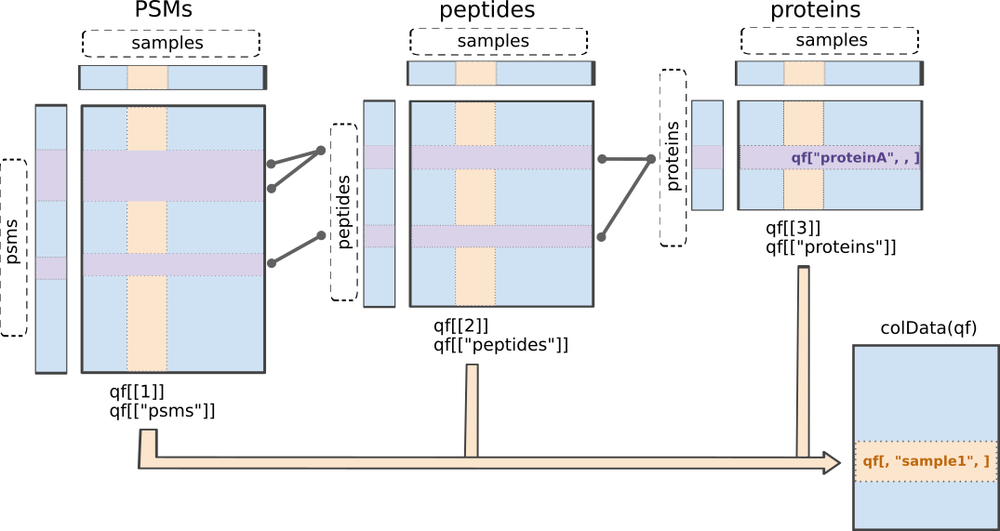
Illustration of the QFeatures data class.
The readQFeatures() enables a seamless conversion of
tabular data into a QFeatures object. We provide the
feature table and the sample annotation table. If the table is of wide
format, readQFeatures will use the quantCols
column in the sample annotation table to understand which columns in
feature table contain the quantitative values, and automatically link
the corresponding sample annotation with the quantitative values. We
also tell the function to use as specific column as feature identifier,
which will be used as rownames. See ?readQFeatures() for
more details.
First, recall that the precursor table is file in long format. Every
quantitative column in the precursor table contains information for
multiple runs. Therefore, the function split the table based on the run
identifier, given by the runCol argument (for DIA-NN, that
identifier is contained in Run). So, the
QFeatures object after import will contain as many sets as
there are runs. Next, the function links the annotation table with the
PSM data. To achieve this, the annotation table must contain a
runCol column that provides the run identifier in which
each sample has been acquired, and this information will be used to
match the identifiers in the Run column of the precursor
table.
Here, we will use the Precursor.Quantity column as
quantification input.
- We first combine the precursor and precursorPTM table in a list of QFeatures objects,
- which we subsequently reduce in one QFeatures object. Note that in
QFeatures, the function
c()is defined to merge QFeatures objects, stacking all assays together into a single object.
This allows us to store the data of the phospho-enriched and the
non-enriched samples in the same QFeatures object.
(qf <- list(
readQFeatures(assayData = precursors,
colData = annot,
quantCols = "Precursor.Quantity",
runCol = "Run",
fnames = "Precursor.Id"),
readQFeatures(assayData = precursorsPTM,
colData = annotPTM,
quantCols = "Precursor.Quantity",
runCol = "Run",
fnames = "Precursor.Id") ##1.
) |> purrr::reduce(c) ##2.
)## Checking arguments.## Loading data as a 'SummarizedExperiment' object.## Splitting data in runs.## | | | 0% | |==== | 6% | |======== | 11% | |============ | 17% | |================ | 22% | |=================== | 28% | |======================= | 33% | |=========================== | 39% | |=============================== | 44% | |=================================== | 50% | |======================================= | 56% | |=========================================== | 61% | |=============================================== | 67% | |=================================================== | 72% | |====================================================== | 78% | |========================================================== | 83% | |============================================================== | 89% | |================================================================== | 94% | |======================================================================| 100%## Formatting sample annotations (colData).## Formatting data as a 'QFeatures' object.## Setting assay rownames.## Checking arguments.## Loading data as a 'SummarizedExperiment' object.## Splitting data in runs.## | | | 0% | |==== | 6% | |======== | 11% | |============ | 17% | |================ | 22% | |=================== | 28% | |======================= | 33% | |=========================== | 39% | |=============================== | 44% | |=================================== | 50% | |======================================= | 56% | |=========================================== | 61% | |=============================================== | 67% | |=================================================== | 72% | |====================================================== | 78% | |========================================================== | 83% | |============================================================== | 89% | |================================================================== | 94% | |======================================================================| 100%## Formatting sample annotations (colData).## Formatting data as a 'QFeatures' object.## Setting assay rownames.## An instance of class QFeatures (type: bulk) with 36 sets:
##
## [1] e14627_MB057_Ctrl_01_Proteome_DIA: SummarizedExperiment with 76148 rows and 1 columns
## [2] e14629_MB057_ArgSer_01_Proteome_DIA: SummarizedExperiment with 74225 rows and 1 columns
## [3] e14630_MB057_ProAla_01_Proteome_DIA: SummarizedExperiment with 75711 rows and 1 columns
## ...
## [34] e14512_MB057_ArgSer_06_Phospho_DIA: SummarizedExperiment with 28688 rows and 1 columns
## [35] e14513_MB057_Ctrl_06_Phospho_DIA: SummarizedExperiment with 29944 rows and 1 columns
## [36] e14514_MB057_ProAla_06_Phospho_DIA: SummarizedExperiment with 30520 rows and 1 columnsRemove data tables to free space.
rm(precursors, precursorsPTM)## used (Mb) gc trigger (Mb) max used (Mb)
## Ncells 10593784 565.8 17334451 925.8 17334451 925.8
## Vcells 101650167 775.6 168094280 1282.5 262547462 2003.1## used (Mb) gc trigger (Mb) max used (Mb)
## Ncells 10593788 565.8 17334451 925.8 17334451 925.8
## Vcells 101650210 775.6 168094280 1282.5 262547462 2003.1Data preprocessing
Here we conduct the following processing steps
- Replace zero’s by NA.
- Precursor filtering and assay joining
- Log-transformation
- Normalisation
- Summarisation for non-enriched runs
Encoding missing values
We first replace any zero in the quantitative data with an
NA.
Note that msqrob2 can handle missing data without having
to rely on hard-to-verify imputation assumptions, which is our general
recommendation. However, msqrob2 does not prevent users
from using imputation, which can be performed with impute()
from the QFeatures package.
Precursor Filtering
Filtering removes low-quality and unreliable precursors that would otherwise introduce noise and artefacts in the data.
Remove questionable identifications
We apply standard filtering:
q-value threshold of 0.01 for the identification of precursors (
Q.Value) and protein groups (PG.Q.Value). If the file is processed via matching between runs, it is also useful to filter on Lib.Q.Value and Lib.PG.Q.Value.Remove precursors that could not be mapped, i.e. when
Precursor.Idcolumn is an empty string.Filter decoys, i.e. only keep precursors for which the
Decoycolumn equals(Note, that the
Decoycolumn is not present in the output of older versions of DIA-NN).Keeping only proteotypic peptides, which map uniquely to a specific protein.
qf <- qf |>
filterFeatures(~ Q.Value <= 0.01 & #1.
PG.Q.Value <= 0.01 & #1.
Lib.Q.Value <= 0.01 & #1.
Lib.PG.Q.Value <= 0.01 & #1.
Precursor.Id != "" & #2.
Decoy == 0 & #3. (Note, that this filter is not available with previous versions of DIA-NN, as the report.tsv file did not include a Decoy column. So other strategies are needed if Decoys are in the output file.)
Proteotypic == 1) #4.## 'Q.Value' found in 36 out of 36 assay(s).'PG.Q.Value' found in 36 out of 36 assay(s).'Lib.Q.Value' found in 36 out of 36 assay(s).'Lib.PG.Q.Value' found in 36 out of 36 assay(s).'Precursor.Id' found in 36 out of 36 assay(s).'Decoy' found in 36 out of 36 assay(s).'Proteotypic' found in 36 out of 36 assay(s).Note, that it is important that the filtering criteria are not distorting the distribution of the test statistics in the downstream analysis for features that are non-DA. It can be shown that filtering will not induce bias results when the filtering criterion is independent of test statistic. The criteria that we proposed above are all based on the results of the identification step, hence, they are independent of the downstream test statistics that will be used to prioritize DA proteins.
## used (Mb) gc trigger (Mb) max used (Mb)
## Ncells 10599742 566.1 17334451 925.8 17334451 925.8
## Vcells 102965795 785.6 168094280 1282.5 262547462 2003.1## used (Mb) gc trigger (Mb) max used (Mb)
## Ncells 10599746 566.1 17334451 925.8 17334451 925.8
## Vcells 102965838 785.6 168094280 1282.5 262547462 2003.1Assay joining
- Up to now, the data from different runs were kept in separate assays.
- We can now join the normalised sets into an precursor set using joinAssays().
- Sets are joined by stacking the columns (samples) in a matrix and
rows (features) are matched according to a row identifier, here the
Precursor.Id. - We do this for the non-enriched and phospho samples, which we store
in assays with names:
precursorsandprecursorsPTM, respectively.
qf <- joinAssays(
x = qf,
i = grep("Proteome",names(qf), value = TRUE),
fcol = "Precursor.Id",
name = "precursors"
)## Using 'Precursor.Id' to join assays.
(qf <- joinAssays(
x = qf,
i = grep("Phospho",names(qf), value = TRUE),
fcol = "Precursor.Id",
name = "precursorsPTM"
)
)## Using 'Precursor.Id' to join assays.## An instance of class QFeatures (type: bulk) with 38 sets:
##
## [1] e14627_MB057_Ctrl_01_Proteome_DIA: SummarizedExperiment with 73741 rows and 1 columns
## [2] e14629_MB057_ArgSer_01_Proteome_DIA: SummarizedExperiment with 71814 rows and 1 columns
## [3] e14630_MB057_ProAla_01_Proteome_DIA: SummarizedExperiment with 73265 rows and 1 columns
## ...
## [36] e14514_MB057_ProAla_06_Phospho_DIA: SummarizedExperiment with 29322 rows and 1 columns
## [37] precursors: SummarizedExperiment with 88291 rows and 18 columns
## [38] precursorsPTM: SummarizedExperiment with 59771 rows and 18 columnsRemove the original assays to free space
qf <- qf[,,-c(1:36)]## Warning: 'experiments' dropped; see 'drops()'## harmonizing input:
## removing 36 sampleMap rows not in names(experiments)## used (Mb) gc trigger (Mb) max used (Mb)
## Ncells 10603439 566.3 17334451 925.8 17334451 925.8
## Vcells 66467922 507.2 168109295 1282.6 262547462 2003.1## used (Mb) gc trigger (Mb) max used (Mb)
## Ncells 10603443 566.3 17334451 925.8 17334451 925.8
## Vcells 66467965 507.2 168109295 1282.6 262547462 2003.1Filtering: Remove highly missing precursors
We keep peptides that were observed at last 6 times out of the samples, so that we can estimate the peptide characteristics.
nObs <- 6
n <- ncol(qf[["precursors"]])
(qf <- filterNA(qf, i = c("precursors", "precursorsPTM"), pNA = (n - nObs) / n))## An instance of class QFeatures (type: bulk) with 2 sets:
##
## [1] precursors: SummarizedExperiment with 78047 rows and 18 columns
## [2] precursorsPTM: SummarizedExperiment with 32916 rows and 18 columns## used (Mb) gc trigger (Mb) max used (Mb)
## Ncells 10603606 566.3 17334451 925.8 17334451 925.8
## Vcells 65207234 497.5 168109295 1282.6 262547462 2003.1## used (Mb) gc trigger (Mb) max used (Mb)
## Ncells 10603613 566.3 17334451 925.8 17334451 925.8
## Vcells 65207282 497.5 168109295 1282.6 262547462 2003.1Filter one-hit wonders
We normally remove proteins that can only be found by one peptide, as such proteins may not be trustworthy.
Here, we opt not to do this because we prefer a protein-level summary based on on precursor so that we can estimate usages later on.
We leave the code here for your reference. But commented it out.
We first calculate how many distinct peptides map to each protein group (
PG_ProteinGroups). We use the stripped precursor sequence, i.e. sequence of the base peptide for this purpose.We store this information in the row data of the precursors assay
We filter precursors of one-hit wonder proteins.
## Filter for peptides per protein
# pepsPerProtDf <- qf[["precursors"]] |>
# rowData() |>
# data.frame() |>
# dplyr::select("Stripped.Sequence", "Protein.Group") |>
# group_by(Protein.Group) |>
# mutate(pepsPerProt = Stripped.Sequence |>
# unique() |> length()
# ) #1.
# rowData(qf[["precursors"]])$pepsPerProt <- pepsPerProtDf$pepsPerProt #2.
#qf <- filterFeatures(qf,
# ~ pepsPerProt > 1,
# keep = TRUE) #3.## used (Mb) gc trigger (Mb) max used (Mb)
## Ncells 10603608 566.3 17334451 925.8 17334451 925.8
## Vcells 65207364 497.5 168109295 1282.6 262547462 2003.1## used (Mb) gc trigger (Mb) max used (Mb)
## Ncells 10603615 566.3 17334451 925.8 17334451 925.8
## Vcells 65207412 497.5 168109295 1282.6 262547462 2003.1Log-transformation
We perform log2-transformation with logTransform() from
the QFeatures package. We use base = 2 and
store the result in a new summarized experiment named
precursors_log.
qf <- logTransform(qf,
base = 2,
i = "precursors",
name = "precursors_log")
qf <- logTransform(qf,
base = 2,
i = "precursorsPTM",
name = "precursorsPTM_log")Normalisation
We first evaluate the distributions of the non-normalised precursors per sample.
qf[, , "precursors_log"] |> #1.
longForm(colvars = colnames(colData(qf))) |> #2.
data.frame() |>
filter(!is.na(value)) |>
ggplot() + #3.
aes(x = value,
colour = strain,
group = colname) +
geom_density() +
labs(subtitle = "precursors") +
theme_minimal()## harmonizing input:
## removing 54 sampleMap rows not in names(experiments)
## removing 18 colData rownames not in sampleMap 'primary'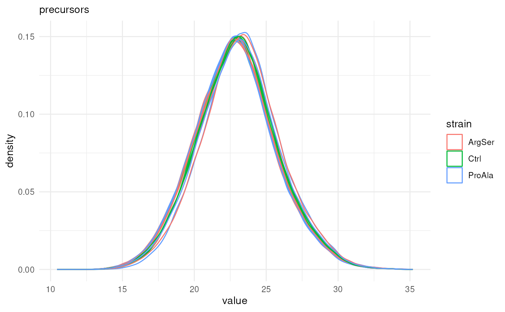
qf[, , "precursorsPTM_log"] |> #1.
longForm(colvars = colnames(colData(qf))) |> #2.
data.frame() |>
filter(!is.na(value)) |>
ggplot() + #3.
aes(x = value,
colour = strain,
group = colname) +
geom_density() +
labs(subtitle = "PTM - precursors") +
theme_minimal()## harmonizing input:
## removing 54 sampleMap rows not in names(experiments)
## removing 18 colData rownames not in sampleMap 'primary'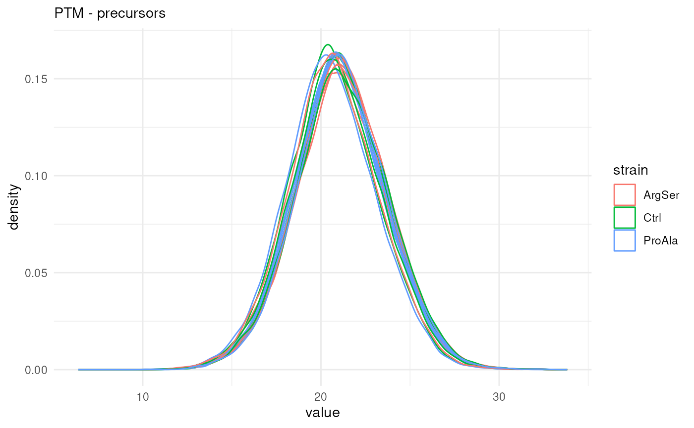
The data seems very clean. However, normalisation is still required.
We use the median of ratio normalisation, which addresses both differences in loading as well as difference in compositionality.
- This first calculates a reference sample by using the log2 geometric mean, i.e. the arithmetic mean on a log scale, for every feature.
- Subsequently log2 fold changes are calculated between each feature of a sample and the reference sample.
- Finally, the median of these log2 fold changes are used as the log2-tranformed normalisation factor.
The method is the default method for normalisation in bulk RNA-seq data analysis with DESeq2. In our hands it performs very well in a proteomics context.
qf <- sweep( #4. Subtract log2 norm factor column-by-column (MARGIN = 2)
qf,
MARGIN = 2,
STATS = nfLogMedianOfRatios(qf,"precursors_log"),
i = "precursors_log",
name = "precursors_norm"
)## This function aims to calculate norm factors on a log scale,
## the input data are assumed to be on the log-scale!
qf <- sweep( #4. Subtract log2 norm factor column-by-column (MARGIN = 2)
qf,
MARGIN = 2,
STATS = nfLogMedianOfRatios(qf,"precursorsPTM_log"),
i = "precursorsPTM_log",
name = "precursorsPTM_norm"
)## This function aims to calculate norm factors on a log scale,
## the input data are assumed to be on the log-scale!We explore the effect of the global normalisation in the subsequent plot.
Formally, the function applies the following operation on each sample across all precursors :
with the log2-transformed intensities and the log2-transformed norm factor.
Upon normalisation, we can see that the distribution of the nicely overlap (using the same code as above)
qf[, , "precursors_norm"] |>
longForm(colvars = colnames(colData(qf))) |>
data.frame() |>
filter(!is.na(value)) |>
ggplot() +
aes(x = value,
colour = strain,
group = colname) +
geom_density() +
labs(subtitle = "Median normalisation precursors") +
theme_minimal()## harmonizing input:
## removing 90 sampleMap rows not in names(experiments)
## removing 18 colData rownames not in sampleMap 'primary'
qf[, , "precursorsPTM_norm"] |>
longForm(colvars = colnames(colData(qf))) |>
data.frame() |>
filter(!is.na(value)) |>
ggplot() +
aes(x = value,
colour = strain,
group = colname) +
geom_density() +
labs(subtitle = "Median normalisation PTM precursors") +
theme_minimal()## harmonizing input:
## removing 90 sampleMap rows not in names(experiments)
## removing 18 colData rownames not in sampleMap 'primary'
We also explore the normalisation for the common precursors.
precursorsCommon <- assay(qf[, , "precursors_log"]) |> na.exclude() |> rownames()## harmonizing input:
## removing 90 sampleMap rows not in names(experiments)
## removing 18 colData rownames not in sampleMap 'primary'
qf[precursorsCommon, , "precursors_norm"] |>
longForm(colvars = colnames(colData(qf))) |>
data.frame() |>
filter(!is.na(value)) |>
ggplot() +
aes(x = value,
colour = strain,
group = colname) +
geom_density() +
theme_minimal() +
labs(subtitle = "Median normalised log2 precursor intensities (common)")## Warning: 'experiments' dropped; see 'drops()'## harmonizing input:
## removing 90 sampleMap rows not in names(experiments)
## removing 18 colData rownames not in sampleMap 'primary'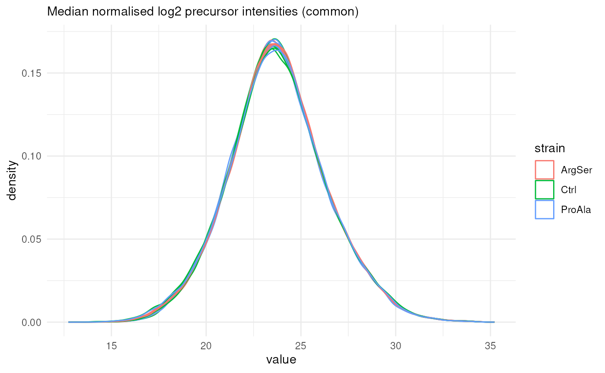
precursorsCommonPTM <- assay(qf[, , "precursorsPTM_log"]) |> na.exclude() |> rownames()## harmonizing input:
## removing 90 sampleMap rows not in names(experiments)
## removing 18 colData rownames not in sampleMap 'primary'
qf[precursorsCommonPTM, , "precursorsPTM_norm"] |>
longForm(colvars = colnames(colData(qf))) |>
data.frame() |>
filter(!is.na(value)) |>
ggplot() +
aes(x = value,
colour = strain,
group = colname) +
geom_density() +
theme_minimal() +
labs(subtitle = "Median normalised log2 precursor intensities (common)")## Warning: 'experiments' dropped; see 'drops()'## harmonizing input:
## removing 90 sampleMap rows not in names(experiments)
## removing 18 colData rownames not in sampleMap 'primary'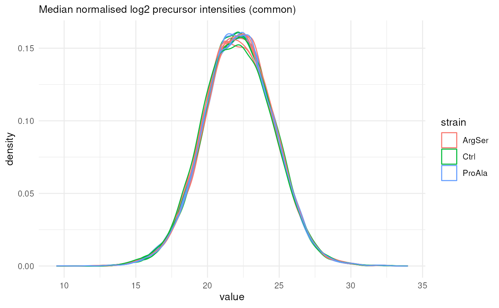
Remove temporarily objects
rm(precursorsCommon, precursorsCommonPTM)## used (Mb) gc trigger (Mb) max used (Mb)
## Ncells 10528222 562.3 17334451 925.8 17334451 925.8
## Vcells 31861399 243.1 134487436 1026.1 262547462 2003.1## used (Mb) gc trigger (Mb) max used (Mb)
## Ncells 10528226 562.3 17334451 925.8 17334451 925.8
## Vcells 31861442 243.1 107589949 820.9 262547462 2003.1Note, that normalisation could have been avoided by using Precursor.Normalised which is already internally normalised by DIA-NN. However, we do not know the exact procedure for this.
This generally works well for many datasets.
In this vignette we have chosen to conduct the normalisation explicitly ourselves using a method for which we know the underlying rationale.
Summarisation
Here, we summarise the precursor-level data for the non-enriched runs into protein intensities using maxLFQ, which is one of the default methods used in DIA data analysis.
Note, that the maxLFQ implementation can become slow for large datasets. In that case we recommend the median polish method.
maxLFQ first calculates all pairwise log ratio’s between samples only using their shared precursors. Particularly, it uses the median of the log ratio’s between the shared precursors, i.e. .
Hence, it first eliminates ion effects.It then estimates the summaries by solving
It is implemented in the maxLFQ function of the
iq package.
aggregateFeatures() in the QFeatures package streamlines
summarisation. It requires the name of a rowData column to
group the precursors into proteins (or protein groups), here
Protein.Group. We provide the summarisation approach
through the fun argument.
The function will return a QFeatures object with a new
set that we called proteins.
Other summarisation methods are available from the
MsCoreUtils package, see ?aggregateFeatures
for a comprehensive list.
(qf <- aggregateFeatures(
qf, i = "precursors_norm",
name = "proteins",
fcol = "Protein.Group",
fun = function(X) iq::maxLFQ(X)$estimate
))## | | | 0% | |======================================================================| 100%## The following messages occurred during aggregation:##
## Your quantitative data contain missing values. Please read the relevant
## section(s) in the aggregateFeatures manual page regarding the effects
## of missing values on data aggregation.
##
## Occurred during the aggregation of set(s): precursors## An instance of class QFeatures (type: bulk) with 7 sets:
##
## [1] precursors: SummarizedExperiment with 78047 rows and 18 columns
## [2] precursorsPTM: SummarizedExperiment with 32916 rows and 18 columns
## [3] precursors_log: SummarizedExperiment with 78047 rows and 18 columns
## [4] precursorsPTM_log: SummarizedExperiment with 32916 rows and 18 columns
## [5] precursors_norm: SummarizedExperiment with 78047 rows and 18 columns
## [6] precursorsPTM_norm: SummarizedExperiment with 32916 rows and 18 columns
## [7] proteins: SummarizedExperiment with 4607 rows and 18 columns## used (Mb) gc trigger (Mb) max used (Mb)
## Ncells 10544510 563.2 17334451 925.8 17334451 925.8
## Vcells 32332651 246.7 107589949 820.9 262547462 2003.1## used (Mb) gc trigger (Mb) max used (Mb)
## Ncells 10544517 563.2 17334451 925.8 17334451 925.8
## Vcells 32332699 246.7 107589949 820.9 262547462 2003.1Data exploration and QC
Data exploration aims to highlight the main sources of variation in the data prior to data modelling and can pinpoint to outlying or off-behaving samples.
We first performance the QC for the Phospho-enriched runs then for the non-enriched runs.
Phospho-enriched runs
Marginal distribution at precursor level
qf[, , "precursorsPTM_norm"] |>
longForm(colvars = colnames(colData(qf))) |>
data.frame() |>
filter(!is.na(value)) |>
ggplot() +
aes(x = value,
colour = strain,
group = colname) +
geom_density() +
theme_minimal() +
labs(subtitle = "Normalised log2 PTM precursor intensities")## harmonizing input:
## removing 108 sampleMap rows not in names(experiments)
## removing 18 colData rownames not in sampleMap 'primary'
qf[, , "precursorsPTM_norm"] |>
longForm(colvars = colnames(colData(qf))) |>
data.frame() |>
filter(!is.na(value)) |>
ggplot() +
aes(x = sampleId,
y = value,
colour = strain,
group = colname) +
xlab("sample") +
geom_boxplot() +
theme_minimal() +
labs(subtitle = "Normalised log2 PTM precursor intensities")## harmonizing input:
## removing 108 sampleMap rows not in names(experiments)
## removing 18 colData rownames not in sampleMap 'primary'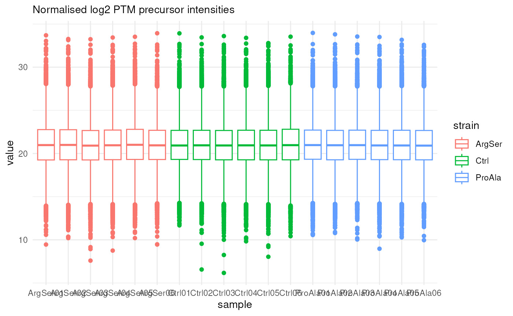
## used (Mb) gc trigger (Mb) max used (Mb)
## Ncells 10574174 564.8 17334451 925.8 17334451 925.8
## Vcells 35980121 274.6 107589949 820.9 262547462 2003.1## used (Mb) gc trigger (Mb) max used (Mb)
## Ncells 10574181 564.8 17334451 925.8 17334451 925.8
## Vcells 35980169 274.6 107589949 820.9 262547462 2003.1Charge state
qf[, , "precursorsPTM_norm"] |>
longForm(colvars = colnames(colData(qf)), rowvars = "Precursor.Charge") |>
as.data.frame() |>
filter(!is.na(value)) |>
filter(Precursor.Charge<=4) |>
ggplot(aes(x = sampleId)) +
geom_bar(aes(fill = factor(Precursor.Charge, levels = 4:1)),
colour = "black") +
labs(title = "Number of phospho-ions per sample",
x = "Sample",
fill = "Charge state") +
theme_bw() +
theme(axis.text.x = element_text(angle = 90))## harmonizing input:
## removing 108 sampleMap rows not in names(experiments)
## removing 18 colData rownames not in sampleMap 'primary'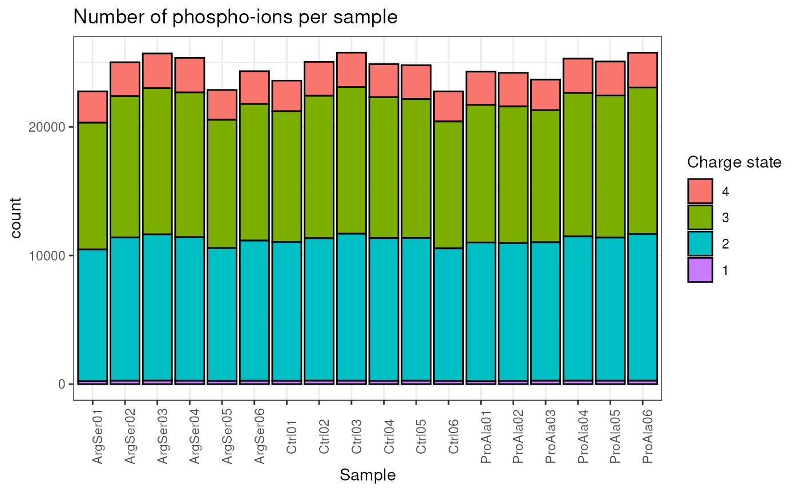
## used (Mb) gc trigger (Mb) max used (Mb)
## Ncells 10581682 565.2 17334451 925.8 17334451 925.8
## Vcells 36177463 276.1 107589949 820.9 262547462 2003.1## used (Mb) gc trigger (Mb) max used (Mb)
## Ncells 10581689 565.2 17334451 925.8 17334451 925.8
## Vcells 36177511 276.1 107589949 820.9 262547462 2003.1Identifications per sample
qf[,,"precursorsPTM_norm"] |>
longForm(colvars = colnames(colData(qf)),
rowvars= c("Precursor.Id",
"Protein.Group")) |>
data.frame() |>
filter(!is.na(value)) |>
group_by(strain, sampleId) |>
summarise(Precursors = length(unique(Precursor.Id)),
`Protein Groups` = length(unique(Protein.Group))) |>
pivot_longer(-(1:2),
names_to = "Feature",
values_to = "IDs") |>
ggplot(aes(x = sampleId, y = IDs, fill = strain)) +
geom_col() +
#scale_fill_observable() +
facet_wrap(~Feature,
scales = "free_y") +
labs(title = "Precursor and protein group identificiations per PTM sample",
x = "Sample",
y = "Identifications") +
theme_bw() +
theme(axis.text.x = element_text(angle = 90))## harmonizing input:
## removing 108 sampleMap rows not in names(experiments)
## removing 18 colData rownames not in sampleMap 'primary'## `summarise()` has regrouped the output.
## ℹ Summaries were computed grouped by strain and sampleId.
## ℹ Output is grouped by strain.
## ℹ Use `summarise(.groups = "drop_last")` to silence this message.
## ℹ Use `summarise(.by = c(strain, sampleId))` for per-operation grouping
## (`?dplyr::dplyr_by`) instead.
# Data Modeling (Robust Regression){#sec-modelling}## used (Mb) gc trigger (Mb) max used (Mb)
## Ncells 10638767 568.2 17334451 925.8 17334451 925.8
## Vcells 29890753 228.1 86071960 656.7 262547462 2003.1## used (Mb) gc trigger (Mb) max used (Mb)
## Ncells 10638747 568.2 17334451 925.8 17334451 925.8
## Vcells 29890756 228.1 86071960 656.7 262547462 2003.1Dimensionality reduction plot
A common approach for data exploration is to perform dimension reduction, such as Multi Dimensional Scaling (MDS). We will first extract the set to explore along the sample annotations (used for plot colouring).
getWithColData(qf, "precursorsPTM_norm") |>
as("SingleCellExperiment") |>
runMDS(exprs_values = 1) |>
plotMDS(colour_by = "strain") 
## used (Mb) gc trigger (Mb) max used (Mb)
## Ncells 10660884 569.4 17334451 925.8 17334451 925.8
## Vcells 29955783 228.6 86071960 656.7 262547462 2003.1## used (Mb) gc trigger (Mb) max used (Mb)
## Ncells 10660873 569.4 17334451 925.8 17334451 925.8
## Vcells 29955801 228.6 86071960 656.7 262547462 2003.1Non-enriched runs
Marginal distribution at precursor and protein level
qf[, , "precursors_norm"] |>
longForm(colvars = colnames(colData(qf))) |>
data.frame() |>
filter(!is.na(value)) |>
ggplot() +
aes(x = value,
colour = strain,
group = colname) +
geom_density() +
theme_minimal() +
labs(subtitle = "Normalised log2 precursor intensities")## harmonizing input:
## removing 108 sampleMap rows not in names(experiments)
## removing 18 colData rownames not in sampleMap 'primary'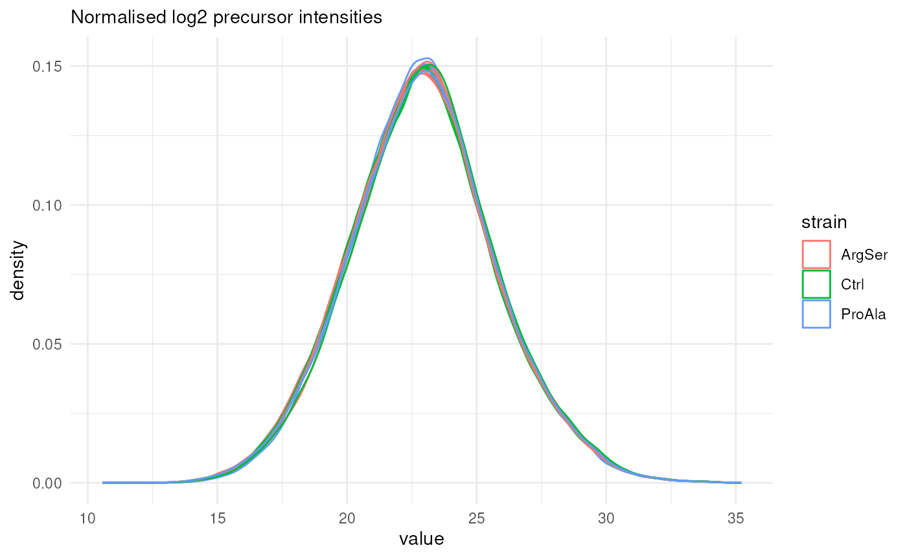
qf[, , "precursors_norm"] |>
longForm(colvars = colnames(colData(qf))) |>
data.frame() |>
filter(!is.na(value)) |>
ggplot() +
aes(x = sampleId,
y = value,
colour = strain,
group = colname) +
xlab("sample") +
geom_boxplot() +
theme_minimal() +
labs(subtitle = "Normalised log2 precursor intensities")## harmonizing input:
## removing 108 sampleMap rows not in names(experiments)
## removing 18 colData rownames not in sampleMap 'primary'
qf[, , "proteins"] |>
longForm(colvars = colnames(colData(qf))) |>
data.frame() |>
filter(!is.na(value)) |>
ggplot() +
aes(x = value,
colour = strain,
group = colname) +
geom_density() +
theme_minimal() +
labs(subtitle = "log2 protein intensities (normalised precursors)")## harmonizing input:
## removing 108 sampleMap rows not in names(experiments)
## removing 18 colData rownames not in sampleMap 'primary'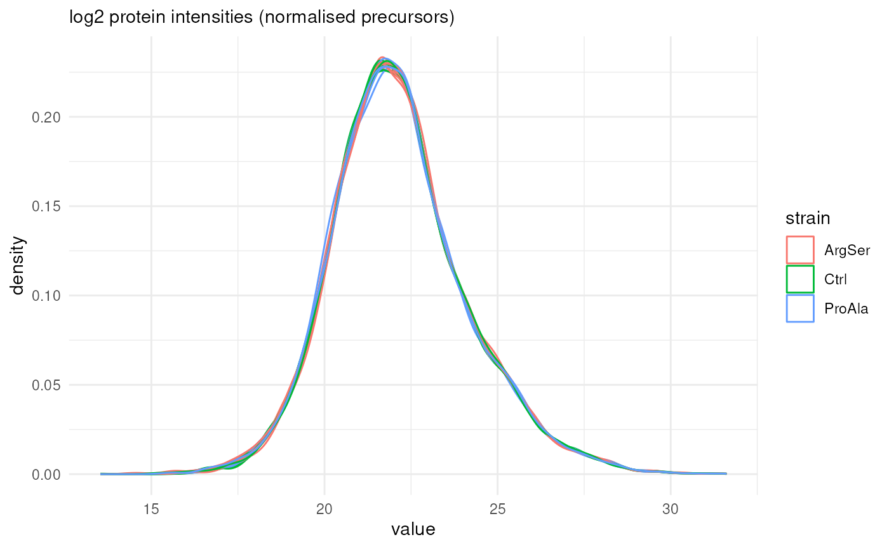
qf[, , "proteins"] |>
longForm(colvars = colnames(colData(qf))) |>
data.frame() |>
filter(!is.na(value)) |>
ggplot() +
aes(x = sampleId,
y = value,
colour = strain,
group = colname) +
xlab("sample") +
geom_boxplot() +
theme_minimal() +
labs(subtitle = "log2 protein intensities (normalised precursors)")## harmonizing input:
## removing 108 sampleMap rows not in names(experiments)
## removing 18 colData rownames not in sampleMap 'primary'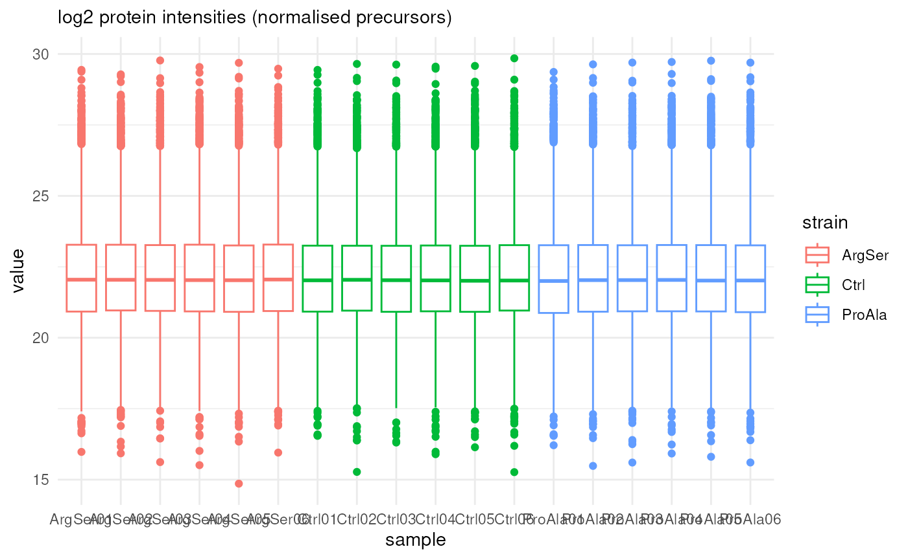
## used (Mb) gc trigger (Mb) max used (Mb)
## Ncells 10661361 569.4 17334451 925.8 17334451 925.8
## Vcells 31081234 237.2 105309341 803.5 262547462 2003.1## used (Mb) gc trigger (Mb) max used (Mb)
## Ncells 10661365 569.4 17334451 925.8 17334451 925.8
## Vcells 31081277 237.2 105309341 803.5 262547462 2003.1Charge state
qf[, , "precursors_norm"] |>
longForm(colvars = colnames(colData(qf)), rowvars = "Precursor.Charge") |>
as.data.frame() |>
filter(!is.na(value)) |>
filter(Precursor.Charge<=4) |>
ggplot(aes(x = sampleId)) +
geom_bar(aes(fill = factor(Precursor.Charge, levels = 4:1)),
colour = "black") +
labs(title = "Number of precursor ions per sample",
x = "Sample",
fill = "Charge state") +
theme_bw() +
theme(axis.text.x = element_text(angle = 90))## harmonizing input:
## removing 108 sampleMap rows not in names(experiments)
## removing 18 colData rownames not in sampleMap 'primary'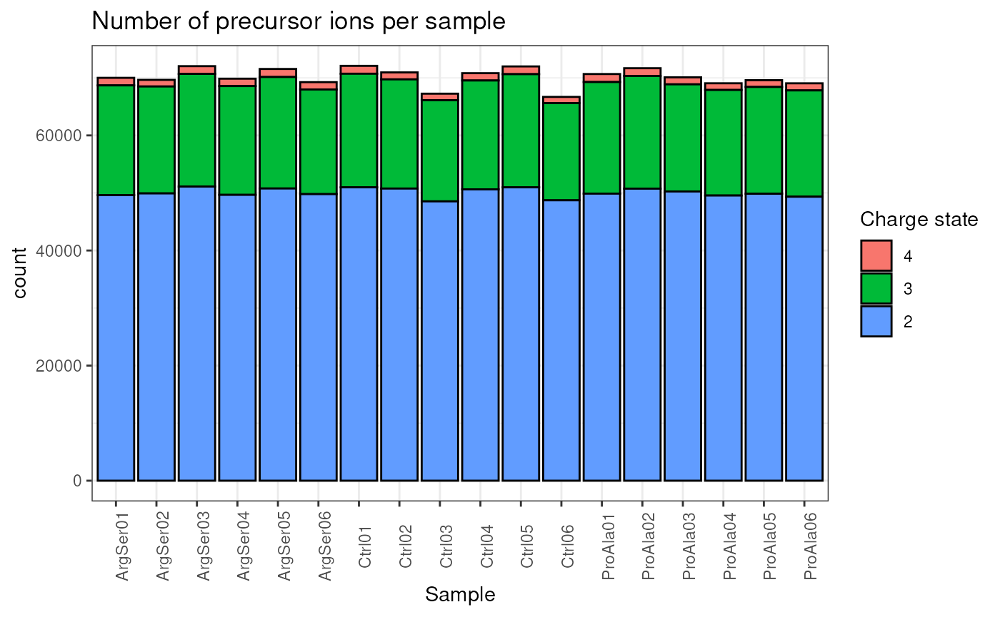
## used (Mb) gc trigger (Mb) max used (Mb)
## Ncells 10661360 569.4 17334451 925.8 17334451 925.8
## Vcells 48243445 368.1 105309341 803.5 262547462 2003.1## used (Mb) gc trigger (Mb) max used (Mb)
## Ncells 10661367 569.4 17334451 925.8 17334451 925.8
## Vcells 48243493 368.1 105309341 803.5 262547462 2003.1Identifications per sample
qf[,,"precursors_norm"] |>
longForm(colvars = colnames(colData(qf)),
rowvars= c("Precursor.Id",
"Protein.Group")) |>
data.frame() |>
filter(!is.na(value)) |>
group_by(strain, sampleId) |>
summarise(Precursors = length(unique(Precursor.Id)),
`Protein Groups` = length(unique(Protein.Group))) |>
pivot_longer(-(1:2),
names_to = "Feature",
values_to = "IDs") |>
ggplot(aes(x = sampleId, y = IDs, fill = strain)) +
geom_col() +
#scale_fill_observable() +
facet_wrap(~Feature,
scales = "free_y") +
labs(title = "Precursor and protein group identificiations per sample",
x = "Sample",
y = "Identifications") +
theme_bw() +
theme(axis.text.x = element_text(angle = 90))## harmonizing input:
## removing 108 sampleMap rows not in names(experiments)
## removing 18 colData rownames not in sampleMap 'primary'## `summarise()` has regrouped the output.
## ℹ Summaries were computed grouped by strain and sampleId.
## ℹ Output is grouped by strain.
## ℹ Use `summarise(.groups = "drop_last")` to silence this message.
## ℹ Use `summarise(.by = c(strain, sampleId))` for per-operation grouping
## (`?dplyr::dplyr_by`) instead.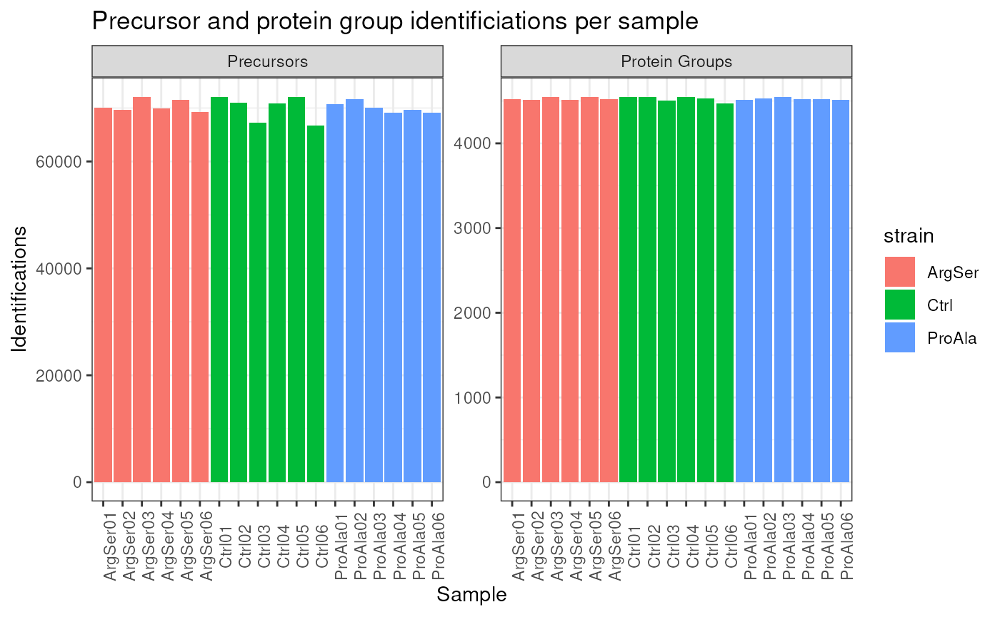
## used (Mb) gc trigger (Mb) max used (Mb)
## Ncells 10661475 569.4 17334451 925.8 17334451 925.8
## Vcells 29941707 228.5 105309341 803.5 262547462 2003.1## used (Mb) gc trigger (Mb) max used (Mb)
## Ncells 10661479 569.4 17334451 925.8 17334451 925.8
## Vcells 29941750 228.5 105309341 803.5 262547462 2003.1Dimensionality reduction plot
getWithColData(qf, "proteins") |>
as("SingleCellExperiment") |>
runMDS(exprs_values = 1) |>
plotMDS(colour_by = "strain") 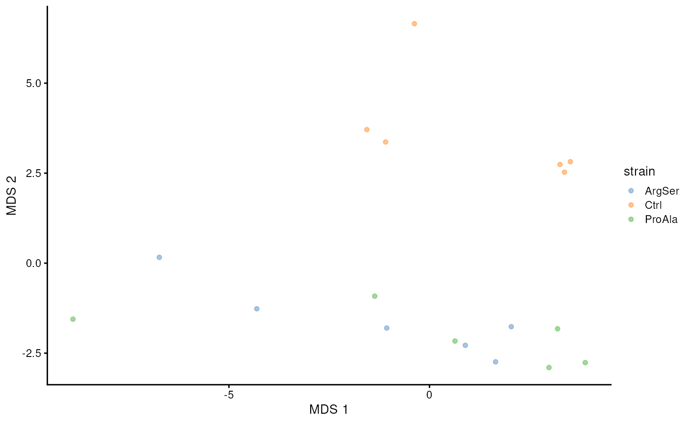
## used (Mb) gc trigger (Mb) max used (Mb)
## Ncells 10661059 569.4 17334451 925.8 17334451 925.8
## Vcells 29942932 228.5 105309341 803.5 262547462 2003.1## used (Mb) gc trigger (Mb) max used (Mb)
## Ncells 10661048 569.4 17334451 925.8 17334451 925.8
## Vcells 29942950 228.5 105309341 803.5 262547462 2003.1Data Modeling at phospho-precursor-level
Model estimation
We first define the model. We only have one source of variability in the experiment that we can model, i.e. the effect of the strain.
We fit the model to each phosphorylated precursor in the
precursorsPTM_normsummarised experiment of the QFeatures objectqfusing the msqrob function.
model <- ~ strain
qf <- msqrob(
qf,
i = "precursorsPTM_norm",
formula = model,
robust = TRUE)We enabled M-estimation (robust = TRUE) for improved
robustness against outliers.
## used (Mb) gc trigger (Mb) max used (Mb)
## Ncells 11362060 606.8 17334451 925.8 17334451 925.8
## Vcells 31934224 243.7 105309341 803.5 262547462 2003.1## used (Mb) gc trigger (Mb) max used (Mb)
## Ncells 11362070 606.9 17334451 925.8 17334451 925.8
## Vcells 31934277 243.7 105309341 803.5 262547462 2003.1Inference
We can now convert the research question “Is the abundance of phospho-precursors different between the strains” into a statistical hypotheses.
In other words, we need to translate this question in a null and alternative hypothesis on a single model parameter or a linear combination of model parameters, which is also referred to with a contrast.
To aid defining contrasts, we will visualise the experimental design
using the ExploreModelMatrix package.
vd <- ExploreModelMatrix::VisualizeDesign(
sampleData = colData(qf),
designFormula = model,
textSizeFitted = 4
)
vd$plotlist## [[1]]
We have 3 interesting research questions related to the strain.
- Is a precursor DA between ArgSer strain and the WT (control)
- Is a precursor DA between ProAla strain and the WT (control)
- Is a precursor DA between ProAla strain and the ArgSer strain.
Each of these contrasts can be translated in a log2 FC or a difference in log2 FC and can be estimated with one or a linear combination of the model parameters.
Below we define the contrast and construct the corresponding contrast matrix.
We can generate the null-hypothesess for all pairwise comparisons
manually. However, here we will use the
createPairwiseContrasts function in
msqrob2.
(allHypotheses <- createPairwiseContrasts(
model, colData(qf), "strain"
)
)## Warning: the 'nobars' function has moved to the reformulas package. Please update your imports, or ask an upstream package maintainer to do so.
## This warning is displayed once per session.## [1] "strainCtrl = 0" "strainProAla = 0"
## [3] "strainProAla - strainCtrl = 0"Based on these null hypothesis we now generate the contrast matrix
with all three contrasts using the makeContrast function.
Note, that experienced users can also define the contrast matrix,
directly.
(L <- makeContrast(
allHypotheses,
parameterNames = colnames(vd$designmatrix)
))## strainCtrl strainProAla strainProAla - strainCtrl
## (Intercept) 0 0 0
## strainCtrl 1 0 -1
## strainProAla 0 1 1We assess the contrast for each precursor.
qf <- hypothesisTest(qf, i = "precursorsPTM_norm", contrast = L, overwrite = TRUE)We extract the results table from the precursorsPTM_norm
summarised experiment in the qf object.
inferencesPTM <-
msqrobCollect(qf[["precursorsPTM_norm"]], L)## used (Mb) gc trigger (Mb) max used (Mb)
## Ncells 11518877 615.2 17334451 925.8 17334451 925.8
## Vcells 34491141 263.2 105309341 803.5 262547462 2003.1## used (Mb) gc trigger (Mb) max used (Mb)
## Ncells 11518881 615.2 17334451 925.8 17334451 925.8
## Vcells 34491184 263.2 105309341 803.5 262547462 2003.1Report results
We report the results using a results table, volcano plots and heatmaps.
Results table
We use the 5% nominal FDR level to report results
alpha <- 0.05
for (j in colnames(L)) {
inference <- inferencesPTM |>
dplyr::filter(adjPval < alpha & contrast == j)
cat("**Median - Contrast:**", j, "= 0 (", nrow(inference),
"significant precursors)\n\n")
cat('<div style="max-height:300px; overflow-y:auto;">')
print(
kable(
inference |>
dplyr::arrange(pval) |>
dplyr::relocate(feature),
row.names = FALSE
)
)
cat('</div>')
cat("\n\n\n---\n\n")
}Median - Contrast: strainCtrl = 0 ( 132 significant precursors)
| feature | logFC | se | df | t | pval | adjPval | contrast |
|---|---|---|---|---|---|---|---|
| ETIDDTAS(UniMod:21)QILK2 | -1.3878725 | 0.0868676 | 16.425974 | -15.976871 | 0.0000000 | 0.0000005 | strainCtrl |
| GQVVSEEQRPGT(UniMod:21)PLFTVK3 | -1.7606517 | 0.1054288 | 15.293748 | -16.699911 | 0.0000000 | 0.0000005 | strainCtrl |
| ETVES(UniMod:21)ESSQTALSK2 | -0.9019349 | 0.0690039 | 16.403443 | -13.070775 | 0.0000000 | 0.0000046 | strainCtrl |
| IARPLS(UniMod:21)VPGS(UniMod:21)PK2 | 0.7155560 | 0.0647198 | 16.256685 | 11.056212 | 0.0000000 | 0.0000451 | strainCtrl |
| RGQVVSEEQRPGT(UniMod:21)PLFTVK3 | -1.3829874 | 0.1323581 | 14.249637 | -10.448831 | 0.0000000 | 0.0002299 | strainCtrl |
| DLARENS(UniMod:21)LETTFSSVNTR3 | -0.8330567 | 0.0883323 | 16.386810 | -9.430945 | 0.0000001 | 0.0002299 | strainCtrl |
| RAT(UniMod:21)YAGFLLADPK3 | -2.7224415 | 0.2243879 | 11.815432 | -12.132749 | 0.0000001 | 0.0002299 | strainCtrl |
| LYDLLGVS(UniMod:21)PSANEQELK2 | -1.4023471 | 0.1407479 | 14.806088 | -9.963536 | 0.0000001 | 0.0002364 | strainCtrl |
| T(UniMod:21)GAAPQTTFNVAPNSTPIVSTAATGLQHK3 | -0.6373352 | 0.0682631 | 16.019004 | -9.336459 | 0.0000001 | 0.0002494 | strainCtrl |
| ETVESESS(UniMod:21)QTALSK2 | -1.8228595 | 0.1448704 | 10.011209 | -12.582688 | 0.0000002 | 0.0005918 | strainCtrl |
| LVQIT(UniMod:21)PDGK2 | 0.8050579 | 0.0997421 | 15.547762 | 8.071393 | 0.0000006 | 0.0015085 | strainCtrl |
| GSEIVIAT(UniMod:21)PGR2 | -1.0818005 | 0.1276423 | 14.091319 | -8.475248 | 0.0000007 | 0.0015085 | strainCtrl |
| T(UniMod:21)GAAPQTTFNVAPNSTPIVSTAATGLQHK4 | -1.1061639 | 0.1321426 | 14.224166 | -8.370989 | 0.0000007 | 0.0015085 | strainCtrl |
| IS(UniMod:21)PPVVAYR2 | -1.8161978 | 0.2294100 | 15.617433 | -7.916820 | 0.0000007 | 0.0015085 | strainCtrl |
| GSSS(UniMod:21)LYTLVINDAGK2 | 1.1815421 | 0.1540268 | 16.592491 | 7.671014 | 0.0000008 | 0.0015085 | strainCtrl |
| GSS(UniMod:21)SLYTLVINDAGK3 | 1.1091290 | 0.1390355 | 15.378296 | 7.977308 | 0.0000008 | 0.0015085 | strainCtrl |
| HAS(UniMod:21)PLLEDVEDEEVDRYNESLSR3 | -2.0647672 | 0.2549966 | 14.690577 | -8.097233 | 0.0000009 | 0.0016133 | strainCtrl |
| AAS(UniMod:21)FQDSTIPDAR2 | -0.7091997 | 0.0919711 | 15.887975 | -7.711115 | 0.0000009 | 0.0016589 | strainCtrl |
| RGQVVSEEQRPGT(UniMod:21)PLFTVK4 | -1.5676621 | 0.1700761 | 11.266455 | -9.217417 | 0.0000014 | 0.0023369 | strainCtrl |
| NLS(UniMod:21)NENC(UniMod:4)SFK2 | 0.6834720 | 0.0933326 | 16.375363 | 7.322972 | 0.0000015 | 0.0023875 | strainCtrl |
| DSGYGVS(UniMod:21)VGR2 | 0.5426223 | 0.0727577 | 15.519801 | 7.457932 | 0.0000016 | 0.0025035 | strainCtrl |
| KSDS(UniMod:21)GTVLGAIPLNSR2 | -0.5679243 | 0.0748780 | 14.361829 | -7.584663 | 0.0000022 | 0.0029837 | strainCtrl |
| VDIIANDQGNRT(UniMod:21)TPSFVAFTDTER3 | -0.7321217 | 0.0926959 | 13.314083 | -7.898105 | 0.0000022 | 0.0029837 | strainCtrl |
| VSSFNHS(UniMod:21)SSGMTSSDSLASEEVPSNK3 | 4.1866327 | 0.2650858 | 6.417882 | 15.793502 | 0.0000022 | 0.0029837 | strainCtrl |
| SHS(UniMod:21)NILKPPVR3 | -0.6884790 | 0.0982175 | 15.727572 | -7.009740 | 0.0000032 | 0.0041514 | strainCtrl |
| ENSTIQSSS(UniMod:21)SSNLR2 | -0.7781743 | 0.0997623 | 12.534773 | -7.800283 | 0.0000037 | 0.0045667 | strainCtrl |
| AC(UniMod:4)VVYGGS(UniMod:21)PIGNQLR2 | -0.7870067 | 0.1152159 | 15.669475 | -6.830714 | 0.0000045 | 0.0053546 | strainCtrl |
| S(UniMod:21)FIFPETSNQSK2 | -0.5135915 | 0.0773459 | 16.609444 | -6.640194 | 0.0000047 | 0.0053751 | strainCtrl |
| SIS(UniMod:21)SVTNSDSNISSSK2 | -0.4492690 | 0.0684650 | 16.778774 | -6.562022 | 0.0000052 | 0.0053980 | strainCtrl |
| KSDS(UniMod:21)GTVLGAIPLNSR3 | -0.5644426 | 0.0833325 | 15.546547 | -6.773382 | 0.0000052 | 0.0053980 | strainCtrl |
| EAS(UniMod:21)LQEELEPLR2 | -1.1595078 | 0.1670403 | 14.722408 | -6.941485 | 0.0000052 | 0.0053980 | strainCtrl |
| IETES(UniMod:21)TTIPNDSDR2 | 0.4523919 | 0.0683473 | 16.110299 | 6.619020 | 0.0000057 | 0.0057061 | strainCtrl |
| YDETTFSGS(UniMod:21)PER2 | 0.5824588 | 0.0856507 | 14.947062 | 6.800393 | 0.0000061 | 0.0059222 | strainCtrl |
| M(UniMod:35)TEAGS(UniMod:21)LDLIDDAGENS(UniMod:21)DLEDRIDNSLPGSQR4 | -2.8911505 | 0.2386328 | 6.894347 | -12.115480 | 0.0000067 | 0.0063329 | strainCtrl |
| (UniMod:28)QLRDS(UniMod:21)FVTPNYSR2 | 0.9210333 | 0.1409903 | 15.674488 | 6.532602 | 0.0000076 | 0.0068143 | strainCtrl |
| QLRDS(UniMod:21)FVTPNYSR3 | 0.5476409 | 0.0848089 | 16.109896 | 6.457351 | 0.0000077 | 0.0068143 | strainCtrl |
| NNEGSSNMNMNRNDLDDVS(UniMod:21)HYEMK3 | 3.8354156 | 0.4188686 | 8.778774 | 9.156609 | 0.0000088 | 0.0076065 | strainCtrl |
| DPIPSDPS(UniMod:21)ER2 | -0.6050658 | 0.0947838 | 15.912926 | -6.383639 | 0.0000093 | 0.0077894 | strainCtrl |
| NTTATPIQFADFNT(UniMod:21)SSNNLTPSQSVTNSGTQVAHGNNMEVDR4 | 3.0634251 | 0.2064334 | 5.664072 | 14.839777 | 0.0000095 | 0.0077894 | strainCtrl |
| RPTYSSS(UniMod:21)KSNNWTPGEASDTPPLPPHATPK4 | -3.0020708 | 0.3623045 | 9.778774 | -8.286042 | 0.0000100 | 0.0079776 | strainCtrl |
| NGLNELASS(UniMod:21)ATK2 | 0.8320405 | 0.1330646 | 16.277252 | 6.252907 | 0.0000107 | 0.0083329 | strainCtrl |
| PAPLTLAET(UniMod:21)HS(UniMod:21)PNASVENSHTIVR3 | 0.9826436 | 0.1288764 | 10.592238 | 7.624700 | 0.0000128 | 0.0097375 | strainCtrl |
| NIDEDVNNLTAT(UniMod:21)TDEEDRDPESQK3 | 0.7167712 | 0.1029303 | 12.330727 | 6.963656 | 0.0000131 | 0.0097375 | strainCtrl |
| ETNNNLSNM(UniMod:35)NSS(UniMod:21)PAQNPK3 | -3.5401580 | 0.1985585 | 4.778774 | -17.829298 | 0.0000148 | 0.0106251 | strainCtrl |
| FEIGESGGNDPYMVSS(UniMod:21)PK3 | 2.1737356 | 0.2262873 | 7.677795 | 9.606088 | 0.0000151 | 0.0106251 | strainCtrl |
| ERNPS(UniMod:21)ESVK2 | -0.5644133 | 0.0923857 | 15.935255 | -6.109316 | 0.0000153 | 0.0106251 | strainCtrl |
| NEHS(UniMod:21)NLAVEDNIPEEEPK3 | -0.5397225 | 0.0886019 | 15.966583 | -6.091542 | 0.0000157 | 0.0106251 | strainCtrl |
| IARPLSVPGS(UniMod:21)PK2 | 0.8082425 | 0.1350037 | 16.684810 | 5.986819 | 0.0000159 | 0.0106251 | strainCtrl |
| GT(UniMod:21)QSQYESGLTSNK2 | -0.5062964 | 0.0840562 | 16.142088 | -6.023309 | 0.0000171 | 0.0111594 | strainCtrl |
| NDNLDDKS(UniMod:21)TVC(UniMod:4)YSEK2 | 0.6221338 | 0.1037637 | 16.246350 | 5.995675 | 0.0000175 | 0.0112171 | strainCtrl |
| ENS(UniMod:21)SLSSIK2 | -0.7305715 | 0.1246591 | 16.626655 | -5.860556 | 0.0000207 | 0.0128360 | strainCtrl |
| SFGSGLKLKITDS(UniMod:21)NLENMEDVEAK3 | 2.9625200 | 0.2431345 | 5.906460 | 12.184698 | 0.0000208 | 0.0128360 | strainCtrl |
| EEVS(UniMod:21)QLAELHLR3 | -1.6458966 | 0.2710728 | 14.854436 | -6.071789 | 0.0000223 | 0.0134745 | strainCtrl |
| MSES(UniMod:21)PMFAANGMPK2 | 2.8704162 | 0.4061935 | 10.778774 | 7.066623 | 0.0000232 | 0.0137454 | strainCtrl |
| TQLENS(UniMod:21)DNFEEQK2 | 0.5186244 | 0.0872310 | 15.223153 | 5.945413 | 0.0000253 | 0.0147092 | strainCtrl |
| SNDSFINDDRNS(UniMod:21)FTNATTNAR3 | -0.5750153 | 0.1004951 | 16.433641 | -5.721824 | 0.0000284 | 0.0161043 | strainCtrl |
| YTNST(UniMod:21)DSSESSLDFLK2 | 0.5622813 | 0.0926632 | 14.034977 | 6.068010 | 0.0000287 | 0.0161043 | strainCtrl |
| (UniMod:27)EKSPT(UniMod:21)PQT(UniMod:21)STASLSSVTK3 | 3.2218326 | 0.4668367 | 10.439206 | 6.901412 | 0.0000337 | 0.0184493 | strainCtrl |
| EAS(UniMod:21)TQEPAK2 | -0.7501469 | 0.1318051 | 15.928709 | -5.691333 | 0.0000340 | 0.0184493 | strainCtrl |
| M(UniMod:35)TDPHLNTPQVSTS(UniMod:21)PTFER3 | -2.4208678 | 0.3560428 | 10.587112 | -6.799373 | 0.0000358 | 0.0188791 | strainCtrl |
| NAESKDS(UniMod:21)DGVQVANESEEDPELK3 | -0.5313498 | 0.0946522 | 16.287672 | -5.613708 | 0.0000363 | 0.0188791 | strainCtrl |
| KSDSGTVLGAIPLNS(UniMod:21)R3 | -0.5127535 | 0.0903414 | 15.751351 | -5.675734 | 0.0000365 | 0.0188791 | strainCtrl |
| SNNWTPGEAS(UniMod:21)DT(UniMod:21)PPLPPHATPK3 | 4.9273214 | 0.4363360 | 5.778774 | 11.292492 | 0.0000373 | 0.0189449 | strainCtrl |
| ESS(UniMod:21)LEGQDLTK2 | -0.6936983 | 0.1188949 | 14.459240 | -5.834549 | 0.0000381 | 0.0190580 | strainCtrl |
| LSHFS(UniMod:21)NLEDASFK2 | -0.6353741 | 0.1099548 | 14.354496 | -5.778502 | 0.0000433 | 0.0213438 | strainCtrl |
| (UniMod:1)SS(UniMod:21)EDIIYDPQFK2 | 0.4769651 | 0.0856592 | 15.739046 | 5.568172 | 0.0000451 | 0.0216395 | strainCtrl |
| PYTEES(UniMod:21)E1 | -1.7433153 | 0.2978099 | 13.735713 | -5.853786 | 0.0000453 | 0.0216395 | strainCtrl |
| TYS(UniMod:21)AENVPLTSTVSNDK2 | 0.4302315 | 0.0764934 | 15.184784 | 5.624429 | 0.0000462 | 0.0217806 | strainCtrl |
| TFVS(UniMod:21)ETADDIEK2 | 0.5048344 | 0.0929629 | 16.778774 | 5.430492 | 0.0000471 | 0.0218525 | strainCtrl |
| DIPVKS(UniMod:21)DDTPAK2 | 0.4511292 | 0.0828855 | 16.449479 | 5.442800 | 0.0000492 | 0.0225142 | strainCtrl |
| NHS(UniMod:21)PDPIGIDNYK3 | -0.3728104 | 0.0679928 | 15.756398 | -5.483083 | 0.0000529 | 0.0238636 | strainCtrl |
| AGSHS(UniMod:21)VGLLPM(UniMod:35)2 | -2.4501832 | 0.2758181 | 6.778774 | -8.883329 | 0.0000562 | 0.0247747 | strainCtrl |
| KS(UniMod:21)SY(UniMod:21)GSNNDDSYGSNNDDSYGSSNK3 | 2.7718095 | 0.2618620 | 5.727599 | 10.585000 | 0.0000565 | 0.0247747 | strainCtrl |
| QQTIDEQS(UniMod:21)QISPEK2 | -0.3835711 | 0.0714394 | 16.187780 | -5.369182 | 0.0000602 | 0.0260650 | strainCtrl |
| QQADQAPPPYS(UniMod:21)SQSTPQVQAGAQAQQPR3 | -0.6221011 | 0.1072449 | 13.015840 | -5.800753 | 0.0000614 | 0.0262152 | strainCtrl |
| HNES(UniMod:21)DLFWDNVHR3 | -0.9515637 | 0.1702609 | 14.224294 | -5.588858 | 0.0000630 | 0.0265338 | strainCtrl |
| TLLEAIDAIEQPSRPT(UniMod:21)DK3 | -0.4956322 | 0.0912516 | 15.108844 | -5.431490 | 0.0000677 | 0.0274984 | strainCtrl |
| (UniMod:27)EAVVDDGS(UniMod:21)ENAFGIPEFTR2 | 1.1828555 | 0.2142261 | 14.410270 | 5.521530 | 0.0000678 | 0.0274984 | strainCtrl |
| NATGAAIPVAGPSS(UniMod:21)TPSPVIPVADASK3 | 2.2539326 | 0.3980817 | 13.439453 | 5.661985 | 0.0000685 | 0.0274984 | strainCtrl |
| SDEEHTFENADAGAS(UniMod:21)ATYPM(UniMod:35)QC(UniMod:4)SALR3 | 3.0720165 | 0.2620513 | 5.114026 | 11.722959 | 0.0000687 | 0.0274984 | strainCtrl |
| RSS(UniMod:21)GALVDDDKR3 | -0.5512225 | 0.1051295 | 16.449544 | -5.243273 | 0.0000735 | 0.0290634 | strainCtrl |
| EQATDPILTATGPEDM(UniMod:35)QQSAS(UniMod:21)IVGPSSNANPVTATAATENQPK4 | -3.3455175 | 0.5190276 | 9.957563 | -6.445741 | 0.0000753 | 0.0294241 | strainCtrl |
| EVS(UniMod:21)GFGSLNR2 | -0.7191145 | 0.1380936 | 16.364419 | -5.207443 | 0.0000803 | 0.0310072 | strainCtrl |
| IRVESLLVS(UniMod:21)PISK3 | -0.6407075 | 0.1222378 | 15.911847 | -5.241485 | 0.0000821 | 0.0313248 | strainCtrl |
| KEIS(UniMod:21)DIKK2 | -0.8966197 | 0.1731766 | 16.449828 | -5.177489 | 0.0000840 | 0.0316451 | strainCtrl |
| DASQNGSGDS(UniMod:21)QSVISVDK2 | -0.4400907 | 0.0854709 | 16.531767 | -5.149012 | 0.0000876 | 0.0324558 | strainCtrl |
| S(UniMod:21)S(UniMod:21)IPAGTDPGSC(UniMod:4)GANFK3 | -3.6838365 | 0.4349142 | 6.598290 | -8.470260 | 0.0000881 | 0.0324558 | strainCtrl |
| RAT(UniMod:21)YAGFLLADPK2 | -2.2362537 | 0.3634073 | 10.396416 | -6.153574 | 0.0000914 | 0.0332551 | strainCtrl |
| IPVIS(UniMod:21)SGK2 | -0.4715652 | 0.0917836 | 16.297037 | -5.137793 | 0.0000937 | 0.0337267 | strainCtrl |
| NNSS(UniMod:21)RINLQDIC(UniMod:4)K3 | 0.3763185 | 0.0738274 | 16.481740 | 5.097273 | 0.0000983 | 0.0348219 | strainCtrl |
| PLS(UniMod:21)VPGS(UniMod:21)PK2 | 0.8361467 | 0.1618861 | 15.740967 | 5.165032 | 0.0000989 | 0.0348219 | strainCtrl |
| AALDEPDLNAVMT(UniMod:21)NEDSIDLNASEVDHSSR3 | 2.0035872 | 0.3073812 | 9.150121 | 6.518250 | 0.0001012 | 0.0352474 | strainCtrl |
| AES(UniMod:21)DAVAEANDIDD2 | -0.4631132 | 0.0914704 | 16.517439 | -5.062984 | 0.0001047 | 0.0358421 | strainCtrl |
| SDYGGS(UniMod:21)RDS(UniMod:21)FQSSGSR2 | -1.9521263 | 0.2707220 | 7.778774 | -7.210815 | 0.0001052 | 0.0358421 | strainCtrl |
| QSLSNSS(UniMod:21)PM(UniMod:35)K2 | -2.3025826 | 0.3682962 | 9.717155 | -6.251986 | 0.0001074 | 0.0361768 | strainCtrl |
| RNS(UniMod:21)SHVSSLTSR3 | -0.5101551 | 0.0980835 | 14.960268 | -5.201230 | 0.0001084 | 0.0361768 | strainCtrl |
| NISNT(UniMod:21)PLVK2 | 1.0309356 | 0.1558726 | 8.778774 | 6.613962 | 0.0001095 | 0.0361768 | strainCtrl |
| TYS(UniMod:21)LHEPTDAVHANIDTAPDGC(UniMod:4)K3 | 0.4464849 | 0.0888503 | 16.474509 | 5.025136 | 0.0001141 | 0.0372857 | strainCtrl |
| LLAPS(UniMod:21)IEDVDANPEELR2 | -0.7328891 | 0.1446215 | 15.912475 | -5.067635 | 0.0001161 | 0.0375731 | strainCtrl |
| TRDT(UniMod:21)PEDVSTAGAK2 | -0.5458667 | 0.1089830 | 16.330868 | -5.008732 | 0.0001211 | 0.0387358 | strainCtrl |
| DASM(UniMod:35)QHDLIPLNSSDDYHNDASVTAATSNNFLSS(UniMod:21)PSSSDSLSK4 | -2.7280898 | 0.4437936 | 9.728813 | -6.147204 | 0.0001221 | 0.0387358 | strainCtrl |
| NVSTEHQNQSHPVNS(UniMod:21)ESHLIAEPNILTPYVPSESSQTPVMK4 | 2.8984043 | 0.2569333 | 4.778774 | 11.280767 | 0.0001263 | 0.0390807 | strainCtrl |
| ENS(UniMod:21)LETTFSSVNTR2 | -0.6277617 | 0.1269173 | 16.778774 | -4.946228 | 0.0001273 | 0.0390807 | strainCtrl |
| RNT(UniMod:21)AIPTK2 | 0.7287215 | 0.1461134 | 16.198597 | 4.987369 | 0.0001295 | 0.0390807 | strainCtrl |
| SLEAS(UniMod:21)AADES(UniMod:21)DEDEEAIR3 | 2.6823707 | 0.4531544 | 10.312439 | 5.919331 | 0.0001301 | 0.0390807 | strainCtrl |
| (UniMod:1)SSTHSNNVGHPQSS(UniMod:21)PQGPLTEQQR3 | 0.4169189 | 0.0835204 | 16.114179 | 4.991821 | 0.0001303 | 0.0390807 | strainCtrl |
| AEALNLANTDSQYLTPTSGS(UniMod:21)PVR3 | 0.3709410 | 0.0723372 | 14.744739 | 5.127943 | 0.0001305 | 0.0390807 | strainCtrl |
| DPNNQTSENTFDPNRFTMLS(UniMod:21)DDDLKK3 | -1.7223627 | 0.2483631 | 7.763226 | -6.934857 | 0.0001386 | 0.0405033 | strainCtrl |
| RQLANT(UniMod:21)PAK2 | 0.5229703 | 0.1054671 | 16.130599 | 4.958609 | 0.0001390 | 0.0405033 | strainCtrl |
| TQTQPPS(UniMod:21)HLLSTSR3 | 1.5168155 | 0.1972348 | 6.769153 | 7.690404 | 0.0001391 | 0.0405033 | strainCtrl |
| NGEDEDTDNLMGTENS(UniMod:21)FSLPPTR3 | 1.3509999 | 0.1932935 | 7.603629 | 6.989371 | 0.0001451 | 0.0416707 | strainCtrl |
| ENS(UniMod:21)LETTFSSVNTR3 | -0.5794016 | 0.1147484 | 14.940585 | -5.049321 | 0.0001457 | 0.0416707 | strainCtrl |
| NVFGT(UniMod:21)LQR2 | 1.0754536 | 0.2171622 | 15.778774 | 4.952306 | 0.0001500 | 0.0425244 | strainCtrl |
| TGQLSALQS(UniMod:21)PVNITSSNK2 | 0.3469371 | 0.0701778 | 15.640654 | 4.943688 | 0.0001565 | 0.0432979 | strainCtrl |
| LGS(UniMod:21)APNNAGEDSDNNSIR2 | 0.4570661 | 0.0943069 | 16.756205 | 4.846580 | 0.0001573 | 0.0432979 | strainCtrl |
| NAVSTKPTPPPAPEASAESGLSS(UniMod:21)K3 | -0.4215249 | 0.0853487 | 15.659249 | -4.938854 | 0.0001575 | 0.0432979 | strainCtrl |
| YAS(UniMod:21)SSSTDIENDDEK2 | -0.3976706 | 0.0797551 | 15.144492 | -4.986147 | 0.0001581 | 0.0432979 | strainCtrl |
| TPNAVYREENS(UniMod:21)PIQSPVQPILSSPK3 | -0.2987311 | 0.0614189 | 16.097275 | -4.863833 | 0.0001695 | 0.0460223 | strainCtrl |
| MQNIAPS(UniMod:21)RSSESTPTSGPPLLPPR3 | 3.9118948 | 0.3526906 | 4.590457 | 11.091576 | 0.0001732 | 0.0466343 | strainCtrl |
| NNEES(UniMod:21)REEATAALK3 | -0.4283977 | 0.0874418 | 15.328848 | -4.899235 | 0.0001811 | 0.0480255 | strainCtrl |
| RRS(UniMod:21)QIDTDYALR3 | -0.4018705 | 0.0834938 | 16.311130 | -4.813177 | 0.0001814 | 0.0480255 | strainCtrl |
| FIELSQQQPAPVEAEIT(UniMod:21)GGEVAANGDNTLFTIK4 | -0.9485678 | 0.1933808 | 14.966335 | -4.905181 | 0.0001916 | 0.0498572 | strainCtrl |
| HAS(UniMod:21)PLLEDVEDEEVDRYNESLSR4 | -1.1693781 | 0.2183149 | 11.572649 | -5.356382 | 0.0001946 | 0.0498572 | strainCtrl |
| MSEES(UniMod:21)LFESSPQK2 | -2.9476160 | 0.6108699 | 15.749257 | -4.825276 | 0.0001947 | 0.0498572 | strainCtrl |
| IS(UniMod:21)M(UniMod:35)SPNRELLK3 | -2.8756712 | 0.3444515 | 5.778774 | -8.348551 | 0.0001952 | 0.0498572 | strainCtrl |
| TSQPQQQS(UniMod:21)PSLLQGEIR3 | 0.3641770 | 0.0745655 | 15.061615 | 4.883985 | 0.0001962 | 0.0498572 | strainCtrl |
| YASSS(UniMod:21)STDIENDDEK2 | -0.4484113 | 0.0900753 | 14.075441 | -4.978183 | 0.0001994 | 0.0498572 | strainCtrl |
| VDFSAPPLVPTNSTT(UniMod:21)K3 | -0.8339604 | 0.1515542 | 10.778774 | -5.502720 | 0.0001995 | 0.0498572 | strainCtrl |
| VC(UniMod:4)S(UniMod:21)SHTGLVR2 | 0.9496776 | 0.1928233 | 14.518706 | 4.925118 | 0.0002012 | 0.0498572 | strainCtrl |
| LETDES(UniMod:21)PIQTK2 | 0.3624824 | 0.0755521 | 15.820619 | 4.797781 | 0.0002033 | 0.0498572 | strainCtrl |
| QNFIAENGT(UniMod:21)Y(UniMod:21)LPETIWPGK3 | 1.9954199 | 0.3221820 | 8.494879 | 6.193455 | 0.0002039 | 0.0498572 | strainCtrl |
| QTYNVGS(UniMod:21)EAETNEK2 | 0.3328000 | 0.0703759 | 16.609290 | 4.728894 | 0.0002060 | 0.0499845 | strainCtrl |
Median - Contrast: strainProAla = 0 ( 136 significant precursors)
| feature | logFC | se | df | t | pval | adjPval | contrast |
|---|---|---|---|---|---|---|---|
| (UniMod:1)SDS(UniMod:21)EVNQEAKPEVK2 | 2.0438618 | 0.0998935 | 15.949529 | 20.460402 | 0.0000000 | 0.0000000 | strainProAla |
| S(UniMod:21)DSEVNQEAKPEVK2 | 2.0942845 | 0.1662582 | 16.220860 | 12.596576 | 0.0000000 | 0.0000137 | strainProAla |
| RNT(UniMod:21)AIPTK2 | 1.5267558 | 0.1488333 | 16.198597 | 10.258159 | 0.0000000 | 0.0001815 | strainProAla |
| S(UniMod:21)DSEVNQEAKPEVK3 | 2.2676641 | 0.2059957 | 14.273891 | 11.008309 | 0.0000000 | 0.0001841 | strainProAla |
| NNEES(UniMod:21)REEATAALK3 | -0.8475604 | 0.0848461 | 15.328848 | -9.989384 | 0.0000000 | 0.0002373 | strainProAla |
| LYDLLGVS(UniMod:21)PSANEQELK2 | -1.4134161 | 0.1388533 | 14.806088 | -10.179204 | 0.0000000 | 0.0002373 | strainProAla |
| AINS(UniMod:21)PIIR2 | 1.2304097 | 0.1289973 | 15.871674 | 9.538260 | 0.0000001 | 0.0002582 | strainProAla |
| TT(UniMod:21)PSFVAFTDTER2 | 0.8267539 | 0.0958953 | 16.703475 | 8.621423 | 0.0000001 | 0.0005934 | strainProAla |
| INMGGGLFLSPEDIT(UniMod:21)KIASGLIS(UniMod:21)PVLGEVSER4 | -4.9540273 | 0.3810121 | 8.870392 | -13.002283 | 0.0000004 | 0.0015780 | strainProAla |
| S(UniMod:21)FIFPETSNQSK2 | -0.5790829 | 0.0767904 | 16.609444 | -7.541090 | 0.0000009 | 0.0029830 | strainProAla |
| (UniMod:1)TT(UniMod:21)ASSSASQLQQR2 | 1.1062218 | 0.1471155 | 15.615069 | 7.519409 | 0.0000014 | 0.0041384 | strainProAla |
| M(UniMod:35)TDPHLNTPQVSTS(UniMod:21)PTFER3 | -3.1544089 | 0.3382423 | 10.587112 | -9.325886 | 0.0000020 | 0.0050395 | strainProAla |
| VSSFNHS(UniMod:21)SSGMTSSDSLASEEVPSNK3 | 4.3404584 | 0.2711614 | 6.417882 | 16.006919 | 0.0000021 | 0.0050395 | strainProAla |
| T(UniMod:21)GAAPQTTFNVAPNSTPIVSTAATGLQHK3 | -0.4979321 | 0.0705833 | 16.019004 | -7.054528 | 0.0000027 | 0.0061606 | strainProAla |
| M(UniMod:35)TEAGS(UniMod:21)LDLIDDAGENS(UniMod:21)DLEDRIDNSLPGSQR4 | -2.9746263 | 0.2170261 | 6.894347 | -13.706307 | 0.0000030 | 0.0062902 | strainProAla |
| VDIIANDQGNRT(UniMod:21)TPSFVAFTDTER3 | 0.7766528 | 0.1024428 | 13.314083 | 7.581328 | 0.0000035 | 0.0069052 | strainProAla |
| QAGS(UniMod:21)PSSTVSSLAK2 | 1.0257423 | 0.1466699 | 15.163703 | 6.993543 | 0.0000041 | 0.0074274 | strainProAla |
| HSRPLS(UniMod:21)IS(UniMod:21)ST(UniMod:21)TPLDLQR3 | 5.2389750 | 0.3146317 | 5.778774 | 16.651134 | 0.0000042 | 0.0074274 | strainProAla |
| APVAS(UniMod:21)PRPAAT(UniMod:21)PNLSK3 | -0.7080543 | 0.1050468 | 15.931263 | -6.740372 | 0.0000049 | 0.0077670 | strainProAla |
| VVEATPEDGTASS(UniMod:21)QK2 | -0.4386139 | 0.0652099 | 15.891375 | -6.726189 | 0.0000050 | 0.0077670 | strainProAla |
| DADLPQLQNTLS(UniMod:21)IRK3 | -0.9345877 | 0.1289767 | 13.554754 | -7.246174 | 0.0000051 | 0.0077670 | strainProAla |
| GSSS(UniMod:21)LYTLVINDAGK2 | 0.9959429 | 0.1531520 | 16.592491 | 6.502970 | 0.0000061 | 0.0088352 | strainProAla |
| FEIGESGGNDPYMVSS(UniMod:21)PK3 | 2.5509100 | 0.2381191 | 7.677795 | 10.712749 | 0.0000069 | 0.0095752 | strainProAla |
| LVQIT(UniMod:21)PDGK2 | 0.6554916 | 0.0995412 | 15.547762 | 6.585130 | 0.0000072 | 0.0096173 | strainProAla |
| GSS(UniMod:21)SLYTLVINDAGK3 | 0.9045271 | 0.1375883 | 15.378296 | 6.574158 | 0.0000078 | 0.0099412 | strainProAla |
| IVGNT(UniMod:21)DAEK2 | -0.7866964 | 0.1239718 | 16.171112 | -6.345772 | 0.0000092 | 0.0104381 | strainProAla |
| SNSS(UniMod:21)NSYELESGR2 | -0.4450880 | 0.0699790 | 16.046468 | -6.360307 | 0.0000093 | 0.0104381 | strainProAla |
| ASLDYDPSVPNTSYAPVQSAS(UniMod:21)PVVK3 | 0.4901483 | 0.0763844 | 15.664312 | 6.416864 | 0.0000094 | 0.0104381 | strainProAla |
| QQADQAPPPYS(UniMod:21)SQSTPQVQAGAQAQQPR3 | -0.7487753 | 0.1072449 | 13.015840 | -6.981921 | 0.0000095 | 0.0104381 | strainProAla |
| AALDEPDLNAVMT(UniMod:21)NEDSIDLNASEVDHSSR3 | 2.5701718 | 0.2943942 | 9.150121 | 8.730376 | 0.0000098 | 0.0104381 | strainProAla |
| T(UniMod:21)GAAPQTTFNVAPNSTPIVSTAATGLQHK4 | -0.8559111 | 0.1309358 | 14.224166 | -6.536875 | 0.0000122 | 0.0125542 | strainProAla |
| MSEES(UniMod:21)LFESSPQK2 | -3.7881920 | 0.6068464 | 15.749257 | -6.242423 | 0.0000126 | 0.0125895 | strainProAla |
| NNEGSSNMNMNRNDLDDVS(UniMod:21)HYEMK3 | 3.5678770 | 0.4104057 | 8.778774 | 8.693537 | 0.0000133 | 0.0128478 | strainProAla |
| GT(UniMod:21)QSQYESGLTSNK2 | -0.5139302 | 0.0838901 | 16.142088 | -6.126229 | 0.0000141 | 0.0131757 | strainProAla |
| SFGSGLKLKITDS(UniMod:21)NLENMEDVEAK3 | 3.1535974 | 0.2431345 | 5.906460 | 12.970590 | 0.0000146 | 0.0132754 | strainProAla |
| KDS(UniMod:21)PSFLPGQQR3 | 0.4930127 | 0.0801687 | 15.370943 | 6.149692 | 0.0000167 | 0.0147504 | strainProAla |
| APVAS(UniMod:21)PRPAAT(UniMod:21)PNLSK2 | -0.7615531 | 0.1204927 | 14.303299 | -6.320325 | 0.0000171 | 0.0147504 | strainProAla |
| MSES(UniMod:21)PMFAANGMPK2 | 2.9151155 | 0.4061935 | 10.778774 | 7.176668 | 0.0000202 | 0.0166381 | strainProAla |
| ETIDDTAS(UniMod:21)QILK2 | -0.5151723 | 0.0874094 | 16.425974 | -5.893788 | 0.0000204 | 0.0166381 | strainProAla |
| LGLPHGS(UniMod:21)GPT(UniMod:21)SVYNNK2 | -2.0434402 | 0.1981212 | 6.750729 | -10.314092 | 0.0000223 | 0.0177158 | strainProAla |
| QIVFEIPS(UniMod:21)ETH2 | -0.6845834 | 0.1177475 | 16.601886 | -5.813998 | 0.0000228 | 0.0177158 | strainProAla |
| NSTPSDASS(UniMod:21)TK2 | -1.1378697 | 0.1818170 | 13.540264 | -6.258323 | 0.0000244 | 0.0185210 | strainProAla |
| MS(UniMod:21)DSEVNQEAKPEVK3 | 2.6430660 | 0.4240863 | 13.361813 | 6.232377 | 0.0000270 | 0.0196162 | strainProAla |
| S(UniMod:21)S(UniMod:21)IPAGTDPGSC(UniMod:4)GANFK3 | -3.8667196 | 0.3796015 | 6.598290 | -10.186261 | 0.0000282 | 0.0196162 | strainProAla |
| SQSNGDEEDS(UniMod:21)ILK2 | 0.4317453 | 0.0750542 | 16.158940 | 5.752445 | 0.0000286 | 0.0196162 | strainProAla |
| EYVPLDNAEQSTSSS(UniMod:21)QETK3 | -0.4465230 | 0.0776795 | 16.182125 | -5.748272 | 0.0000286 | 0.0196162 | strainProAla |
| SDEEHTFENADAGAS(UniMod:21)ATYPM(UniMod:35)QC(UniMod:4)SALR3 | 3.5211132 | 0.2524711 | 5.114026 | 13.946601 | 0.0000289 | 0.0196162 | strainProAla |
| (UniMod:28)QAGS(UniMod:21)PSSTVSSLAK2 | 1.3576363 | 0.2340737 | 15.528924 | 5.800038 | 0.0000305 | 0.0198067 | strainProAla |
| SNNWTPGEAS(UniMod:21)DT(UniMod:21)PPLPPHATPK3 | 5.5794322 | 0.4779822 | 5.778774 | 11.672887 | 0.0000310 | 0.0198067 | strainProAla |
| KGDEESGADT(UniMod:21)VTS(UniMod:21)PITFEK3 | 3.9054104 | 0.3914110 | 6.630576 | 9.977773 | 0.0000311 | 0.0198067 | strainProAla |
| SST(UniMod:21)EHMLISPGR3 | 3.4131192 | 0.1804936 | 4.189280 | 18.909920 | 0.0000324 | 0.0202611 | strainProAla |
| NTTATPIQFADFNT(UniMod:21)SSNNLTPSQSVTNSGTQVAHGNNMEVDR4 | 3.4370326 | 0.2905149 | 5.664072 | 11.830830 | 0.0000330 | 0.0202611 | strainProAla |
| TGLGTPNQQVSVPNIVS(UniMod:21)PK3 | 3.4958101 | 0.4129454 | 7.778774 | 8.465550 | 0.0000343 | 0.0206312 | strainProAla |
| LRDLY(UniMod:21)LEQTESDSDFDEGSQANGSVPPLK3 | -4.8438586 | 0.6618835 | 9.369851 | -7.318295 | 0.0000361 | 0.0206468 | strainProAla |
| EIQEALS(UniMod:21)EKPTREPTPSVK3 | -0.4227109 | 0.0754868 | 16.408134 | -5.599796 | 0.0000363 | 0.0206468 | strainProAla |
| AGSFGAPSS(UniMod:21)PTSGIPNPK2 | 0.4066255 | 0.0735320 | 16.695571 | 5.529912 | 0.0000392 | 0.0206468 | strainProAla |
| NTPAESIS(UniMod:21)DLEGM(UniMod:35)TTFAPTTGGENR3 | -2.7351240 | 0.1897330 | 4.778774 | -14.415646 | 0.0000403 | 0.0206468 | strainProAla |
| (UniMod:1)MDPLS(UniMod:21)SVQPASYVGFDTITNQIEHR3 | 1.2544947 | 0.1889409 | 10.778774 | 6.639613 | 0.0000404 | 0.0206468 | strainProAla |
| THT(UniMod:21)QPVPASFDR3 | -0.4200633 | 0.0756008 | 16.190202 | -5.556337 | 0.0000416 | 0.0206468 | strainProAla |
| SAHPARFS(UniMod:21)PDDK3 | -0.3948870 | 0.0717848 | 16.683356 | -5.500980 | 0.0000417 | 0.0206468 | strainProAla |
| ATILALTSAVSS(UniMod:21)PK2 | 0.4519060 | 0.0811199 | 15.972815 | 5.570842 | 0.0000425 | 0.0206468 | strainProAla |
| TVDPAS(UniMod:21)APNHSPEIDNLDDLVVLK4 | 2.2886059 | 0.3697558 | 12.249622 | 6.189506 | 0.0000426 | 0.0206468 | strainProAla |
| AAYGDIS(UniMod:21)DEEEK2 | 0.3904622 | 0.0692277 | 15.370158 | 5.640258 | 0.0000429 | 0.0206468 | strainProAla |
| QSLSNSS(UniMod:21)PM(UniMod:35)K2 | -2.5621254 | 0.3670676 | 9.717155 | -6.979983 | 0.0000440 | 0.0206468 | strainProAla |
| ALLELLDDS(UniMod:21)PVTPGETR3 | 1.6392509 | 0.2202209 | 8.778774 | 7.443667 | 0.0000448 | 0.0206468 | strainProAla |
| APVAS(UniMod:21)PRPAATPNLSK2 | -0.5955712 | 0.1054773 | 15.142621 | -5.646438 | 0.0000448 | 0.0206468 | strainProAla |
| KDS(UniMod:21)PSFLPGQQR2 | 0.9710568 | 0.1704048 | 14.760314 | 5.698529 | 0.0000449 | 0.0206468 | strainProAla |
| DLGVNVLS(UniMod:21)QSSLEEK2 | -0.5003727 | 0.0910732 | 16.362042 | -5.494184 | 0.0000453 | 0.0206468 | strainProAla |
| DIPGDEAYNS(UniMod:21)DDIM(UniMod:35)APLREK3 | -3.8455940 | 0.3529715 | 5.778774 | -10.894913 | 0.0000455 | 0.0206468 | strainProAla |
| EASAAYEILS(UniMod:21)DPEK2 | -1.9883711 | 0.2090392 | 6.531127 | -9.511951 | 0.0000460 | 0.0206468 | strainProAla |
| QTHSDDEDLPAVS(UniMod:21)PYPNEK3 | 0.6869457 | 0.1170817 | 13.577251 | 5.867234 | 0.0000464 | 0.0206468 | strainProAla |
| ETNNNLSNM(UniMod:35)NSS(UniMod:21)PAQNPK3 | -2.7728760 | 0.1985585 | 4.778774 | -13.965036 | 0.0000467 | 0.0206468 | strainProAla |
| TGAAPQTTFNVAPNSTPIVSTAAT(UniMod:21)GLQHK3 | -1.0323271 | 0.1772420 | 13.738445 | -5.824392 | 0.0000476 | 0.0206468 | strainProAla |
| APVAS(UniMod:21)PRPAATPNLSK3 | -0.5581158 | 0.1001923 | 15.458035 | -5.570447 | 0.0000479 | 0.0206468 | strainProAla |
| TPTPTPPVVAEPAIS(UniMod:21)PRPVSQR3 | -0.3675392 | 0.0670477 | 16.116081 | -5.481758 | 0.0000489 | 0.0208065 | strainProAla |
| NVSTEHQNQSHPVNS(UniMod:21)ESHLIAEPNILTPYVPSESSQTPVMK4 | 3.2752621 | 0.2422390 | 4.778774 | 13.520787 | 0.0000544 | 0.0228021 | strainProAla |
| S(UniMod:21)SSVYM(UniMod:35)DSEPAVNK2 | -3.9124251 | 0.3816181 | 5.895808 | -10.252200 | 0.0000561 | 0.0232405 | strainProAla |
| LET(UniMod:21)DESPIQTK2 | 0.4530457 | 0.0822945 | 15.218199 | 5.505179 | 0.0000574 | 0.0233255 | strainProAla |
| MS(UniMod:21)DSEVNQEAKPEVK2 | 3.0843475 | 0.5578444 | 15.001883 | 5.529046 | 0.0000578 | 0.0233255 | strainProAla |
| SHS(UniMod:21)NILKPPVR3 | -0.5445265 | 0.1004937 | 15.727572 | -5.418515 | 0.0000603 | 0.0240495 | strainProAla |
| DASM(UniMod:35)QHDLIPLNSSDDYHNDASVTAATSNNFLSS(UniMod:21)PSSSDSLSK4 | -2.9578157 | 0.4425956 | 9.728813 | -6.682885 | 0.0000625 | 0.0245995 | strainProAla |
| RNS(UniMod:21)YISANSEEER2 | -0.9710622 | 0.1796784 | 15.524175 | -5.404446 | 0.0000649 | 0.0252242 | strainProAla |
| EGSSS(UniMod:21)QVSQTLNIPIK2 | -0.5341941 | 0.0976658 | 14.749758 | -5.469611 | 0.0000686 | 0.0263572 | strainProAla |
| YGIYHGDDDS(UniMod:21)TLNNVFDK2 | -1.1117145 | 0.1981822 | 13.612653 | -5.609558 | 0.0000715 | 0.0271272 | strainProAla |
| KYFDS(UniMod:21)GDYALQK3 | -0.8704276 | 0.1503587 | 12.463574 | -5.789006 | 0.0000743 | 0.0278532 | strainProAla |
| IS(UniMod:21)M(UniMod:35)SPNRELLK3 | -3.1178396 | 0.3144398 | 5.778774 | -9.915538 | 0.0000765 | 0.0283553 | strainProAla |
| NPWLTGNLVEEANS(UniMod:21)QGIIQNR3 | -0.6370447 | 0.1146406 | 13.378643 | -5.556886 | 0.0000835 | 0.0305953 | strainProAla |
| YIDDS(UniMod:21)SFDTEK2 | -0.8708320 | 0.1656818 | 15.604941 | -5.256050 | 0.0000851 | 0.0308148 | strainProAla |
| SSS(UniMod:21)FAHLQAPSPIPDPLQVSK3 | 0.7667350 | 0.1450611 | 15.106822 | 5.285601 | 0.0000894 | 0.0320229 | strainProAla |
| ITIDS(UniMod:21)PYLVC(UniMod:4)TEGEK2 | 0.4741006 | 0.0920611 | 16.303973 | 5.149847 | 0.0000913 | 0.0323529 | strainProAla |
| TLTPQNKQS(UniMod:21)PANTK3 | -0.4975451 | 0.0961171 | 15.745063 | -5.176446 | 0.0000966 | 0.0338578 | strainProAla |
| S(UniMod:21)DS(UniMod:21)EVNQEAKPEVK3 | 2.0831402 | 0.3050262 | 8.508632 | 6.829382 | 0.0001001 | 0.0342282 | strainProAla |
| ASSVAS(UniMod:21)IHNQR2 | 0.7385730 | 0.1454690 | 16.532687 | 5.077183 | 0.0001015 | 0.0342282 | strainProAla |
| SFPLT(UniMod:21)QEEEHHGAVS(UniMod:21)PAVDTR3 | -0.4009682 | 0.0774774 | 15.503839 | -5.175293 | 0.0001017 | 0.0342282 | strainProAla |
| RPLS(UniMod:21)QPTTSIGFPALEK2 | -0.5688363 | 0.1116148 | 16.292430 | -5.096422 | 0.0001020 | 0.0342282 | strainProAla |
| SST(UniMod:21)PLSGAASSSC(UniMod:4)FQYNNVR2 | 0.5601824 | 0.1094401 | 15.997291 | 5.118619 | 0.0001032 | 0.0342608 | strainProAla |
| PEQEPLS(UniMod:21)PNGRK2 | -0.4908709 | 0.0973179 | 16.645621 | -5.043996 | 0.0001064 | 0.0349778 | strainProAla |
| (UniMod:27)ES(UniMod:21)VHNHSDGDDVDIPM(UniMod:35)DDSPVNEEAR4 | 2.9098591 | 0.2153623 | 4.311582 | 13.511461 | 0.0001082 | 0.0352058 | strainProAla |
| FSES(UniMod:21)VDSLR2 | 1.0184164 | 0.1914348 | 13.590265 | 5.319913 | 0.0001196 | 0.0382454 | strainProAla |
| GPPDATLTSGGSLPVS(UniMod:21)PRPLVT(UniMod:21)TLVSSQNTTSSGATGVAALEM(UniMod:35)K4 | -2.1516504 | 0.2944180 | 7.438274 | -7.308147 | 0.0001200 | 0.0382454 | strainProAla |
| YTNST(UniMod:21)DSSESSLDFLK2 | 0.4856047 | 0.0925422 | 14.034977 | 5.247388 | 0.0001224 | 0.0385490 | strainProAla |
| ALLELLDDSPVT(UniMod:21)PGETR2 | 1.5821619 | 0.2397254 | 8.583504 | 6.599893 | 0.0001233 | 0.0385490 | strainProAla |
| MQNIAPS(UniMod:21)RSSESTPTSGPPLLPPR3 | 4.0017564 | 0.3352922 | 4.590457 | 11.935130 | 0.0001249 | 0.0386730 | strainProAla |
| LVPADS(UniMod:21)DEEEYETSHISDTPVSLSSANDR4 | 4.3459892 | 0.3895351 | 4.778774 | 11.156862 | 0.0001329 | 0.0402499 | strainProAla |
| SFFKES(UniMod:21)NDETYDPDTLAPALDGR3 | -0.6930931 | 0.1351605 | 14.637538 | -5.127928 | 0.0001336 | 0.0402499 | strainProAla |
| VIEEYSLS(UniMod:21)QGSGPSNDSWK2 | -0.6870535 | 0.1289239 | 13.032622 | -5.329138 | 0.0001357 | 0.0402499 | strainProAla |
| MKT(UniMod:21)TDTYPSLPK2 | 0.8584211 | 0.1585147 | 12.485991 | 5.415403 | 0.0001359 | 0.0402499 | strainProAla |
| S(UniMod:21)NSSNSYELESGR2 | -0.3719125 | 0.0756945 | 16.778774 | -4.913335 | 0.0001363 | 0.0402499 | strainProAla |
| (UniMod:1)SS(UniMod:21)VQLSR2 | -0.8055954 | 0.1496451 | 12.534782 | -5.383372 | 0.0001414 | 0.0413621 | strainProAla |
| VTNVSHS(UniMod:21)QEAEK2 | -0.6398439 | 0.1279019 | 15.414066 | -5.002615 | 0.0001453 | 0.0421270 | strainProAla |
| TGQLSALQS(UniMod:21)PVNITSSNK2 | 0.3547601 | 0.0715015 | 15.640654 | 4.961578 | 0.0001511 | 0.0423445 | strainProAla |
| VDPETLHEALPPPNAS(UniMod:21)PISHLR3 | -0.8275245 | 0.1671202 | 15.728605 | -4.951674 | 0.0001516 | 0.0423445 | strainProAla |
| DAQIVVGT(UniMod:21)PGR2 | 0.3649481 | 0.0747550 | 16.527254 | 4.881921 | 0.0001518 | 0.0423445 | strainProAla |
| M(UniMod:35)PEDTTDVEQVAS(UniMod:21)PNDNESNPSEAK3 | -3.2637816 | 0.3015715 | 4.778774 | -10.822578 | 0.0001530 | 0.0423445 | strainProAla |
| FEQASESEPT(UniMod:21)TVSYEIAGNS(UniMod:21)PNAER3 | 2.7397648 | 0.2532714 | 4.778774 | 10.817505 | 0.0001533 | 0.0423445 | strainProAla |
| WYPS(UniMod:21)EDVAALK2 | 0.7244876 | 0.1467957 | 15.805244 | 4.935346 | 0.0001545 | 0.0423445 | strainProAla |
| NTSS(UniMod:21)MDFLNSMENTPK2 | 2.6896305 | 0.2440824 | 4.699695 | 11.019354 | 0.0001554 | 0.0423445 | strainProAla |
| RTHT(UniMod:21)QPVPASFDR3 | -0.4636329 | 0.0949001 | 16.292061 | -4.885485 | 0.0001568 | 0.0423798 | strainProAla |
| DSTNEFVGS(UniMod:21)PSLTSPQYIPS(UniMod:21)PLSSTK3 | 1.4971002 | 0.2982813 | 14.776535 | 5.019088 | 0.0001596 | 0.0427707 | strainProAla |
| RPFS(UniMod:21)SSSAEESQK3 | 4.7599164 | 0.4450965 | 4.778774 | 10.694122 | 0.0001617 | 0.0427749 | strainProAla |
| ISRPIASQNS(UniMod:21)LGWNEV2 | 0.6510056 | 0.1304045 | 14.951297 | 4.992201 | 0.0001623 | 0.0427749 | strainProAla |
| GTSQVGELSQS(UniMod:21)STK2 | 0.4039483 | 0.0828293 | 16.056453 | 4.876876 | 0.0001663 | 0.0434490 | strainProAla |
| LGS(UniMod:21)APNNAGEDSDNNSIR2 | 0.4528356 | 0.0943069 | 16.756205 | 4.801721 | 0.0001728 | 0.0447914 | strainProAla |
| STESIC(UniMod:4)S(UniMod:21)LTK2 | 0.4661840 | 0.0972364 | 16.778774 | 4.794339 | 0.0001749 | 0.0449610 | strainProAla |
| TNLNNPS(UniMod:21)GTSGWR2 | 0.5842211 | 0.1220310 | 16.775309 | 4.787481 | 0.0001775 | 0.0452723 | strainProAla |
| EASPAQYSHS(UniMod:21)LHER3 | -0.4019816 | 0.0831277 | 15.708002 | -4.835712 | 0.0001920 | 0.0483881 | strainProAla |
| AQLHHDSHTNAGT(UniMod:21)PVLTPAPVPAGS(UniMod:21)NPWGVTQSATPVTSINLSK4 | -2.3498923 | 0.2808006 | 5.778774 | -8.368544 | 0.0001927 | 0.0483881 | strainProAla |
| VEVDS(UniMod:21)FSGAK2 | -0.4454321 | 0.0932104 | 16.293604 | -4.778781 | 0.0001953 | 0.0484281 | strainProAla |
| RNIS(UniMod:21)MALDDDDEEK3 | 1.4451151 | 0.2728304 | 11.878375 | 5.296752 | 0.0001959 | 0.0484281 | strainProAla |
| SC(UniMod:4)ETQDES(UniMod:21)EIKDAET(UniMod:21)SC(UniMod:4)DNYHPM(UniMod:35)NIDETSDEVSR4 | -3.6884673 | 0.3611647 | 4.778774 | -10.212703 | 0.0001999 | 0.0490197 | strainProAla |
| T(UniMod:21)RNPLTHSTPK3 | -2.3402880 | 0.2700335 | 5.520111 | -8.666659 | 0.0002034 | 0.0495019 | strainProAla |
| NGEDEDTDNLMGTENS(UniMod:21)FSLPPTR3 | 1.2868687 | 0.1941766 | 7.603629 | 6.627312 | 0.0002065 | 0.0495019 | strainProAla |
| SSDKDAT(UniMod:21)TDGKNDDEEEEK3 | -0.7019555 | 0.1392841 | 13.369627 | -5.039740 | 0.0002079 | 0.0495019 | strainProAla |
| DASQNGSGDS(UniMod:21)QSVISVDK2 | -0.4025890 | 0.0851434 | 16.531767 | -4.728365 | 0.0002087 | 0.0495019 | strainProAla |
| IETES(UniMod:21)TTIPNDSDR2 | -0.3193642 | 0.0671409 | 16.110299 | -4.756626 | 0.0002106 | 0.0495019 | strainProAla |
| AQTQS(UniMod:21)SVQLK2 | 0.4473760 | 0.0946738 | 16.496598 | 4.725447 | 0.0002112 | 0.0495019 | strainProAla |
Median - Contrast: strainProAla - strainCtrl = 0 ( 377 significant precursors)
| feature | logFC | se | df | t | pval | adjPval | contrast |
|---|---|---|---|---|---|---|---|
| (UniMod:1)SDS(UniMod:21)EVNQEAKPEVK2 | 2.1457286 | 0.0985026 | 15.949529 | 21.783474 | 0.0000000 | 0.0000000 | strainProAla - strainCtrl |
| GQVVSEEQRPGT(UniMod:21)PLFTVK3 | 2.2079917 | 0.1015815 | 15.293748 | 21.736164 | 0.0000000 | 0.0000000 | strainProAla - strainCtrl |
| ETVES(UniMod:21)ESSQTALSK2 | 0.9567824 | 0.0681487 | 16.403443 | 14.039626 | 0.0000000 | 0.0000015 | strainProAla - strainCtrl |
| TT(UniMod:21)PSFVAFTDTER2 | 1.2734144 | 0.0961995 | 16.703475 | 13.237224 | 0.0000000 | 0.0000022 | strainProAla - strainCtrl |
| VDIIANDQGNRT(UniMod:21)TPSFVAFTDTER3 | 1.5087745 | 0.0997399 | 13.314083 | 15.127092 | 0.0000000 | 0.0000057 | strainProAla - strainCtrl |
| RGQVVSEEQRPGT(UniMod:21)PLFTVK3 | 1.7450085 | 0.1333930 | 14.249637 | 13.081708 | 0.0000000 | 0.0000123 | strainProAla - strainCtrl |
| S(UniMod:21)DSEVNQEAKPEVK2 | 1.9615652 | 0.1684383 | 16.220860 | 11.645602 | 0.0000000 | 0.0000123 | strainProAla - strainCtrl |
| IETES(UniMod:21)TTIPNDSDR2 | -0.7717561 | 0.0676291 | 16.110299 | -11.411593 | 0.0000000 | 0.0000156 | strainProAla - strainCtrl |
| RAT(UniMod:21)YAGFLLADPK3 | 2.9490160 | 0.2201907 | 11.815432 | 13.393010 | 0.0000000 | 0.0000592 | strainProAla - strainCtrl |
| ETIDDTAS(UniMod:21)QILK2 | 0.8727002 | 0.0877898 | 16.425974 | 9.940795 | 0.0000000 | 0.0000740 | strainProAla - strainCtrl |
| IS(UniMod:21)PPVVAYR2 | 2.2530264 | 0.2294100 | 15.617433 | 9.820959 | 0.0000000 | 0.0001268 | strainProAla - strainCtrl |
| AINS(UniMod:21)PIIR2 | 1.1924405 | 0.1270271 | 15.871674 | 9.387290 | 0.0000001 | 0.0001860 | strainProAla - strainCtrl |
| IARPLS(UniMod:21)VPGS(UniMod:21)PK2 | -0.5916613 | 0.0648979 | 16.256685 | -9.116802 | 0.0000001 | 0.0002090 | strainProAla - strainCtrl |
| RGQVVSEEQRPGT(UniMod:21)PLFTVK4 | 2.0049637 | 0.1689532 | 11.266455 | 11.866980 | 0.0000001 | 0.0002187 | strainProAla - strainCtrl |
| S(UniMod:21)DSEVNQEAKPEVK3 | 1.9560306 | 0.1999615 | 14.273891 | 9.782038 | 0.0000001 | 0.0002187 | strainProAla - strainCtrl |
| ENSTIQSSS(UniMod:21)SSNLR2 | 0.9052793 | 0.0864436 | 12.534773 | 10.472482 | 0.0000001 | 0.0002903 | strainProAla - strainCtrl |
| ETVESESS(UniMod:21)QTALSK2 | 1.8695628 | 0.1471488 | 10.011209 | 12.705251 | 0.0000002 | 0.0003014 | strainProAla - strainCtrl |
| NAVSTKPTPPPAPEASAES(UniMod:21)GLSS(UniMod:21)K3 | 1.0783927 | 0.1215856 | 15.626159 | 8.869409 | 0.0000002 | 0.0003014 | strainProAla - strainCtrl |
| KSDS(UniMod:21)GTVLGAIPLNSR3 | 0.7027831 | 0.0816803 | 15.546547 | 8.604076 | 0.0000003 | 0.0004421 | strainProAla - strainCtrl |
| SQSNGDEEDS(UniMod:21)ILK2 | 0.6426236 | 0.0769869 | 16.158940 | 8.347177 | 0.0000003 | 0.0004690 | strainProAla - strainCtrl |
| DYGDAFEGIENTSLS(UniMod:21)PK2 | 0.6039379 | 0.0733338 | 16.432406 | 8.235470 | 0.0000003 | 0.0004732 | strainProAla - strainCtrl |
| (UniMod:1)SS(UniMod:21)AITALTPNQVNDELNK2 | 0.7000865 | 0.0847613 | 16.156940 | 8.259511 | 0.0000003 | 0.0004908 | strainProAla - strainCtrl |
| GSEIVIAT(UniMod:21)PGR2 | 1.1399213 | 0.1282532 | 14.091319 | 8.888052 | 0.0000004 | 0.0005162 | strainProAla - strainCtrl |
| HAS(UniMod:21)PLLEDVEDEEVDRYNESLSR3 | 2.1953862 | 0.2557564 | 14.690577 | 8.583897 | 0.0000004 | 0.0005522 | strainProAla - strainCtrl |
| VDIIANDQGNRTT(UniMod:21)PSFVGFTDTER3 | 0.8608398 | 0.1010680 | 14.662834 | 8.517433 | 0.0000005 | 0.0005661 | strainProAla - strainCtrl |
| THT(UniMod:21)QPVPASFDR3 | -0.6202817 | 0.0771104 | 16.190202 | -8.044071 | 0.0000005 | 0.0005661 | strainProAla - strainCtrl |
| KSDS(UniMod:21)GTVLGAIPLNSR2 | 0.6609357 | 0.0768360 | 14.361829 | 8.601900 | 0.0000005 | 0.0005661 | strainProAla - strainCtrl |
| NILPQRT(UniMod:21)PRS(UniMod:21)AAK3 | -0.8462716 | 0.1024949 | 15.285069 | -8.256717 | 0.0000005 | 0.0005765 | strainProAla - strainCtrl |
| (UniMod:1)TT(UniMod:21)ASSSASQLQQR2 | 1.2647945 | 0.1557140 | 15.615069 | 8.122551 | 0.0000005 | 0.0005776 | strainProAla - strainCtrl |
| INMGGGLFLSPEDIT(UniMod:21)KIASGLIS(UniMod:21)PVLGEVSER4 | -4.7816203 | 0.3767745 | 8.870392 | -12.690935 | 0.0000005 | 0.0005776 | strainProAla - strainCtrl |
| ASYPLT(UniMod:21)PR2 | 1.0696951 | 0.1348908 | 15.948870 | 7.930084 | 0.0000006 | 0.0006490 | strainProAla - strainCtrl |
| PTPPPAPEASAESGLSS(UniMod:21)K2 | 0.6264556 | 0.0781918 | 15.487838 | 8.011782 | 0.0000007 | 0.0006734 | strainProAla - strainCtrl |
| YIDDS(UniMod:21)SFDTEK2 | -1.2836303 | 0.1656818 | 15.604941 | -7.747561 | 0.0000010 | 0.0009477 | strainProAla - strainCtrl |
| SNDSFINDDRNS(UniMod:21)FTNATTNAR3 | 0.7538401 | 0.1004951 | 16.433641 | 7.501262 | 0.0000011 | 0.0009984 | strainProAla - strainCtrl |
| NIDEDVNNLTAT(UniMod:21)TDEEDRDPESQK3 | -0.8527360 | 0.0981565 | 12.330727 | -8.687511 | 0.0000013 | 0.0011923 | strainProAla - strainCtrl |
| EIVFAS(UniMod:21)PPRK2 | 1.0056196 | 0.1373600 | 16.579153 | 7.321049 | 0.0000014 | 0.0012225 | strainProAla - strainCtrl |
| TTPSFVAFT(UniMod:21)DTER2 | 1.1296270 | 0.1562866 | 16.133240 | 7.227919 | 0.0000019 | 0.0016448 | strainProAla - strainCtrl |
| PYTEES(UniMod:21)E1 | 2.3271509 | 0.2976433 | 13.735713 | 7.818589 | 0.0000020 | 0.0016596 | strainProAla - strainCtrl |
| NGLNELASS(UniMod:21)ATK2 | -0.9490251 | 0.1324904 | 16.277252 | -7.162970 | 0.0000020 | 0.0016596 | strainProAla - strainCtrl |
| SAES(UniMod:21)EFTDK2 | 0.5528463 | 0.0767348 | 15.625822 | 7.204636 | 0.0000024 | 0.0019075 | strainProAla - strainCtrl |
| ALLELLDDSPVT(UniMod:21)PGETR2 | 2.9596170 | 0.2741487 | 8.583504 | 10.795664 | 0.0000028 | 0.0021318 | strainProAla - strainCtrl |
| YAANLQES(UniMod:21)PKR2 | -0.5932887 | 0.0862900 | 16.740316 | -6.875522 | 0.0000029 | 0.0021981 | strainProAla - strainCtrl |
| QIDGASSPSSNEDALES(UniMod:21)DNNEK3 | -0.5553974 | 0.0800319 | 16.326025 | -6.939699 | 0.0000030 | 0.0021981 | strainProAla - strainCtrl |
| IRS(UniMod:21)EPTLNASSSDHK3 | 0.7251664 | 0.1057823 | 16.543679 | 6.855270 | 0.0000032 | 0.0023280 | strainProAla - strainCtrl |
| KSDSGTVLGAIPLNS(UniMod:21)R3 | 0.6206246 | 0.0895807 | 15.751351 | 6.928103 | 0.0000037 | 0.0026071 | strainProAla - strainCtrl |
| PTPPPAPEASAESGLSS(UniMod:21)K3 | 0.5189550 | 0.0766184 | 16.393795 | 6.773247 | 0.0000039 | 0.0026903 | strainProAla - strainCtrl |
| SGLPEPNSQIVS(UniMod:21)PELAK2 | -0.6047688 | 0.0869723 | 15.394746 | -6.953580 | 0.0000040 | 0.0026903 | strainProAla - strainCtrl |
| NAVSTKPTPPPAPEASAESGLSS(UniMod:21)K3 | 0.5814791 | 0.0843802 | 15.659249 | 6.891181 | 0.0000041 | 0.0026903 | strainProAla - strainCtrl |
| KDS(UniMod:21)PSFLPGQQR3 | 0.5490593 | 0.0791417 | 15.370943 | 6.937673 | 0.0000042 | 0.0026903 | strainProAla - strainCtrl |
| DFS(UniMod:21)PVHK2 | -1.4614796 | 0.2105403 | 14.993826 | -6.941567 | 0.0000047 | 0.0029979 | strainProAla - strainCtrl |
| AQHESSS(UniMod:21)PVLC(UniMod:4)TR3 | 0.7727350 | 0.1046311 | 13.159562 | 7.385327 | 0.0000049 | 0.0030692 | strainProAla - strainCtrl |
| QAGS(UniMod:21)PSSTVSSLAK2 | 0.9614995 | 0.1400635 | 15.163703 | 6.864739 | 0.0000051 | 0.0030888 | strainProAla - strainCtrl |
| TGLGTPNQQVSVPNIVS(UniMod:21)PK3 | 3.4213372 | 0.3121574 | 7.778774 | 10.960295 | 0.0000053 | 0.0031662 | strainProAla - strainCtrl |
| YDETTFSGS(UniMod:21)PER2 | -0.5767658 | 0.0843059 | 14.947062 | -6.841343 | 0.0000057 | 0.0033405 | strainProAla - strainCtrl |
| DNADLPVDPYHLS(UniMod:21)PQQQPSNNLFGSGR3 | -0.6696073 | 0.0963622 | 14.409570 | -6.948857 | 0.0000058 | 0.0033405 | strainProAla - strainCtrl |
| SSS(UniMod:21)FAHLQAPSPIPDPLQVSK3 | 1.0428171 | 0.1542288 | 15.106822 | 6.761496 | 0.0000062 | 0.0034891 | strainProAla - strainCtrl |
| VNSELEES(UniMod:21)PAAVHQER2 | -0.5879418 | 0.0902672 | 16.357689 | -6.513349 | 0.0000064 | 0.0035650 | strainProAla - strainCtrl |
| DSGYGVS(UniMod:21)VGR2 | -0.5112562 | 0.0771772 | 15.519801 | -6.624449 | 0.0000068 | 0.0037230 | strainProAla - strainCtrl |
| TQFYRDS(UniMod:21)AHNS(UniMod:21)PVAPNR3 | -0.4656164 | 0.0729877 | 16.599855 | -6.379386 | 0.0000077 | 0.0041212 | strainProAla - strainCtrl |
| AELPANIS(UniMod:21)LQESSSAK2 | -0.9053757 | 0.1414030 | 16.388243 | -6.402803 | 0.0000078 | 0.0041216 | strainProAla - strainCtrl |
| EERS(UniMod:21)NNLLTPQPTNFTTK3 | -0.6215513 | 0.0983405 | 16.778774 | -6.320400 | 0.0000082 | 0.0041830 | strainProAla - strainCtrl |
| HSRPLS(UniMod:21)IS(UniMod:21)ST(UniMod:21)TPLDLQR3 | 4.6554330 | 0.3146317 | 5.778774 | 14.796451 | 0.0000082 | 0.0041830 | strainProAla - strainCtrl |
| RNS(UniMod:21)YISANSEEER2 | -1.1527967 | 0.1775821 | 15.524175 | -6.491628 | 0.0000086 | 0.0043321 | strainProAla - strainCtrl |
| GIDIVVNEVS(UniMod:21)NR2 | 0.7623403 | 0.1185524 | 15.482350 | 6.430408 | 0.0000097 | 0.0048193 | strainProAla - strainCtrl |
| DKT(UniMod:21)SSDDLLNWLQSR3 | 0.7081810 | 0.1101200 | 15.353916 | 6.430992 | 0.0000101 | 0.0048925 | strainProAla - strainCtrl |
| RPTYSSS(UniMod:21)KSNNWTPGEASDTPPLPPHATPK4 | 2.9942171 | 0.3623045 | 9.778774 | 8.264365 | 0.0000102 | 0.0048925 | strainProAla - strainCtrl |
| KIEENSNSPFNPLLS(UniMod:21)GEK3 | -0.6700065 | 0.1065598 | 15.837860 | -6.287613 | 0.0000113 | 0.0052697 | strainProAla - strainCtrl |
| RAS(UniMod:21)NDNLLIPGENAHK3 | 0.4599824 | 0.0708280 | 14.649663 | 6.494358 | 0.0000114 | 0.0052697 | strainProAla - strainCtrl |
| ATILALTSAVSS(UniMod:21)PK2 | 0.5078011 | 0.0811199 | 15.972815 | 6.259885 | 0.0000115 | 0.0052697 | strainProAla - strainCtrl |
| PSQNLVPVT(UniMod:21)PSTTK2 | 0.5523103 | 0.0896856 | 16.342648 | 6.158296 | 0.0000125 | 0.0056690 | strainProAla - strainCtrl |
| NDNLDDKS(UniMod:21)TVC(UniMod:4)YSEK2 | -0.6201642 | 0.1013263 | 16.246350 | -6.120465 | 0.0000138 | 0.0060182 | strainProAla - strainCtrl |
| AC(UniMod:4)VVYGGS(UniMod:21)PIGNQLR2 | 0.7096441 | 0.1143746 | 15.669475 | 6.204561 | 0.0000139 | 0.0060182 | strainProAla - strainCtrl |
| RRS(UniMod:21)FYTAS(UniMod:21)PLLSSGSIPK3 | 0.4932063 | 0.0800265 | 15.939976 | 6.163039 | 0.0000139 | 0.0060182 | strainProAla - strainCtrl |
| DDEKHS(UniMod:21)FSTTQQVV3 | -0.6781507 | 0.1080001 | 15.095925 | -6.279168 | 0.0000143 | 0.0061169 | strainProAla - strainCtrl |
| SC(UniMod:4)SLSS(UniMod:21)PTYSK2 | -0.7303520 | 0.1137078 | 14.283432 | -6.423062 | 0.0000145 | 0.0061169 | strainProAla - strainCtrl |
| DASLT(UniMod:21)PLK2 | -0.6718793 | 0.1078070 | 15.229477 | -6.232241 | 0.0000150 | 0.0061918 | strainProAla - strainCtrl |
| ERNPS(UniMod:21)ESVK2 | 0.5558866 | 0.0908487 | 15.935255 | 6.118818 | 0.0000151 | 0.0061918 | strainProAla - strainCtrl |
| DPIPSDPS(UniMod:21)ER2 | 0.5954517 | 0.0973552 | 15.912926 | 6.116281 | 0.0000152 | 0.0061918 | strainProAla - strainCtrl |
| (UniMod:28)QAGS(UniMod:21)PSSTVSSLAK2 | 1.4938586 | 0.2429815 | 15.528924 | 6.148034 | 0.0000160 | 0.0064185 | strainProAla - strainCtrl |
| SSSFAHLQAPS(UniMod:21)PIPDPLQVSKPETR4 | 0.6654696 | 0.1059823 | 14.663397 | 6.279064 | 0.0000164 | 0.0064926 | strainProAla - strainCtrl |
| RAT(UniMod:21)YAGFLLADPK2 | 2.6696468 | 0.3571293 | 10.396416 | 7.475295 | 0.0000171 | 0.0066738 | strainProAla - strainCtrl |
| DNNLDNT(UniMod:21)YLNGK2 | -0.4993728 | 0.0835871 | 16.187136 | -5.974282 | 0.0000185 | 0.0071500 | strainProAla - strainCtrl |
| YSS(UniMod:21)PVSGFYDHDINGY2 | 0.6880763 | 0.1164752 | 16.652864 | 5.907493 | 0.0000187 | 0.0071500 | strainProAla - strainCtrl |
| SQS(UniMod:21)NGDEEDSILK2 | 1.2307213 | 0.1944519 | 13.946414 | 6.329180 | 0.0000190 | 0.0071500 | strainProAla - strainCtrl |
| DLLTIGGANAS(UniMod:21)PIEK2 | 0.6477492 | 0.1102515 | 16.778774 | 5.875198 | 0.0000194 | 0.0072164 | strainProAla - strainCtrl |
| LSHFS(UniMod:21)NLEDASFK2 | 0.6885021 | 0.1105956 | 14.354496 | 6.225404 | 0.0000198 | 0.0072993 | strainProAla - strainCtrl |
| AVSTANDNS(UniMod:21)FLQPPHR3 | -0.5287453 | 0.0887748 | 16.014654 | -5.956030 | 0.0000201 | 0.0073039 | strainProAla - strainCtrl |
| LSALC(UniMod:4)KT(UniMod:21)PPS(UniMod:21)LIK3 | -0.7587202 | 0.1165483 | 12.901241 | -6.509922 | 0.0000205 | 0.0073693 | strainProAla - strainCtrl |
| EAS(UniMod:21)LQEELEPLR2 | 1.0222166 | 0.1670403 | 14.722408 | 6.119580 | 0.0000213 | 0.0075805 | strainProAla - strainCtrl |
| SSSFAHLQAPS(UniMod:21)PIPDPLQVSK3 | 1.1797709 | 0.2020069 | 16.470900 | 5.840249 | 0.0000223 | 0.0078644 | strainProAla - strainCtrl |
| S(UniMod:21)FELC(UniMod:4)EDR2 | 0.9268253 | 0.1589467 | 16.354499 | 5.831046 | 0.0000234 | 0.0081467 | strainProAla - strainCtrl |
| TVAADQSATAPSS(UniMod:21)PTMNSSVTTINR3 | -0.6033236 | 0.0894602 | 11.655469 | -6.744043 | 0.0000239 | 0.0082177 | strainProAla - strainCtrl |
| NLYLT(UniMod:21)PES(UniMod:21)PLNR2 | -0.6753827 | 0.1142058 | 15.604771 | -5.913735 | 0.0000242 | 0.0082374 | strainProAla - strainCtrl |
| QPQS(UniMod:21)PLSSQSTQNQAIPR3 | -0.4076059 | 0.0711533 | 16.704672 | -5.728561 | 0.0000263 | 0.0088728 | strainProAla - strainCtrl |
| S(UniMod:21)LFISPTLQVSQYEK2 | -0.7639050 | 0.1318334 | 16.060132 | -5.794475 | 0.0000270 | 0.0090023 | strainProAla - strainCtrl |
| NHS(UniMod:21)PDPIGIDNYK3 | 0.4054766 | 0.0696429 | 15.756398 | 5.822221 | 0.0000276 | 0.0090630 | strainProAla - strainCtrl |
| TGNEDVGNNNPSNS(UniMod:21)IPK2 | -0.4465081 | 0.0767371 | 15.764670 | -5.818671 | 0.0000277 | 0.0090630 | strainProAla - strainCtrl |
| VNSELEES(UniMod:21)PAAVHQER3 | -0.4679343 | 0.0804920 | 15.602780 | -5.813428 | 0.0000292 | 0.0094402 | strainProAla - strainCtrl |
| EIQEALS(UniMod:21)EKPTREPTPSVK3 | -0.4351807 | 0.0767193 | 16.408134 | -5.672376 | 0.0000315 | 0.0100808 | strainProAla - strainCtrl |
| DSTNEFVGS(UniMod:21)PSLTSPQYIPS(UniMod:21)PLSSTK3 | 1.7519599 | 0.2983178 | 14.776535 | 5.872797 | 0.0000326 | 0.0103208 | strainProAla - strainCtrl |
| (UniMod:1)ST(UniMod:21)DVAAAQAQSK2 | 0.4022153 | 0.0707539 | 15.908224 | 5.684712 | 0.0000346 | 0.0108042 | strainProAla - strainCtrl |
| KMS(UniMod:21)FEELMK2 | 0.7469108 | 0.1172539 | 12.048226 | 6.370031 | 0.0000349 | 0.0108042 | strainProAla - strainCtrl |
| AGSFGAPSS(UniMod:21)PTSGIPNPK2 | 0.4121028 | 0.0737901 | 16.695571 | 5.584801 | 0.0000351 | 0.0108042 | strainProAla - strainCtrl |
| DAQIVVGT(UniMod:21)PGR2 | 0.4180993 | 0.0750842 | 16.527254 | 5.568409 | 0.0000377 | 0.0114740 | strainProAla - strainCtrl |
| DYGDAFEGIENTSLS(UniMod:21)PK3 | 0.7214764 | 0.1203167 | 13.225628 | 5.996475 | 0.0000416 | 0.0124497 | strainProAla - strainCtrl |
| AFESFLRPPSTPDLPS(UniMod:21)DDDNFAANSR3 | -0.8304565 | 0.1467065 | 15.332904 | -5.660667 | 0.0000416 | 0.0124497 | strainProAla - strainCtrl |
| SRS(UniMod:21)PQIK2 | -0.8063425 | 0.1459456 | 16.358491 | -5.524952 | 0.0000426 | 0.0126183 | strainProAla - strainCtrl |
| QTHSDDEDLPAVS(UniMod:21)PYPNEK3 | 0.6632387 | 0.1124520 | 13.577251 | 5.897971 | 0.0000440 | 0.0129097 | strainProAla - strainCtrl |
| LGLPHGS(UniMod:21)GPT(UniMod:21)SVYNNK2 | -1.7684178 | 0.1916041 | 6.750729 | -9.229539 | 0.0000453 | 0.0131613 | strainProAla - strainCtrl |
| NS(UniMod:21)PLAPIK1 | -0.5972149 | 0.1097546 | 16.778774 | -5.441367 | 0.0000460 | 0.0131937 | strainProAla - strainCtrl |
| MS(UniMod:21)DSEVNQEAKPEVK3 | 2.3382932 | 0.3958100 | 13.361813 | 5.907615 | 0.0000462 | 0.0131937 | strainProAla - strainCtrl |
| SLGTNINTAPAS(UniMod:21)PEEPK2 | -0.7835756 | 0.1362331 | 14.206532 | -5.751726 | 0.0000473 | 0.0133839 | strainProAla - strainCtrl |
| S(UniMod:21)SPVQLQSNVDDSVLR2 | -0.4933111 | 0.0874934 | 14.948434 | -5.638266 | 0.0000478 | 0.0134022 | strainProAla - strainCtrl |
| SST(UniMod:21)EHMLISPGR3 | 3.8501477 | 0.2244615 | 4.189280 | 17.152816 | 0.0000486 | 0.0135073 | strainProAla - strainCtrl |
| THT(UniMod:21)QPVPASFDR2 | -0.7557105 | 0.1357484 | 15.355566 | -5.566995 | 0.0000494 | 0.0135406 | strainProAla - strainCtrl |
| NSS(UniMod:21)DNDSVTNEEGLIR2 | 0.5307146 | 0.0912533 | 13.647482 | 5.815840 | 0.0000496 | 0.0135406 | strainProAla - strainCtrl |
| VVVNT(UniMod:21)PREPVR3 | -0.7950995 | 0.1442710 | 15.701748 | -5.511154 | 0.0000507 | 0.0137377 | strainProAla - strainCtrl |
| QTYNVGS(UniMod:21)EAETNEK2 | -0.3790050 | 0.0703759 | 16.609290 | -5.385440 | 0.0000534 | 0.0142508 | strainProAla - strainCtrl |
| NFHAEVST(UniMod:21)PQVLS(UniMod:21)AKK2 | -0.7474102 | 0.1384674 | 16.478698 | -5.397733 | 0.0000535 | 0.0142508 | strainProAla - strainCtrl |
| ILEDLLDSS(UniMod:21)NIHPSYTK2 | -0.8018978 | 0.1486253 | 16.394257 | -5.395434 | 0.0000547 | 0.0143861 | strainProAla - strainCtrl |
| T(UniMod:21)LYQNPQTPTVLPSTYHPINK3 | -0.5801105 | 0.1005876 | 13.580548 | -5.767219 | 0.0000549 | 0.0143861 | strainProAla - strainCtrl |
| ALLELLDDS(UniMod:21)PVTPGETR3 | 1.4879429 | 0.2059978 | 8.778774 | 7.223102 | 0.0000564 | 0.0146455 | strainProAla - strainCtrl |
| EIVFAS(UniMod:21)PPR2 | 0.9918870 | 0.1800178 | 15.159235 | 5.509940 | 0.0000577 | 0.0146569 | strainProAla - strainCtrl |
| RLSSVVTTS(UniMod:21)PDK2 | -0.4506346 | 0.0835327 | 16.091484 | -5.394706 | 0.0000584 | 0.0146569 | strainProAla - strainCtrl |
| QSAVT(UniMod:21)PNQS(UniMod:21)GTPTPSASTTSLTSLNEK4 | 0.9078942 | 0.1260560 | 8.731966 | 7.202311 | 0.0000592 | 0.0146569 | strainProAla - strainCtrl |
| TLTPQNKQS(UniMod:21)PANTK3 | -0.5214962 | 0.0961171 | 15.745063 | -5.425632 | 0.0000593 | 0.0146569 | strainProAla - strainCtrl |
| DASLT(UniMod:21)PLK1 | -1.1254599 | 0.2029526 | 14.767819 | -5.545432 | 0.0000594 | 0.0146569 | strainProAla - strainCtrl |
| DIPVKS(UniMod:21)DDTPAK2 | -0.4431475 | 0.0828855 | 16.449479 | -5.346502 | 0.0000597 | 0.0146569 | strainProAla - strainCtrl |
| ETERS(UniMod:21)PSSSPIHNATK3 | 0.4784936 | 0.0877844 | 15.492375 | 5.450780 | 0.0000598 | 0.0146569 | strainProAla - strainCtrl |
| S(UniMod:21)LDEIIGSNK1 | -0.7197101 | 0.1299888 | 14.719101 | -5.536707 | 0.0000611 | 0.0146569 | strainProAla - strainCtrl |
| KPPVTT(UniMod:21)PR2 | -0.5936714 | 0.1113194 | 16.428895 | -5.333046 | 0.0000616 | 0.0146569 | strainProAla - strainCtrl |
| RNS(UniMod:21)YISANSEEER3 | -0.8783462 | 0.1660242 | 16.778774 | -5.290470 | 0.0000626 | 0.0146569 | strainProAla - strainCtrl |
| RNT(UniMod:21)AIPTK2 | 0.7980342 | 0.1493423 | 16.198597 | 5.343657 | 0.0000632 | 0.0146569 | strainProAla - strainCtrl |
| KVES(UniMod:21)LGSPSGATK2 | 0.4251165 | 0.0783003 | 15.410382 | 5.429305 | 0.0000634 | 0.0146569 | strainProAla - strainCtrl |
| SSAVPQTS(UniMod:21)PGQPR2 | -0.3602244 | 0.0670883 | 15.932625 | -5.369410 | 0.0000635 | 0.0146569 | strainProAla - strainCtrl |
| IHS(UniMod:21)HDDIINLGK3 | 0.3826335 | 0.0701190 | 15.165732 | 5.456915 | 0.0000637 | 0.0146569 | strainProAla - strainCtrl |
| (UniMod:27)ES(UniMod:21)VHNHSDGDDVDIPM(UniMod:35)DDSPVNEEAR4 | 3.2976353 | 0.2153623 | 4.311582 | 15.312038 | 0.0000637 | 0.0146569 | strainProAla - strainCtrl |
| IEAPS(UniMod:21)PSVNKK2 | -0.4233100 | 0.0787415 | 15.851016 | -5.375948 | 0.0000638 | 0.0146569 | strainProAla - strainCtrl |
| ILGTS(UniMod:21)PDMIDSAENR2 | 0.6980048 | 0.1192180 | 12.367498 | 5.854859 | 0.0000689 | 0.0157127 | strainProAla - strainCtrl |
| KGDEESGADT(UniMod:21)VTS(UniMod:21)PITFEK3 | 3.8703155 | 0.4434093 | 6.630576 | 8.728539 | 0.0000713 | 0.0161335 | strainProAla - strainCtrl |
| (UniMod:27)EKSPT(UniMod:21)PQT(UniMod:21)STASLSSVTK3 | -2.9807091 | 0.4716709 | 10.439206 | -6.319467 | 0.0000718 | 0.0161335 | strainProAla - strainCtrl |
| (UniMod:1)SDWDTNT(UniMod:21)IIGSR2 | 0.4333520 | 0.0827309 | 16.532628 | 5.238093 | 0.0000731 | 0.0163053 | strainProAla - strainCtrl |
| SFYPNS(UniMod:21)NKK2 | -1.4947691 | 0.2407873 | 10.691926 | -6.207839 | 0.0000752 | 0.0166384 | strainProAla - strainCtrl |
| VTPT(UniMod:21)KTEVIIR2 | 1.0951846 | 0.1913825 | 12.746029 | 5.722492 | 0.0000758 | 0.0166384 | strainProAla - strainCtrl |
| LINTISDDDAPQS(UniMod:21)PR2 | 0.3608420 | 0.0689248 | 16.351894 | 5.235303 | 0.0000761 | 0.0166384 | strainProAla - strainCtrl |
| NILPQRT(UniMod:21)PRS(UniMod:21)AAK2 | -1.1277986 | 0.1998267 | 13.123065 | -5.643884 | 0.0000773 | 0.0166972 | strainProAla - strainCtrl |
| NHS(UniMod:21)PDPIGIDNYK2 | 0.4047564 | 0.0762365 | 15.522070 | 5.309221 | 0.0000780 | 0.0166972 | strainProAla - strainCtrl |
| HNES(UniMod:21)DLFWDNVHR3 | 0.9807014 | 0.1792967 | 14.224294 | 5.469712 | 0.0000780 | 0.0166972 | strainProAla - strainCtrl |
| RS(UniMod:21)PLQTK2 | -0.5324029 | 0.0970073 | 14.068041 | -5.488279 | 0.0000785 | 0.0166972 | strainProAla - strainCtrl |
| ERGS(UniMod:21)C(UniMod:4)VDIGK2 | -0.8030260 | 0.1538895 | 16.311934 | -5.218198 | 0.0000794 | 0.0167797 | strainProAla - strainCtrl |
| NDNLDDKS(UniMod:21)TVC(UniMod:4)YSEK3 | -0.6413542 | 0.1192677 | 14.803359 | -5.377435 | 0.0000805 | 0.0168851 | strainProAla - strainCtrl |
| RYDT(UniMod:21)ATAADLR2 | 0.9492420 | 0.1804635 | 15.782467 | 5.260021 | 0.0000813 | 0.0169542 | strainProAla - strainCtrl |
| RPS(UniMod:21)VGNIQEANNLLNIIK3 | 1.1237968 | 0.2155754 | 16.178249 | 5.213011 | 0.0000824 | 0.0170675 | strainProAla - strainCtrl |
| (UniMod:1)SS(UniMod:21)AITALTPNQVNDELNK3 | 0.5675682 | 0.1096120 | 16.501261 | 5.177976 | 0.0000831 | 0.0170922 | strainProAla - strainCtrl |
| SQGS(UniMod:21)HLNLAANTQGNPIPGTTAWK3 | 0.6807750 | 0.1228157 | 13.346649 | 5.543064 | 0.0000863 | 0.0175189 | strainProAla - strainCtrl |
| THT(UniMod:21)QPVPASFDREDGQHAQNR4 | -0.6836470 | 0.1323541 | 16.417538 | -5.165287 | 0.0000866 | 0.0175189 | strainProAla - strainCtrl |
| S(UniMod:21)PVSLGSGSLPPINTK2 | -0.5999031 | 0.1167229 | 16.684966 | -5.139549 | 0.0000868 | 0.0175189 | strainProAla - strainCtrl |
| DLARENS(UniMod:21)LETTFSSVNTR3 | 0.4557135 | 0.0883323 | 16.386810 | 5.159084 | 0.0000882 | 0.0176429 | strainProAla - strainCtrl |
| DTVDSGNVT(UniMod:21)TTESTER2 | -0.4863501 | 0.0945799 | 16.550120 | -5.142216 | 0.0000885 | 0.0176429 | strainProAla - strainCtrl |
| QELNKLS(UniMod:21)PEK2 | -0.5258270 | 0.1023034 | 16.419336 | -5.139878 | 0.0000912 | 0.0179634 | strainProAla - strainCtrl |
| SGLEPQC(UniMod:4)S(UniMod:21)REEEENIDR3 | 0.5008430 | 0.0937170 | 14.505210 | 5.344207 | 0.0000918 | 0.0179634 | strainProAla - strainCtrl |
| ITAQESIKS(UniMod:21)PEAAR2 | -0.4695868 | 0.0887933 | 14.959347 | -5.288538 | 0.0000918 | 0.0179634 | strainProAla - strainCtrl |
| TIDIQQDS(UniMod:21)SDENDNFK2 | 0.4196937 | 0.0806479 | 15.564988 | 5.204025 | 0.0000950 | 0.0184590 | strainProAla - strainCtrl |
| ASTAVES(UniMod:21)LDNHPPK2 | 0.6831740 | 0.1320011 | 15.650743 | 5.175517 | 0.0000987 | 0.0190658 | strainProAla - strainCtrl |
| ISNVS(UniMod:21)FDSK2 | -0.8235889 | 0.1615068 | 16.281043 | -5.099406 | 0.0001016 | 0.0192803 | strainProAla - strainCtrl |
| S(UniMod:21)SVATTASTESSEQGPK2 | 1.4009742 | 0.2505947 | 12.463086 | 5.590598 | 0.0001025 | 0.0192803 | strainProAla - strainCtrl |
| FFNFSTDIS(UniMod:21)GEK2 | -0.9515524 | 0.1746137 | 13.300899 | -5.449471 | 0.0001027 | 0.0192803 | strainProAla - strainCtrl |
| EGPSS(UniMod:21)PASILPAK2 | -0.4989846 | 0.0981388 | 16.384085 | -5.084477 | 0.0001027 | 0.0192803 | strainProAla - strainCtrl |
| ESDAS(UniMod:21)LNVTTGNNTSR2 | -0.4207281 | 0.0830290 | 16.570701 | -5.067242 | 0.0001028 | 0.0192803 | strainProAla - strainCtrl |
| NAVSTKPTPPPAPEASAES(UniMod:21)GLSSK4 | 0.5580520 | 0.1036185 | 13.666420 | 5.385639 | 0.0001044 | 0.0194646 | strainProAla - strainCtrl |
| HAS(UniMod:21)PLLEDVEDEEVDRYNESLSR4 | 1.2298673 | 0.2139989 | 11.572649 | 5.747073 | 0.0001060 | 0.0195880 | strainProAla - strainCtrl |
| TLSLIQSYS(UniMod:21)LLDKPDEAIEK3 | 1.1235071 | 0.1991263 | 12.068296 | 5.642183 | 0.0001063 | 0.0195880 | strainProAla - strainCtrl |
| YDS(UniMod:21)STDLQAGR2 | 0.3698327 | 0.0726638 | 16.102585 | 5.089645 | 0.0001072 | 0.0196285 | strainProAla - strainCtrl |
| QPQS(UniMod:21)PLSSQSTQNQAIPR2 | -0.4075059 | 0.0792151 | 15.270660 | -5.144297 | 0.0001133 | 0.0206414 | strainProAla - strainCtrl |
| NTPAESIS(UniMod:21)DLEGM(UniMod:35)TTFAPTTGGENR3 | -2.9293431 | 0.2545536 | 4.778774 | -11.507767 | 0.0001151 | 0.0208503 | strainProAla - strainCtrl |
| DDEKHSFS(UniMod:21)TTQQVV2 | -0.5805399 | 0.1054316 | 12.470592 | -5.506316 | 0.0001174 | 0.0210549 | strainProAla - strainCtrl |
| KNDSDVPELAT(UniMod:21)IPAAK3 | -0.3787394 | 0.0756737 | 16.536287 | -5.004898 | 0.0001176 | 0.0210549 | strainProAla - strainCtrl |
| KES(UniMod:21)PEIRDYER3 | 0.8730840 | 0.1721316 | 15.739516 | 5.072189 | 0.0001190 | 0.0210974 | strainProAla - strainCtrl |
| S(UniMod:21)FELC(UniMod:4)EDRWWER3 | 0.9678313 | 0.1895069 | 15.380389 | 5.107103 | 0.0001192 | 0.0210974 | strainProAla - strainCtrl |
| LIGQNGEES(UniMod:21)EKEKEDTPEHDEEEEGK4 | 0.7300602 | 0.1413423 | 14.778774 | 5.165191 | 0.0001207 | 0.0212360 | strainProAla - strainCtrl |
| KS(UniMod:21)EIFSTYADNQPGVLIQVFEGER3 | 1.2693332 | 0.2496072 | 15.506266 | 5.085322 | 0.0001213 | 0.0212360 | strainProAla - strainCtrl |
| ANEDDLKPPS(UniMod:21)QHEAC(UniMod:4)GNSALQSSITDFSDR4 | -3.0273813 | 0.3156051 | 5.491433 | -9.592309 | 0.0001234 | 0.0213869 | strainProAla - strainCtrl |
| VSSATSNSANIT(UniMod:21)PNNLR3 | -0.4267747 | 0.0845308 | 15.786776 | -5.048748 | 0.0001235 | 0.0213869 | strainProAla - strainCtrl |
| NFHAEVSTPQVLS(UniMod:21)AKK3 | -0.6310794 | 0.1265787 | 16.427181 | -4.985670 | 0.0001247 | 0.0214816 | strainProAla - strainCtrl |
| ATS(UniMod:21)PLLESDSIEK2 | 0.3555638 | 0.0716513 | 16.577545 | 4.962423 | 0.0001274 | 0.0218288 | strainProAla - strainCtrl |
| NQS(UniMod:21)SLGLIPVASATSNTSSPK2 | -0.5243274 | 0.0930833 | 11.516555 | -5.632885 | 0.0001286 | 0.0219074 | strainProAla - strainCtrl |
| S(UniMod:21)PVVDGIVR2 | 0.7606990 | 0.1442317 | 13.592584 | 5.274148 | 0.0001297 | 0.0219115 | strainProAla - strainCtrl |
| NS(UniMod:21)PLAPIK2 | -0.5743647 | 0.1139883 | 15.622580 | -5.038802 | 0.0001300 | 0.0219115 | strainProAla - strainCtrl |
| EEVLT(UniMod:21)PTTSASTPHR2 | -0.4267613 | 0.0853613 | 15.987159 | -4.999470 | 0.0001313 | 0.0219484 | strainProAla - strainCtrl |
| STS(UniMod:21)AGNSITANAPVVPK2 | -0.3687551 | 0.0736446 | 15.891077 | -5.007228 | 0.0001316 | 0.0219484 | strainProAla - strainCtrl |
| SDT(UniMod:21)PLLYR2 | 1.0685017 | 0.2075697 | 14.426672 | 5.147677 | 0.0001347 | 0.0223369 | strainProAla - strainCtrl |
| S(UniMod:21)SPLLDITNK2 | -0.9868683 | 0.2007107 | 16.778774 | -4.916868 | 0.0001353 | 0.0223369 | strainProAla - strainCtrl |
| DGTSSVSSS(UniMod:21)PIK2 | -0.5042304 | 0.0966601 | 13.776002 | -5.216529 | 0.0001376 | 0.0223519 | strainProAla - strainCtrl |
| ITAQESIKS(UniMod:21)PEAARK3 | -0.6367942 | 0.1287497 | 16.295553 | -4.945987 | 0.0001385 | 0.0223519 | strainProAla - strainCtrl |
| GNLGNRFS(UniMod:21)PTK2 | -0.5423347 | 0.1097686 | 16.336166 | -4.940707 | 0.0001390 | 0.0223519 | strainProAla - strainCtrl |
| T(UniMod:21)RNPLTHSTPK3 | -2.3138663 | 0.2482041 | 5.520111 | -9.322432 | 0.0001391 | 0.0223519 | strainProAla - strainCtrl |
| YGIYHGDDDS(UniMod:21)TLNNVFDK2 | -1.0415433 | 0.1991205 | 13.612653 | -5.230718 | 0.0001395 | 0.0223519 | strainProAla - strainCtrl |
| PQEEAPEDESLIVISS(UniMod:21)PQVEK3 | 0.5124027 | 0.1032034 | 16.027637 | 4.964978 | 0.0001398 | 0.0223519 | strainProAla - strainCtrl |
| RPIS(UniMod:21)TIVEQELPK2 | -1.0455429 | 0.2068522 | 15.075112 | -5.054540 | 0.0001404 | 0.0223519 | strainProAla - strainCtrl |
| APQKEES(UniMod:21)KESEPMEVDEDDSK3 | 1.2102755 | 0.2130534 | 10.937685 | 5.680620 | 0.0001453 | 0.0230213 | strainProAla - strainCtrl |
| (UniMod:28)QHQHQPVAT(UniMod:21)PAK3 | -0.5066726 | 0.1034332 | 16.465274 | -4.898549 | 0.0001482 | 0.0231963 | strainProAla - strainCtrl |
| PEQEPLS(UniMod:21)PNGRK2 | -0.4746343 | 0.0973179 | 16.645621 | -4.877154 | 0.0001503 | 0.0231963 | strainProAla - strainCtrl |
| AAFDEDGNIS(UniMod:21)NVK2 | -0.5310329 | 0.1074344 | 15.869398 | -4.942859 | 0.0001504 | 0.0231963 | strainProAla - strainCtrl |
| LIS(UniMod:21)TEDVTSK2 | -0.7605480 | 0.1528319 | 15.499906 | -4.976369 | 0.0001506 | 0.0231963 | strainProAla - strainCtrl |
| SSAES(UniMod:21)S(UniMod:21)NATNNNTLGTESK2 | -1.5561538 | 0.2647893 | 10.078480 | -5.876951 | 0.0001511 | 0.0231963 | strainProAla - strainCtrl |
| SVS(UniMod:21)TTNDNIGESGNR2 | 0.4416234 | 0.0876779 | 14.874691 | 5.036883 | 0.0001512 | 0.0231963 | strainProAla - strainCtrl |
| TQLENS(UniMod:21)DNFEEQK2 | -0.4589481 | 0.0918131 | 15.223153 | -4.998719 | 0.0001520 | 0.0231963 | strainProAla - strainCtrl |
| NEEIVAT(UniMod:21)PIK2 | -0.6163339 | 0.1262525 | 16.508963 | -4.881756 | 0.0001523 | 0.0231963 | strainProAla - strainCtrl |
| AQHESSS(UniMod:21)PVLC(UniMod:4)TR2 | 1.0990324 | 0.1717509 | 8.601388 | 6.398991 | 0.0001530 | 0.0231963 | strainProAla - strainCtrl |
| KSS(UniMod:21)PDAVDSVGK2 | 0.5271737 | 0.1057616 | 15.193688 | 4.984547 | 0.0001571 | 0.0237104 | strainProAla - strainCtrl |
| AST(UniMod:21)AVES(UniMod:21)LDNHPPK2 | 0.7515004 | 0.1492136 | 14.660721 | 5.036406 | 0.0001581 | 0.0237494 | strainProAla - strainCtrl |
| (UniMod:27)ENSSELPDS(UniMod:21)YDYSDSEFEDNLERR3 | -3.6337608 | 0.3394465 | 4.778774 | -10.704959 | 0.0001609 | 0.0239584 | strainProAla - strainCtrl |
| VGDQVLIPQFGGS(UniMod:21)TIK2 | 1.0933703 | 0.2113775 | 13.445958 | 5.172595 | 0.0001610 | 0.0239584 | strainProAla - strainCtrl |
| AYLAS(UniMod:21)DSDESDGQVDEEAK2 | -0.4291973 | 0.0878984 | 16.122941 | -4.882877 | 0.0001624 | 0.0240404 | strainProAla - strainCtrl |
| SNDS(UniMod:21)FINDDRNSFTNATTNAR3 | 0.5976026 | 0.1238694 | 16.778774 | 4.824456 | 0.0001642 | 0.0241961 | strainProAla - strainCtrl |
| LAS(UniMod:21)LDNLR2 | 0.9170016 | 0.1828224 | 14.635503 | 5.015805 | 0.0001653 | 0.0242538 | strainProAla - strainCtrl |
| NIS(UniMod:21)PDSSLSHNASSNTYVTAAAAAPR3 | -0.3554483 | 0.0714542 | 14.973697 | -4.974494 | 0.0001673 | 0.0243829 | strainProAla - strainCtrl |
| LDFSS(UniMod:21)PRPNNDGGR3 | -0.4179372 | 0.0867667 | 16.744577 | -4.816792 | 0.0001677 | 0.0243829 | strainProAla - strainCtrl |
| TSS(UniMod:21)ENT(UniMod:21)NVFEIVHQK3 | -0.8921415 | 0.1808358 | 15.342768 | -4.933434 | 0.0001689 | 0.0244325 | strainProAla - strainCtrl |
| EVPTLSQLNTTVS(UniMod:21)RDK2 | 0.4789120 | 0.0992890 | 16.537728 | 4.823415 | 0.0001711 | 0.0246441 | strainProAla - strainCtrl |
| SFFKES(UniMod:21)NDETYDPDTLAPALDGR3 | -0.6443931 | 0.1294949 | 14.637538 | -4.976204 | 0.0001782 | 0.0255554 | strainProAla - strainCtrl |
| VPTVGS(UniMod:21)YGVAGATLPETIPTSK2 | -0.4377999 | 0.0899941 | 15.757738 | -4.864763 | 0.0001795 | 0.0256268 | strainProAla - strainCtrl |
| IEDT(UniMod:21)SNVGTEQLVAEK3 | -0.7313340 | 0.1505551 | 15.797798 | -4.857583 | 0.0001809 | 0.0257018 | strainProAla - strainCtrl |
| YAS(UniMod:21)SSSTDIENDDEK2 | 0.3785207 | 0.0772001 | 15.144492 | 4.903109 | 0.0001860 | 0.0261200 | strainProAla - strainCtrl |
| S(UniMod:21)NPC(UniMod:4)LIGEPGIGK2 | 0.4818066 | 0.0998521 | 16.010082 | 4.825205 | 0.0001862 | 0.0261200 | strainProAla - strainCtrl |
| NFHAEVST(UniMod:21)PQVLS(UniMod:21)AK3 | -0.4065553 | 0.0854090 | 16.778774 | -4.760098 | 0.0001879 | 0.0261200 | strainProAla - strainCtrl |
| DSAHNS(UniMod:21)PVAPNR3 | -0.6062111 | 0.1272176 | 16.678781 | -4.765151 | 0.0001889 | 0.0261200 | strainProAla - strainCtrl |
| QVS(UniMod:21)ELQDLVK2 | 0.6335240 | 0.1318316 | 16.159107 | 4.805553 | 0.0001890 | 0.0261200 | strainProAla - strainCtrl |
| GFVFNS(UniMod:21)VQK1 | -0.5530516 | 0.1115387 | 14.479379 | -4.958383 | 0.0001904 | 0.0261200 | strainProAla - strainCtrl |
| NNS(UniMod:21)HC(UniMod:4)EVESYPQVPPVTHDIHK4 | 0.6337824 | 0.1319322 | 16.135999 | 4.803850 | 0.0001904 | 0.0261200 | strainProAla - strainCtrl |
| GYHIIDTTTYNELVSNFNS(UniMod:21)PTLK3 | 0.7469410 | 0.1550970 | 15.988670 | 4.815960 | 0.0001904 | 0.0261200 | strainProAla - strainCtrl |
| TAYSGS(UniMod:21)PSK2 | -0.6363302 | 0.1323648 | 15.980318 | -4.807398 | 0.0001940 | 0.0265024 | strainProAla - strainCtrl |
| INGNSLRS(UniMod:21)PFLVGTDK2 | -0.4676198 | 0.0967245 | 15.552243 | -4.834554 | 0.0001978 | 0.0269031 | strainProAla - strainCtrl |
| RSTASSVNAT(UniMod:21)PSSAR3 | -0.4311481 | 0.0907764 | 16.563709 | -4.749563 | 0.0001987 | 0.0269063 | strainProAla - strainCtrl |
| TVDPAS(UniMod:21)APNHSPEIDNLDDLVVLK4 | 1.9821758 | 0.3802101 | 12.249622 | 5.213370 | 0.0002030 | 0.0273666 | strainProAla - strainCtrl |
| ETQS(UniMod:21)LDRPQFK2 | -0.4081395 | 0.0838598 | 15.003804 | -4.866927 | 0.0002050 | 0.0275289 | strainProAla - strainCtrl |
| TSDLNQEHGNGS(UniMod:21)AILGK3 | -0.3959506 | 0.0819830 | 15.373386 | -4.829668 | 0.0002062 | 0.0275646 | strainProAla - strainCtrl |
| KDS(UniMod:21)PSFLPGQQR2 | 0.7490754 | 0.1534027 | 14.760314 | 4.883067 | 0.0002081 | 0.0275646 | strainProAla - strainCtrl |
| VSIS(UniMod:21)HDDLQAVAVAVSTK2 | 1.3442872 | 0.2636894 | 12.920432 | 5.097994 | 0.0002084 | 0.0275646 | strainProAla - strainCtrl |
| SSES(UniMod:21)ASNIPDAVNTR2 | 0.6427725 | 0.1317921 | 14.799879 | 4.877169 | 0.0002089 | 0.0275646 | strainProAla - strainCtrl |
| DIPGDEAYNS(UniMod:21)DDIM(UniMod:35)APLREK3 | -4.1127541 | 0.4991771 | 5.778774 | -8.239068 | 0.0002096 | 0.0275646 | strainProAla - strainCtrl |
| EYVPLDNAEQSTSSS(UniMod:21)QETK3 | -0.3727518 | 0.0784920 | 16.182125 | -4.748917 | 0.0002115 | 0.0276952 | strainProAla - strainCtrl |
| RNS(UniMod:21)SHVSSLTSR3 | 0.4603150 | 0.0949556 | 14.960268 | 4.847689 | 0.0002146 | 0.0277211 | strainProAla - strainCtrl |
| ERDGS(UniMod:21)TEETLNSLK2 | 0.5019891 | 0.1060914 | 16.308785 | 4.731665 | 0.0002147 | 0.0277211 | strainProAla - strainCtrl |
| AGFKPEEEPEDSS(UniMod:21)YDDFGK3 | -0.3654878 | 0.0761935 | 15.510466 | -4.796835 | 0.0002149 | 0.0277211 | strainProAla - strainCtrl |
| VVVNT(UniMod:21)PREPVR2 | -0.7532240 | 0.1485916 | 12.998057 | -5.069089 | 0.0002152 | 0.0277211 | strainProAla - strainCtrl |
| LANS(UniMod:21)FEFPITTNNVNAQDR2 | -0.4414564 | 0.0925725 | 15.779147 | -4.768765 | 0.0002171 | 0.0278569 | strainProAla - strainCtrl |
| (UniMod:1)SIC(UniMod:4)EQY(UniMod:21)YPEEPTKPTVK2 | 1.7453952 | 0.3598901 | 14.721255 | 4.849800 | 0.0002236 | 0.0285644 | strainProAla - strainCtrl |
| VVSS(UniMod:21)DSLDIAQGIDLVR2 | 0.8844359 | 0.1849877 | 15.373576 | 4.781053 | 0.0002272 | 0.0288720 | strainProAla - strainCtrl |
| VSLSSSYIDQYT(UniMod:21)PR2 | -0.4614401 | 0.0983330 | 16.448969 | -4.692629 | 0.0002278 | 0.0288720 | strainProAla - strainCtrl |
| SEAIT(UniMod:21)PRPK2 | -0.4496419 | 0.0954354 | 16.047242 | -4.711480 | 0.0002335 | 0.0294310 | strainProAla - strainCtrl |
| GTDDDNIDIS(UniMod:21)NGHVSK2 | -0.3688742 | 0.0773766 | 15.344772 | -4.767256 | 0.0002347 | 0.0294310 | strainProAla - strainCtrl |
| APVAS(UniMod:21)PRPAAT(UniMod:21)PNLSK3 | -0.4955124 | 0.1050468 | 15.931263 | -4.717065 | 0.0002352 | 0.0294310 | strainProAla - strainCtrl |
| AGANS(UniMod:21)MIQNVVDSDTISETAAR3 | 0.9222397 | 0.1687759 | 10.447011 | 5.464285 | 0.0002359 | 0.0294310 | strainProAla - strainCtrl |
| SDS(UniMod:21)GTVLGAIPLNSR2 | 0.7815083 | 0.1506233 | 11.807227 | 5.188497 | 0.0002383 | 0.0296157 | strainProAla - strainCtrl |
| SENPDVT(UniMod:21)FGQVGR2 | -0.4013784 | 0.0842807 | 15.272722 | -4.762400 | 0.0002399 | 0.0297006 | strainProAla - strainCtrl |
| (UniMod:1)SNENLS(UniMod:21)PNSSNPDLTK2 | 0.3366232 | 0.0706357 | 15.167828 | 4.765625 | 0.0002429 | 0.0299439 | strainProAla - strainCtrl |
| TLT(UniMod:21)PTSTR2 | 0.6086878 | 0.1271147 | 14.804552 | 4.788491 | 0.0002479 | 0.0303374 | strainProAla - strainCtrl |
| TIESGPVEELVS(UniMod:21)PSK2 | -0.7159505 | 0.1504260 | 15.112862 | -4.759485 | 0.0002482 | 0.0303374 | strainProAla - strainCtrl |
| AHLDDS(UniMod:21)GIEK2 | -0.3675228 | 0.0782163 | 15.811878 | -4.698803 | 0.0002489 | 0.0303374 | strainProAla - strainCtrl |
| PLS(UniMod:21)VPGS(UniMod:21)PK2 | -0.7513663 | 0.1598583 | 15.740967 | -4.700202 | 0.0002511 | 0.0304874 | strainProAla - strainCtrl |
| AVVIDDPPLRQT(UniMod:21)PEPFDEQSAYNPQSPIAIDFGSSK4 | -0.4270279 | 0.0915313 | 16.155141 | -4.665375 | 0.0002523 | 0.0305182 | strainProAla - strainCtrl |
| TPTPTPPVVAEPAIS(UniMod:21)PRPVSQR3 | -0.3146302 | 0.0674653 | 16.116081 | -4.663584 | 0.0002548 | 0.0305951 | strainProAla - strainCtrl |
| NES(UniMod:21)ISNIVSILPEGAK2 | 0.6588503 | 0.1426506 | 16.731572 | 4.618629 | 0.0002549 | 0.0305951 | strainProAla - strainCtrl |
| RRGS(UniMod:21)EDDSFLSSQGNR3 | 0.8464095 | 0.1830463 | 16.591335 | 4.624020 | 0.0002573 | 0.0307155 | strainProAla - strainCtrl |
| NNEES(UniMod:21)REEATAALK3 | -0.4191627 | 0.0887793 | 15.328848 | -4.721403 | 0.0002578 | 0.0307155 | strainProAla - strainCtrl |
| APVAS(UniMod:21)PRPAAT(UniMod:21)PNLSK2 | -0.5635135 | 0.1171509 | 14.303299 | -4.810150 | 0.0002613 | 0.0310110 | strainProAla - strainCtrl |
| PSRLS(UniMod:21)DEVK2 | 0.4987814 | 0.1039350 | 14.342597 | 4.798976 | 0.0002649 | 0.0313229 | strainProAla - strainCtrl |
| EVSNSTVDADNGAS(UniMod:21)DFEAGQQFATELDQGEK3 | 1.4036744 | 0.2525505 | 9.730728 | 5.557995 | 0.0002664 | 0.0313862 | strainProAla - strainCtrl |
| S(UniMod:21)VPRPGDASNTEK2 | -0.4570015 | 0.0923221 | 12.945126 | -4.950077 | 0.0002687 | 0.0315396 | strainProAla - strainCtrl |
| TLLEAIDAIEQPSRPT(UniMod:21)DK3 | 0.4525394 | 0.0959375 | 15.108844 | 4.717022 | 0.0002701 | 0.0315883 | strainProAla - strainCtrl |
| DAVNSAPSNS(UniMod:21)LLK2 | -1.0149653 | 0.2044123 | 12.734589 | -4.965286 | 0.0002747 | 0.0317973 | strainProAla - strainCtrl |
| AIDISS(UniMod:21)LSGETSSGYK2 | -0.3666962 | 0.0792071 | 16.079941 | -4.629585 | 0.0002749 | 0.0317973 | strainProAla - strainCtrl |
| TTS(UniMod:21)NPSSILHDLPR2 | -0.5677010 | 0.1198247 | 14.778774 | -4.737762 | 0.0002749 | 0.0317973 | strainProAla - strainCtrl |
| YAANLQES(UniMod:21)PKR3 | -0.4240164 | 0.0895228 | 14.732513 | -4.736409 | 0.0002780 | 0.0320313 | strainProAla - strainCtrl |
| IHFPLVSYS(UniMod:21)PVLSK3 | 1.0479328 | 0.2125070 | 12.925189 | 4.931286 | 0.0002791 | 0.0320417 | strainProAla - strainCtrl |
| NTSNET(UniMod:21)DGNAFTGSC(UniMod:4)SISSK2 | 1.2368744 | 0.2248371 | 9.756376 | 5.501204 | 0.0002853 | 0.0325906 | strainProAla - strainCtrl |
| VWDVRS(UniMod:21)PSIPR3 | 0.7984159 | 0.1674728 | 14.257686 | 4.767438 | 0.0002859 | 0.0325906 | strainProAla - strainCtrl |
| IKS(UniMod:21)NPC(UniMod:4)LIGEPGIGK3 | 0.8632966 | 0.1824828 | 14.554894 | 4.730839 | 0.0002902 | 0.0329607 | strainProAla - strainCtrl |
| SYDGNGTGIMVS(UniMod:21)PMK2 | -0.5887130 | 0.1177844 | 12.163813 | -4.998227 | 0.0002978 | 0.0337006 | strainProAla - strainCtrl |
| S(UniMod:21)VDVSSPYINLYYNR2 | -0.4860936 | 0.1062296 | 16.144181 | -4.575876 | 0.0003041 | 0.0342133 | strainProAla - strainCtrl |
| S(UniMod:21)RALGTPAFFAPELC(UniMod:4)STEK3 | 0.7793877 | 0.1709572 | 16.373891 | 4.558965 | 0.0003045 | 0.0342133 | strainProAla - strainCtrl |
| APVAS(UniMod:21)PRPAATPNLSKDK3 | -1.3457307 | 0.2173259 | 7.687325 | -6.192225 | 0.0003079 | 0.0344107 | strainProAla - strainCtrl |
| FYS(UniMod:21)YADMLSDDNNNNVSNATSTSSTANPLR3 | 0.6551829 | 0.1326100 | 12.423946 | 4.940677 | 0.0003084 | 0.0344107 | strainProAla - strainCtrl |
| (UniMod:1)SSST(UniMod:21)T(UniMod:21)PDLLYPSADK2 | 1.2530498 | 0.2032950 | 7.706617 | 6.163703 | 0.0003141 | 0.0349250 | strainProAla - strainCtrl |
| DSAHNS(UniMod:21)PVAPNR2 | -0.5453454 | 0.1198520 | 16.257095 | -4.550159 | 0.0003155 | 0.0349250 | strainProAla - strainCtrl |
| ELS(UniMod:21)DNEK2 | 0.4539977 | 0.1003051 | 16.586663 | 4.526168 | 0.0003163 | 0.0349250 | strainProAla - strainCtrl |
| IQAFVWGSPADEEEES(UniMod:21)VVPLSK3 | -0.4808394 | 0.1047748 | 15.671795 | -4.589267 | 0.0003181 | 0.0350034 | strainProAla - strainCtrl |
| M(UniMod:35)PEDTTDVEQVAS(UniMod:21)PNDNESNPSEAK3 | -3.7259039 | 0.4046007 | 4.778774 | -9.208843 | 0.0003211 | 0.0352053 | strainProAla - strainCtrl |
| RKLS(UniMod:21)EDGVTDGDGK3 | 0.7871168 | 0.1469142 | 9.953540 | 5.357663 | 0.0003252 | 0.0354481 | strainProAla - strainCtrl |
| T(UniMod:21)LQFVIQEK2 | 0.4798589 | 0.1046085 | 15.552576 | 4.587187 | 0.0003255 | 0.0354481 | strainProAla - strainCtrl |
| LSALC(UniMod:4)KT(UniMod:21)PPS(UniMod:21)LIK2 | -1.3208976 | 0.2686094 | 12.292734 | -4.917540 | 0.0003311 | 0.0359281 | strainProAla - strainCtrl |
| DNDNPVRT(UniMod:21)IS(UniMod:21)LT(UniMod:21)NIEQQSQLNQR3 | 0.4587614 | 0.1005091 | 15.663686 | 4.564376 | 0.0003351 | 0.0362406 | strainProAla - strainCtrl |
| RTHT(UniMod:21)QPVPASFDR3 | -0.4378883 | 0.0969719 | 16.292061 | -4.515620 | 0.0003373 | 0.0363562 | strainProAla - strainCtrl |
| RSVS(UniMod:21)DAELR2 | 0.5457772 | 0.1162184 | 14.062750 | 4.696133 | 0.0003397 | 0.0364868 | strainProAla - strainCtrl |
| TFVS(UniMod:21)ETADDIEK2 | -0.4161837 | 0.0929629 | 16.778774 | -4.476878 | 0.0003418 | 0.0365954 | strainProAla - strainCtrl |
| (UniMod:28)QLRDS(UniMod:21)FVTPNYSR2 | -0.6237810 | 0.1371108 | 15.674488 | -4.549468 | 0.0003449 | 0.0367941 | strainProAla - strainCtrl |
| GQVVSEEQRPGT(UniMod:21)PLFTVK2 | 2.2538252 | 0.4475626 | 11.345046 | 5.035776 | 0.0003461 | 0.0367996 | strainProAla - strainCtrl |
| STS(UniMod:21)PMYTITR2 | 1.2457033 | 0.2573246 | 12.506460 | 4.840980 | 0.0003596 | 0.0381110 | strainProAla - strainCtrl |
| LESHPTEQTEVSS(UniMod:21)Q2 | 0.4073290 | 0.0894246 | 15.304530 | 4.555001 | 0.0003613 | 0.0381628 | strainProAla - strainCtrl |
| SITQHEVERES(UniMod:21)VSSK2 | 1.0158290 | 0.2248225 | 15.726718 | 4.518360 | 0.0003646 | 0.0383806 | strainProAla - strainCtrl |
| RVVVNT(UniMod:21)PREPVR3 | -0.6288564 | 0.1407328 | 16.396409 | -4.468444 | 0.0003668 | 0.0384921 | strainProAla - strainCtrl |
| SSS(UniMod:21)NSSVTSTGQSSR2 | 0.5417719 | 0.1202293 | 15.778774 | 4.506155 | 0.0003709 | 0.0387884 | strainProAla - strainCtrl |
| ASLSTFSSTFSDS(UniMod:21)PSK2 | -0.4723145 | 0.1046135 | 15.514877 | -4.514853 | 0.0003792 | 0.0393895 | strainProAla - strainCtrl |
| KS(UniMod:21)SY(UniMod:21)GSNNDDSYGSNNDDSYGSSNK3 | -1.9405909 | 0.2612958 | 5.727599 | -7.426798 | 0.0003802 | 0.0393895 | strainProAla - strainCtrl |
| EGEVEPVDMYTPDT(UniMod:21)AADEEARK3 | 6.6005366 | 0.7151450 | 4.608072 | 9.229648 | 0.0003830 | 0.0393895 | strainProAla - strainCtrl |
| TRDT(UniMod:21)PEDVSTAGAK2 | 0.4828737 | 0.1084828 | 16.330868 | 4.451156 | 0.0003839 | 0.0393895 | strainProAla - strainCtrl |
| LSNINSNSVQSVIS(UniMod:21)PKK2 | -0.3821184 | 0.0860456 | 16.466308 | -4.440881 | 0.0003850 | 0.0393895 | strainProAla - strainCtrl |
| S(UniMod:21)NENLS(UniMod:21)PNSSNPDLTK3 | 0.4349204 | 0.0928712 | 13.531525 | 4.683049 | 0.0003852 | 0.0393895 | strainProAla - strainCtrl |
| AQLHHDSHTNAGT(UniMod:21)PVLTPAPVPAGS(UniMod:21)NPWGVTQSATPVTSINLSK4 | -1.8835695 | 0.2563347 | 5.778774 | -7.348086 | 0.0003862 | 0.0393895 | strainProAla - strainCtrl |
| ETPLLYNDTHT(UniMod:21)P2 | 0.3775119 | 0.0854283 | 16.778774 | 4.419052 | 0.0003866 | 0.0393895 | strainProAla - strainCtrl |
| LRDLY(UniMod:21)LEQTESDSDFDEGSQANGSVPPLK3 | -3.8878817 | 0.7237947 | 9.369851 | -5.371525 | 0.0003920 | 0.0398094 | strainProAla - strainCtrl |
| RRS(UniMod:21)DNPATNEYVR3 | 1.0391418 | 0.2296165 | 15.118001 | 4.525554 | 0.0003948 | 0.0399685 | strainProAla - strainCtrl |
| VVDFSQEVS(UniMod:21)K2 | -0.5774136 | 0.1269241 | 14.628651 | -4.549281 | 0.0004079 | 0.0411661 | strainProAla - strainCtrl |
| AQTQS(UniMod:21)SVQLK2 | 0.4205253 | 0.0953652 | 16.496598 | 4.409631 | 0.0004095 | 0.0411966 | strainProAla - strainCtrl |
| KIEENSNS(UniMod:21)PFNPLLSGEK3 | -0.3724174 | 0.0829843 | 15.318457 | -4.487803 | 0.0004128 | 0.0412859 | strainProAla - strainCtrl |
| ITAQESIKS(UniMod:21)PEAAR3 | -0.4616766 | 0.1050156 | 16.644979 | -4.396266 | 0.0004130 | 0.0412859 | strainProAla - strainCtrl |
| PAQPSGGLFGAT(UniMod:21)NNTTSK3 | -1.0635434 | 0.2058592 | 10.001549 | -5.166362 | 0.0004211 | 0.0419629 | strainProAla - strainCtrl |
| INVSNDVHSLGNS(UniMod:21)DTESR3 | 0.5374212 | 0.1230548 | 16.778774 | 4.367331 | 0.0004316 | 0.0428769 | strainProAla - strainCtrl |
| SDYGGS(UniMod:21)RDS(UniMod:21)FQSSGSR2 | 1.6634143 | 0.2853660 | 7.778774 | 5.829055 | 0.0004356 | 0.0430696 | strainProAla - strainCtrl |
| NNNTSQISSTNT(UniMod:21)PDVIDLK2 | 0.5348878 | 0.1164946 | 13.778774 | 4.591525 | 0.0004363 | 0.0430696 | strainProAla - strainCtrl |
| NNLWDDDVLARFDS(UniMod:21)SK3 | 0.5414890 | 0.1222150 | 15.686142 | 4.430628 | 0.0004390 | 0.0430714 | strainProAla - strainCtrl |
| NAESKDS(UniMod:21)DGVQVANESEEDPELK3 | 0.4163760 | 0.0948942 | 16.287672 | 4.387790 | 0.0004410 | 0.0430714 | strainProAla - strainCtrl |
| EVDKS(UniMod:21)PSVSTLK2 | -0.4204938 | 0.0957848 | 16.243912 | -4.389984 | 0.0004416 | 0.0430714 | strainProAla - strainCtrl |
| ETQS(UniMod:21)LDRPQFK3 | -0.3833255 | 0.0877327 | 16.542965 | -4.369241 | 0.0004433 | 0.0430714 | strainProAla - strainCtrl |
| TTSTNHS(UniMod:21)VGHTASQNAR2 | -0.6999162 | 0.1593514 | 16.155423 | -4.392282 | 0.0004448 | 0.0430714 | strainProAla - strainCtrl |
| IPGQLFSGTLGLLRPSQQANSDNNKPPQS(UniMod:21)PK4 | 0.5627490 | 0.1287934 | 16.513405 | 4.369392 | 0.0004449 | 0.0430714 | strainProAla - strainCtrl |
| RTS(UniMod:21)QSQSLSGSTFK3 | 1.0601409 | 0.2365634 | 14.862423 | 4.481424 | 0.0004489 | 0.0430714 | strainProAla - strainCtrl |
| AS(UniMod:21)LDLPGINHAETLLSQR3 | -0.4755472 | 0.1072132 | 15.463864 | -4.435528 | 0.0004490 | 0.0430714 | strainProAla - strainCtrl |
| YDITIDEES(UniMod:21)PRPGQQTFEK3 | 0.3107807 | 0.0702038 | 15.576702 | 4.426838 | 0.0004495 | 0.0430714 | strainProAla - strainCtrl |
| S(UniMod:21)S(UniMod:21)AITALTPNQVNDELNK2 | 0.4772312 | 0.1085265 | 15.996563 | 4.397369 | 0.0004499 | 0.0430714 | strainProAla - strainCtrl |
| STS(UniMod:21)TNDFSENSLDAPHDQEVIHTSNPFLK4 | 0.3683744 | 0.0833305 | 15.587982 | 4.420645 | 0.0004545 | 0.0433769 | strainProAla - strainCtrl |
| TNS(UniMod:21)PQPTSLTSDNDTSSVTTAK2 | 0.5754017 | 0.1313647 | 16.106046 | 4.380184 | 0.0004593 | 0.0437071 | strainProAla - strainCtrl |
| S(UniMod:21)NLSS(UniMod:21)PSSASSSASPATTVTK2 | 0.7391254 | 0.1673338 | 15.542750 | 4.417072 | 0.0004608 | 0.0437140 | strainProAla - strainCtrl |
| DIEEINSTSS(UniMod:21)NVGK2 | 0.3012831 | 0.0686945 | 15.963549 | 4.385841 | 0.0004629 | 0.0437140 | strainProAla - strainCtrl |
| NNVNHSNSEPIDT(UniMod:21)PNDDIQENVK3 | 0.4972730 | 0.1138297 | 16.176824 | 4.368571 | 0.0004661 | 0.0437140 | strainProAla - strainCtrl |
| TSTFLHS(UniMod:21)PIQK2 | -0.7874446 | 0.1732184 | 13.886659 | -4.545963 | 0.0004664 | 0.0437140 | strainProAla - strainCtrl |
| TGVKIS(UniMod:21)PVVDK2 | -0.4619054 | 0.1053024 | 15.889804 | -4.386467 | 0.0004671 | 0.0437140 | strainProAla - strainCtrl |
| TENNSNHNYNNSNVSSNSIGS(UniMod:21)PNFHSLR3 | -0.8845629 | 0.1787314 | 10.742562 | -4.949120 | 0.0004681 | 0.0437140 | strainProAla - strainCtrl |
| HRES(UniMod:21)LGLDDDEAEEQAM(UniMod:35)YTR4 | -3.3638699 | 0.3971874 | 4.778774 | -8.469225 | 0.0004697 | 0.0437140 | strainProAla - strainCtrl |
| FGTEIIT(UniMod:21)ETVSK2 | 0.8052664 | 0.1819687 | 15.289217 | 4.425301 | 0.0004704 | 0.0437140 | strainProAla - strainCtrl |
| VSSATSNSANIT(UniMod:21)PNNLR2 | -0.3786909 | 0.0858595 | 15.460738 | -4.410590 | 0.0004726 | 0.0437850 | strainProAla - strainCtrl |
| ETPLHSSSS(UniMod:21)T(UniMod:21)SLSSLFRPTK3 | 0.4402234 | 0.0961908 | 13.460174 | 4.576565 | 0.0004759 | 0.0438672 | strainProAla - strainCtrl |
| INSSLNIAS(UniMod:21)PSHLK3 | -0.6234482 | 0.1440171 | 16.649182 | -4.328986 | 0.0004762 | 0.0438672 | strainProAla - strainCtrl |
| VNDS(UniMod:21)VLVK2 | -0.5198446 | 0.1196349 | 16.300521 | -4.345261 | 0.0004814 | 0.0439190 | strainProAla - strainCtrl |
| KTS(UniMod:21)SDLGIFGHR3 | 0.7300494 | 0.1677336 | 16.139126 | 4.352434 | 0.0004845 | 0.0439190 | strainProAla - strainCtrl |
| S(UniMod:21)RSAINIETESR3 | 0.3570136 | 0.0812661 | 15.532018 | 4.393144 | 0.0004846 | 0.0439190 | strainProAla - strainCtrl |
| PAPLTLAET(UniMod:21)HS(UniMod:21)PNASVENSHTIVR3 | -0.6523553 | 0.1316938 | 10.592238 | -4.953577 | 0.0004848 | 0.0439190 | strainProAla - strainCtrl |
| LEAEEIPS(UniMod:21)EDQNEFLLER3 | 0.9433243 | 0.2131380 | 15.080972 | 4.425884 | 0.0004848 | 0.0439190 | strainProAla - strainCtrl |
| PHTPFIS(UniMod:21)KLNTHQDSSYLSPNT(UniMod:21)TST(UniMod:21)TTPSNNNSNSNQAK4 | 4.0210348 | 0.6346579 | 6.629613 | 6.335751 | 0.0004869 | 0.0439190 | strainProAla - strainCtrl |
| GIPGLTDAPES(UniMod:21)NKK3 | -0.8566828 | 0.1677135 | 9.800088 | -5.108012 | 0.0004887 | 0.0439190 | strainProAla - strainCtrl |
| IS(UniMod:21)PSAPSK1 | -0.5471030 | 0.1264221 | 16.467973 | -4.327589 | 0.0004889 | 0.0439190 | strainProAla - strainCtrl |
| EVPTLSQLNTTVS(UniMod:21)RDK3 | 0.3705265 | 0.0851849 | 16.109740 | 4.349676 | 0.0004893 | 0.0439190 | strainProAla - strainCtrl |
| NS(UniMod:21)QDC(UniMod:4)VPLQWQAK2 | -0.5092443 | 0.1163600 | 15.675792 | -4.376454 | 0.0004913 | 0.0439821 | strainProAla - strainCtrl |
| PTSNAS(UniMod:21)PPPASSGFNAR3 | -4.5350511 | 0.7286086 | 6.778774 | -6.224262 | 0.0004942 | 0.0440621 | strainProAla - strainCtrl |
| TIS(UniMod:21)NEPLTTGNER2 | 0.7953274 | 0.1848237 | 16.778774 | 4.303167 | 0.0004950 | 0.0440621 | strainProAla - strainCtrl |
| LDPT(UniMod:21)S(UniMod:21)YEAY(UniMod:21)QQQTQQK3 | 2.5726548 | 0.4870312 | 9.013651 | 5.282321 | 0.0005030 | 0.0446492 | strainProAla - strainCtrl |
| SSS(UniMod:21)FAHLQAPSPIPDPLQVSKPETR4 | 0.5139542 | 0.1183819 | 15.944552 | 4.341494 | 0.0005089 | 0.0449383 | strainProAla - strainCtrl |
| S(UniMod:21)PEVIEID2 | 0.3156353 | 0.0724162 | 15.683724 | 4.358628 | 0.0005091 | 0.0449383 | strainProAla - strainCtrl |
| TNLAPNNTS(UniMod:21)TSSLM(UniMod:35)K2 | -3.7962010 | 0.5328409 | 5.618498 | -7.124455 | 0.0005142 | 0.0452637 | strainProAla - strainCtrl |
| RNHS(UniMod:21)PDPIGIDNYK3 | 0.4888570 | 0.1121077 | 15.506400 | 4.360601 | 0.0005199 | 0.0456332 | strainProAla - strainCtrl |
| VADELRS(UniMod:21)VGETVDYIASNPDAN3 | 1.3330196 | 0.2952684 | 13.505949 | 4.514604 | 0.0005297 | 0.0461953 | strainProAla - strainCtrl |
| ELGTANGTGHST(UniMod:21)PLSK2 | -0.4279639 | 0.1001742 | 16.761907 | -4.272199 | 0.0005300 | 0.0461953 | strainProAla - strainCtrl |
| LPASSSPSPSPTSS(UniMod:21)ASPSR3 | -0.5247805 | 0.1162686 | 13.507548 | -4.513519 | 0.0005306 | 0.0461953 | strainProAla - strainCtrl |
| RGS(UniMod:21)EDDSFLSSQGNR3 | 0.5796785 | 0.1350887 | 16.386382 | 4.291095 | 0.0005336 | 0.0462597 | strainProAla - strainCtrl |
| AKEDS(UniMod:21)LIK1 | -0.4798242 | 0.1116752 | 16.285697 | -4.296604 | 0.0005343 | 0.0462597 | strainProAla - strainCtrl |
| S(UniMod:21)FDVPPPPIDASSPFSQK2 | -0.4164482 | 0.0955060 | 15.278372 | -4.360442 | 0.0005373 | 0.0463903 | strainProAla - strainCtrl |
| DSNLS(UniMod:21)SPARDILPLPPK2 | -0.4868734 | 0.1129671 | 15.876863 | -4.309868 | 0.0005484 | 0.0472209 | strainProAla - strainCtrl |
| TTFKT(UniMod:21)PR2 | -0.6198351 | 0.1454682 | 16.547433 | -4.260965 | 0.0005574 | 0.0478654 | strainProAla - strainCtrl |
| NLQRES(UniMod:21)C(UniMod:4)EDILDLK3 | 0.4194066 | 0.0977818 | 16.025890 | 4.289210 | 0.0005613 | 0.0480696 | strainProAla - strainCtrl |
| VVS(UniMod:21)GEAASDEHFSR2 | 0.4850957 | 0.1110680 | 14.861238 | 4.367557 | 0.0005632 | 0.0481009 | strainProAla - strainCtrl |
| TVSSESYQS(UniMod:21)EQESSTPLLK2 | 0.3635594 | 0.0852124 | 16.264862 | 4.266510 | 0.0005708 | 0.0485212 | strainProAla - strainCtrl |
| STLNS(UniMod:21)VKK2 | -0.7336983 | 0.1718628 | 16.216889 | -4.269092 | 0.0005711 | 0.0485212 | strainProAla - strainCtrl |
| REENTIINSET(UniMod:21)ESTTHSAPFLK3 | 0.4581279 | 0.1000181 | 12.442716 | 4.580450 | 0.0005763 | 0.0488249 | strainProAla - strainCtrl |
| EST(UniMod:21)PPISPK2 | 1.0403955 | 0.2278031 | 12.511516 | 4.567081 | 0.0005819 | 0.0491727 | strainProAla - strainCtrl |
| SEPVGT(UniMod:21)PNIEENK2 | 0.2772306 | 0.0656164 | 16.778774 | 4.225019 | 0.0005851 | 0.0491822 | strainProAla - strainCtrl |
| QET(UniMod:21)LTESLK2 | 0.4180162 | 0.0976485 | 15.842201 | 4.280827 | 0.0005851 | 0.0491822 | strainProAla - strainCtrl |
Volcanoplots
plotVolcano(inferencesPTM) +
facet_wrap(~contrast) +
labs(title = "Precursor-level Phospho DA")
inferencesPTM |>
filter(adjPval < alpha) |>
mutate(DA = sign(logFC) |> as.factor() |> recode("-1"= "down","1" = "up")) |>
group_by(contrast, DA) |>
ggplot(aes(x = contrast)) +
geom_bar(aes(fill = factor(DA)),
colour = "black") +
theme_minimal() +
theme(axis.text.x = element_text(angle = 90))
Heatmaps
We will make a heatmap for each contrast. Note that we cluster the rows ourselves to avoid issues with missing values.
lapply(colnames(L),
function(contrast, se, alpha)
{
sig <- rowData(se)[[contrast]] |>
filter(adjPval < alpha) |>
rownames()
quants <- t(scale(t(assay(se[sig,]))))
colnames(quants) <- se$sampleId #specific to this dataset to get short colnames
rowclushlp <- quants
rowclushlp[is.na(rowclushlp)] <- min(quants,na.rm=TRUE) - 2
rowclus <- hclust(dist(rowclushlp))
annotations <- columnAnnotation(
group = se$strain
) #3.
set.seed(1234) ## annotation colours are randomly generated by default
return(
Heatmap(show_row_names = FALSE,
quants,
name = "log2 intensity",
top_annotation = annotations,
column_title = paste0(contrast, " = 0"),
cluster_rows = rowclus
)
)
},
se = getWithColData(qf, "precursorsPTM_norm"),
alpha = alpha)## [[1]]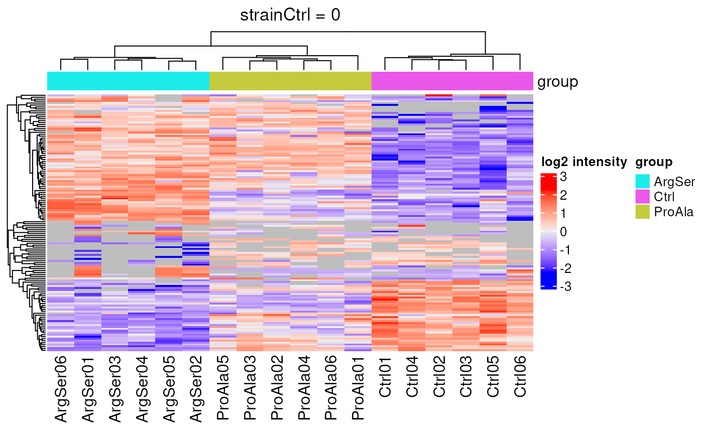
##
## [[2]]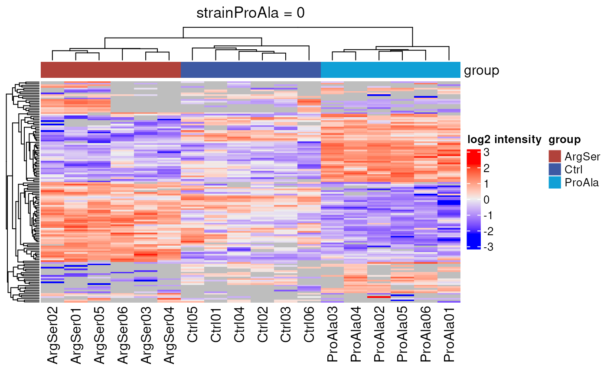
##
## [[3]]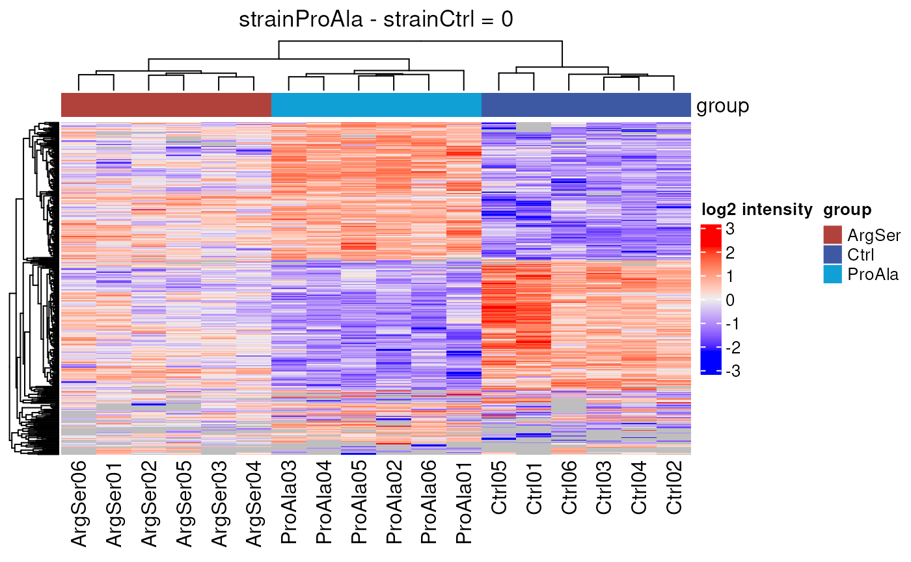
## used (Mb) gc trigger (Mb) max used (Mb)
## Ncells 11738171 626.9 17334451 925.8 17334451 925.8
## Vcells 34967441 266.8 105309341 803.5 262547462 2003.1## used (Mb) gc trigger (Mb) max used (Mb)
## Ncells 11738178 626.9 17334451 925.8 17334451 925.8
## Vcells 34967489 266.8 105309341 803.5 262547462 2003.1Detail plots
We can explore the data for a precursor to validate the statistical inference results. For example, let’s explore the precursor and the normalised precursor intensities for the precursor with the most significant log2 fold change.
## [1] "(UniMod:1)SDS(UniMod:21)EVNQEAKPEVK2"
inferencesPTM |>
filter(feature == target_feature)## logFC
## strainCtrl.(UniMod:1)SDS(UniMod:21)EVNQEAKPEVK2 -0.1018668
## strainProAla.(UniMod:1)SDS(UniMod:21)EVNQEAKPEVK2 2.0438618
## strainProAla - strainCtrl.(UniMod:1)SDS(UniMod:21)EVNQEAKPEVK2 2.1457286
## se
## strainCtrl.(UniMod:1)SDS(UniMod:21)EVNQEAKPEVK2 0.09779209
## strainProAla.(UniMod:1)SDS(UniMod:21)EVNQEAKPEVK2 0.09989353
## strainProAla - strainCtrl.(UniMod:1)SDS(UniMod:21)EVNQEAKPEVK2 0.09850259
## df
## strainCtrl.(UniMod:1)SDS(UniMod:21)EVNQEAKPEVK2 15.94953
## strainProAla.(UniMod:1)SDS(UniMod:21)EVNQEAKPEVK2 15.94953
## strainProAla - strainCtrl.(UniMod:1)SDS(UniMod:21)EVNQEAKPEVK2 15.94953
## t
## strainCtrl.(UniMod:1)SDS(UniMod:21)EVNQEAKPEVK2 -1.041667
## strainProAla.(UniMod:1)SDS(UniMod:21)EVNQEAKPEVK2 20.460402
## strainProAla - strainCtrl.(UniMod:1)SDS(UniMod:21)EVNQEAKPEVK2 21.783474
## pval
## strainCtrl.(UniMod:1)SDS(UniMod:21)EVNQEAKPEVK2 3.130993e-01
## strainProAla.(UniMod:1)SDS(UniMod:21)EVNQEAKPEVK2 7.155345e-13
## strainProAla - strainCtrl.(UniMod:1)SDS(UniMod:21)EVNQEAKPEVK2 2.721245e-13
## adjPval
## strainCtrl.(UniMod:1)SDS(UniMod:21)EVNQEAKPEVK2 7.174904e-01
## strainProAla.(UniMod:1)SDS(UniMod:21)EVNQEAKPEVK2 2.281339e-08
## strainProAla - strainCtrl.(UniMod:1)SDS(UniMod:21)EVNQEAKPEVK2 8.623080e-09
## contrast
## strainCtrl.(UniMod:1)SDS(UniMod:21)EVNQEAKPEVK2 strainCtrl
## strainProAla.(UniMod:1)SDS(UniMod:21)EVNQEAKPEVK2 strainProAla
## strainProAla - strainCtrl.(UniMod:1)SDS(UniMod:21)EVNQEAKPEVK2 strainProAla - strainCtrl
## feature
## strainCtrl.(UniMod:1)SDS(UniMod:21)EVNQEAKPEVK2 (UniMod:1)SDS(UniMod:21)EVNQEAKPEVK2
## strainProAla.(UniMod:1)SDS(UniMod:21)EVNQEAKPEVK2 (UniMod:1)SDS(UniMod:21)EVNQEAKPEVK2
## strainProAla - strainCtrl.(UniMod:1)SDS(UniMod:21)EVNQEAKPEVK2 (UniMod:1)SDS(UniMod:21)EVNQEAKPEVK2To obtain the required data, we perform a little data manipulation pipeline:
- We use the QFeatures subsetting functionality to retrieve all data related to ion data used for model fitting.
- We then convert the data with longForm() for plotting.
- Finally, we plot the log2 normalised intensities for each sample for the unnormalised and normalised phospho precursors.
qf[target_feature, , c("precursorsPTM_log","precursorsPTM_norm")] |> #1
longForm(colvars = colnames(colData(qf))) |> #2
data.frame() |>
ggplot() +
aes(x = sampleId,
y = value) +
geom_line(aes(group = rowname), linewidth = 0.1) +
geom_point(aes(colour = strain)) +
facet_wrap(~ assay, scales = "free") +
ggtitle(target_feature) +
theme_minimal() +
theme(axis.text.x = element_blank())## Warning: 'experiments' dropped; see 'drops()'## harmonizing input:
## removing 90 sampleMap rows not in names(experiments)
## removing 18 colData rownames not in sampleMap 'primary'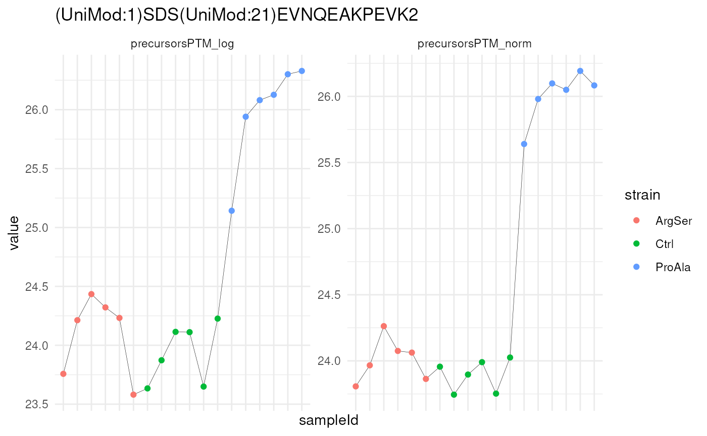
qf[target_feature, , c("precursorsPTM_log","precursorsPTM_norm")] |> #1
longForm(colvars = colnames(colData(qf))) |> #2
data.frame() |>
filter(!is.na(value)) %>%
{
ggplot(.) +
aes(x = strain,
y = value) +
geom_boxplot(aes(colour = strain)) +
facet_wrap(~ assay, scales = "free") +
geom_jitter(aes(shape = rowname)) +
scale_shape_manual(values = seq_len(dplyr::n_distinct(.$rowname))) +
ggtitle(target_feature) +
theme_minimal() +
theme(axis.text.x = element_blank()) +
guides(shape = "none")
}## Warning: 'experiments' dropped; see 'drops()'## harmonizing input:
## removing 90 sampleMap rows not in names(experiments)
## removing 18 colData rownames not in sampleMap 'primary'
We prioritised DA phospho-precursors. However, they might be DA due to the parent proteins on which the PTMs occur that can also change in abundance regardless of the modification, which is clearly illustrated for the top DA phospho-precursor!
Any changes in the abundance of a phospho-peptidoform can thus be confounded with changes in protein abundance.
We therefore first assess differential abundance at the protein level for the non-enriched samples and will then propose an differential usage analysis where the precursor-level log2-FC is corrected for the protein-level log2-FC.
## used (Mb) gc trigger (Mb) max used (Mb)
## Ncells 11747383 627.4 17334451 925.8 17334451 925.8
## Vcells 34976897 266.9 105309341 803.5 262547462 2003.1## used (Mb) gc trigger (Mb) max used (Mb)
## Ncells 11747387 627.4 17334451 925.8 17334451 925.8
## Vcells 34976940 266.9 105309341 803.5 262547462 2003.1Data Modeling at protein-level (non-enriched samples)
Model estimation
We can use the same model to model the protein-level data of the non-enriched runs. Indeed, they stem from the same biological samples.
We enabled M-estimation (robust = TRUE) for improved
robustness against outliers.
## used (Mb) gc trigger (Mb) max used (Mb)
## Ncells 11747378 627.4 17334451 925.8 17334451 925.8
## Vcells 34976941 266.9 105309341 803.5 262547462 2003.1## used (Mb) gc trigger (Mb) max used (Mb)
## Ncells 11747388 627.4 17334451 925.8 17334451 925.8
## Vcells 34976994 266.9 105309341 803.5 262547462 2003.1Inference
We assess the contrast for each protein.
We extract the results table from the proteins
summarised experiment in the qf object.
## used (Mb) gc trigger (Mb) max used (Mb)
## Ncells 11747379 627.4 17334451 925.8 17334451 925.8
## Vcells 34976995 266.9 105309341 803.5 262547462 2003.1## used (Mb) gc trigger (Mb) max used (Mb)
## Ncells 11747389 627.4 17334451 925.8 17334451 925.8
## Vcells 34977048 266.9 105309341 803.5 262547462 2003.1Report results
We report the results using a results table, volcano plots and heatmaps.
Detail plots
We can explore the data for a protein to validate the statistical inference results. For example, let’s explore the normalised precursor and the summarised protein intensities for the protein with the most significant log2 fold change.
To obtain the required data, we perform a little data manipulation pipeline:
- We use the QFeatures subsetting functionality to retrieve all data related to and focusing on the precursors_log and proteins sets that contains the peptide ion data used for model fitting.
- We then convert the data with longForm() for plotting.
- Finally, we plot the log2 normalised intensities for each sample at the protein and at the peptide level. Since multiple peptides are recorded for the protein, we link peptides across samples using a grey line. Samples are colored according to strain.
Compare phospo-precursor level intensities to protein level intensities
We compare the intensities for the top 5 DA phospo-precursors for the first contrast to these of their corresponding protein in the non-enriched assay.
contr = colnames(L)[1]
top5 <- inferencesPTM |>
filter(contrast == contr) |>
arrange(pval) |>
head(n = 5) |>
pull(feature)
for (feat in top5)
{
ptm_data <- qf[,,c("precursorsPTM_norm")] |>
longForm(colvars = colnames(colData(qf)), rowvars = "Protein.Group") |>
data.frame() |>
filter(rowname==feat)
feature_protein <- ptm_data |>
pull("Protein.Group") |>
unique()
prot_data <- qf[,,"proteins"]|>
longForm(colvars = colnames(colData(qf)), rowvars = "Protein.Group") |>
data.frame() |>
filter(Protein.Group==feature_protein)
ptm_protein <- rbind(ptm_data, prot_data)
ylims <- ptm_protein |>
group_by(assay) |>
summarise(cent = mean(range(value,na.rm=TRUE)), ampl = diff(range(value,na.rm=TRUE))) |>
mutate(lower = cent - max(ampl)/2,
upper = cent + max(ampl)/2) |>
select(-c(cent, ampl))
comparison_plot <- ptm_protein |>
ggplot() +
aes(x = sampleId,
y = value) +
geom_line(aes(group = rowname), linewidth = 0.1) +
geom_point(aes(colour = strain)) +
facet_wrap(~ assay, scales = "free") +
labs(
title = paste0(feat," / ", feature_protein),
subtitle = paste("padj PTM =",
inferencesPTM |>
filter(feature == feat & contrast == contr) |>
pull(adjPval) |>
round(digits = 3))
) +
theme_minimal() +
theme(axis.text.x = element_blank()) +
ggh4x::facetted_pos_scales(
y = list(
assay == ylims$assay[1] ~ scale_y_continuous(limits = unlist(ylims[1,c("lower","upper")])),
assay == ylims$assay[2] ~ scale_y_continuous(limits = unlist(ylims[2,c("lower","upper")])),
assay == ylims$assay[3] ~ scale_y_continuous(limits = unlist(ylims[3,c("lower","upper")]))
)
)
print(comparison_plot)
}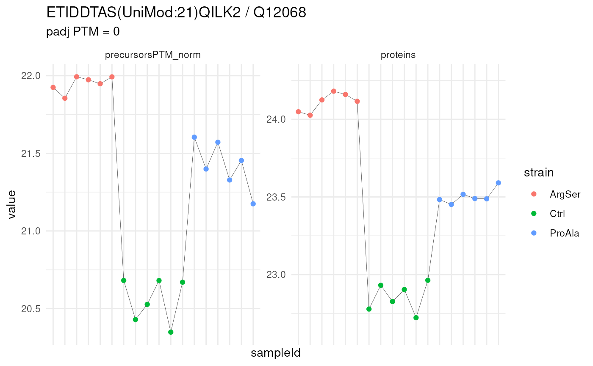
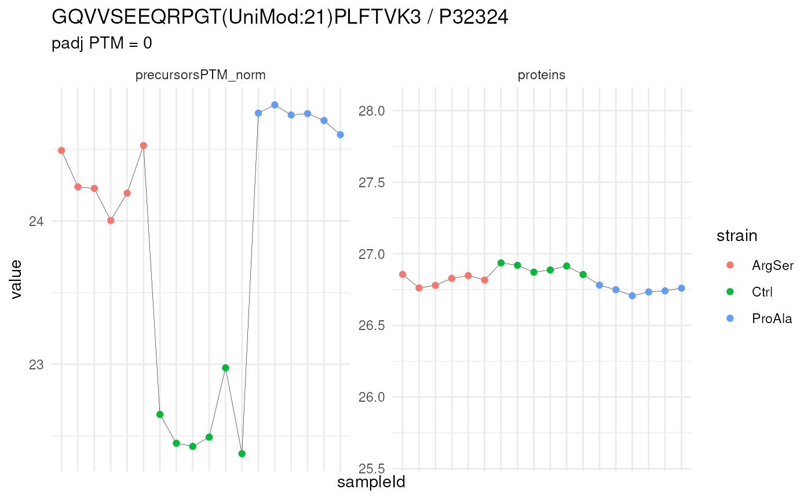
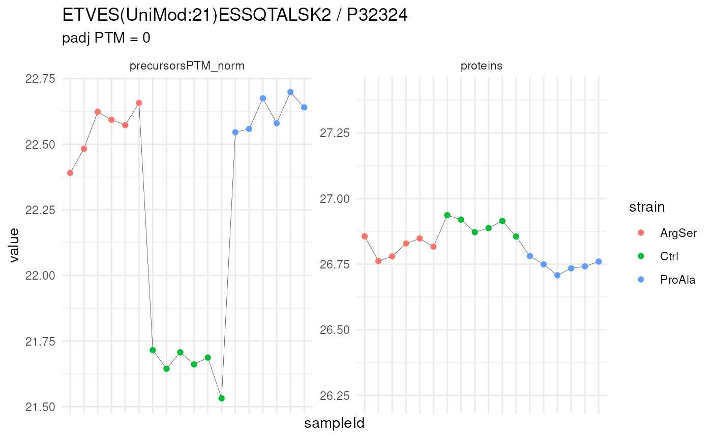
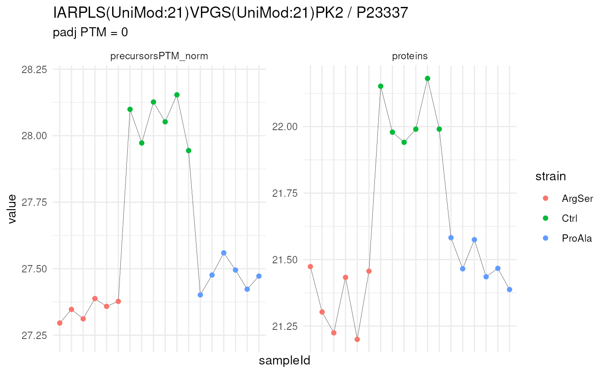
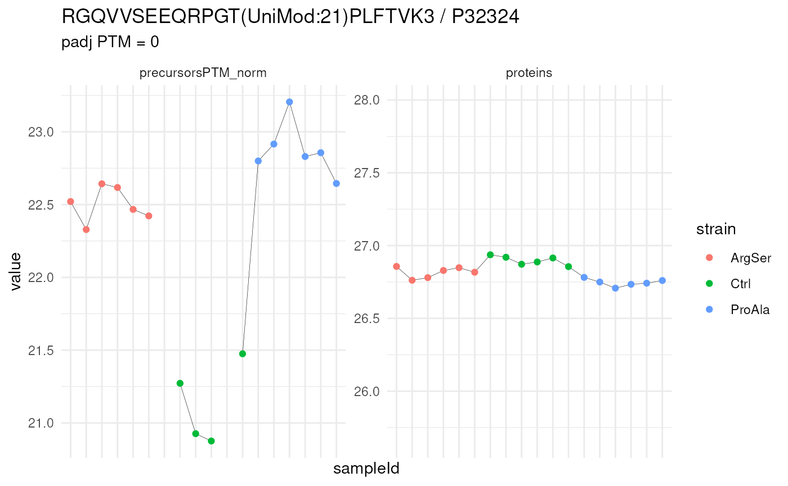
## used (Mb) gc trigger (Mb) max used (Mb)
## Ncells 11757625 628.0 17334451 925.8 17334451 925.8
## Vcells 34997363 267.1 105309341 803.5 262547462 2003.1## used (Mb) gc trigger (Mb) max used (Mb)
## Ncells 11757632 628.0 17334451 925.8 17334451 925.8
## Vcells 34997411 267.1 105309341 803.5 262547462 2003.1We see for multiple top DA phospho-precursors, that the reason for DA seems to be associated with the similar changes in overall protein abundance. Interestingly for other phospho-precursors the abundance of the precursor changes between strains while the abundances at the protein-level remains stable between strains. Hence, there is a stron need to correct the phospho-precursor level fold changes/ abundances for corresponding changes at the protein level.
Data Modeling of phospho-peptidoform usages
Background
Differential abundant PTMs can be due protein abundance
Port concept of differential usage towards PTMs:
Two designs: PTM and protein level quantification be done
- on same sample: paired design
- using independent samples
Paired samples
-
Perform regular data processing at the protein-level:
- log2-transformation,
- normalisation and
- summarisation
Calculate relative log2 transformed abundances at peptidoform level
Perform conventional differential msqrob2 analysis on the relative peptidoform level. Immediately gives us diferential usages!
Optionally
- aggregate relative log2 transformed abundances at peptidoform level at PTM-level
- perform a differential msqrob2 analysis at PTM-level
Paired samples: calculate usages
We can calculate the usages for every precursor ion by subtracting the corresponding log-transformed protein level abundance values from the log2 transformed and normalized precursor ion intensities.
We first develop a function that will extract the corresponding protein level abundance values.
It has following inputs:
-
se: summarised experiment of the log2-transformed and normalized precursor ion -
seNE: summarised experiment of the log2-transformed, normalized and aggregated protein level abundances. -
fcol: annotation column with protein name for the precursor ions -
fcolNE: annotation column with protein name for the protein level abundances -
matchColsSeToseNE: a vector that matches the columns ofseNEto these inse.
The function
- initiates the matrix with log2 tranformed correction factors at NA.
- Matches the rows of se with these of seNE using the annotation columns
- Extracts the protein abundance values for the precursors from the matching rows and columns in the protein level assay.
calculate_usage_nfLog <- function(se,
seNE,
fcol = "Protein.Group",
fcolNE = "Protein.Group",
matchColsSeToseNE = 1:ncol(se)
)
{
nf <- assay(se); nf[,] <- NA #1.
matchSeRowsToSeNERows <- match(
rowData(se)[[fcol]],
rowData(seNE)[[fcolNE]]) #2.
idsMatch <- which(!is.na(matchSeRowsToSeNERows))
nf[idsMatch, ] <- assay(seNE)[matchSeRowsToSeNERows[idsMatch], matchColsSeToseNE] #3.
return(nf)
}Here we
- match the samples of the phosho enriched samples to these of the non-enriched assay.
- calculate the correction factors
- make a new assay with usages by sweeping out the log2 protein abundances from from the log2 precursor abundances.
matchedSamps <- match(
getWithColData(qf,"precursorsPTM_norm")$sampleId,
getWithColData(qf,"proteins")$sampleId
) ## 1.
nfLog <- calculate_usage_nfLog(qf[["precursorsPTM_norm"]],
qf[["proteins"]],
fcol= "Protein.Group",
fcolNE = "Protein.Group",
matchColsSeToseNE = matchedSamps) ## 2.
qf <- sweep( #4. Subtract log2 norm factor elementwise (MARGIN = 1:2)
qf,
MARGIN = 1:2,
STATS = nfLog,
i = "precursorsPTM_norm",
name = "precursorsPTM_usage"
) ## 3. We only keep precursors for which the usage can be calculated in at least 6 samples.
n <- ncol(qf[["precursorsPTM_usage"]])
qf <- filterNA(qf, i = "precursorsPTM_usage", pNA = (n - nObs) / n)We assess the distribution of the usages.
qf[, , "precursorsPTM_usage"] |> #1.
longForm(colvars = colnames(colData(qf))) |> #2.
data.frame() |>
filter(!is.na(value)) |>
ggplot() + #3.
aes(x = value,
colour = strain,
group = colname) +
geom_density() +
labs(subtitle = "Usage") +
theme_minimal()## harmonizing input:
## removing 126 sampleMap rows not in names(experiments)
## removing 18 colData rownames not in sampleMap 'primary'
## used (Mb) gc trigger (Mb) max used (Mb)
## Ncells 11773187 628.8 17334451 925.8 17334451 925.8
## Vcells 43459782 331.6 105309341 803.5 262547462 2003.1## used (Mb) gc trigger (Mb) max used (Mb)
## Ncells 11773194 628.8 17334451 925.8 17334451 925.8
## Vcells 43459830 331.6 105309341 803.5 262547462 2003.1Model estimation
Again we can estimate the same model but now for the usages.
qf <- msqrob(
qf,
i = "precursorsPTM_usage",
formula = model,
robust = TRUE,
overwrite = TRUE)We enabled M-estimation (robust = TRUE) for improved
robustness against outliers.
## used (Mb) gc trigger (Mb) max used (Mb)
## Ncells 12438966 664.4 22557664 1204.8 17334451 925.8
## Vcells 45297686 345.6 105309341 803.5 262547462 2003.1## used (Mb) gc trigger (Mb) max used (Mb)
## Ncells 12438973 664.4 22557664 1204.8 17334451 925.8
## Vcells 45297734 345.6 105309341 803.5 262547462 2003.1Inference
Contrasts remain the same. We assess the contrast for each precursor.
qf <- hypothesisTest(qf, i = "precursorsPTM_usage", contrast = L, overwrite = TRUE)We extract the results table from the proteins
summarised experiment in the qf object.
inferencesUsage <-
msqrobCollect(qf[["precursorsPTM_usage"]], L)## used (Mb) gc trigger (Mb) max used (Mb)
## Ncells 12439212 664.4 22557664 1204.8 22557664 1204.8
## Vcells 46104993 351.8 105309341 803.5 262547462 2003.1## used (Mb) gc trigger (Mb) max used (Mb)
## Ncells 12439216 664.4 22557664 1204.8 22557664 1204.8
## Vcells 46105036 351.8 105309341 803.5 262547462 2003.1Report results
We report the results using a results table, volcano plots and heatmaps.
Results table
for (j in colnames(L)) {
inference <- inferencesUsage |>
dplyr::filter(adjPval < alpha & contrast == j)
cat("**Median - Contrast:**", j, "= 0 (", nrow(inference),
"significant proteins)\n\n")
cat('<div style="max-height:300px; overflow-y:auto;">')
print(
kable(
inference |>
dplyr::arrange(pval) |>
dplyr::relocate(feature),
row.names = FALSE
)
)
cat('</div>')
cat("\n\n\n---\n\n")
}Median - Contrast: strainCtrl = 0 ( 36 significant proteins)
| feature | logFC | se | df | t | pval | adjPval | contrast |
|---|---|---|---|---|---|---|---|
| GQVVSEEQRPGT(UniMod:21)PLFTVK3 | -1.8482677 | 0.1068439 | 15.836972 | -17.298767 | 0.00e+00 | 0.0000003 | strainCtrl |
| ETVES(UniMod:21)ESSQTALSK2 | -0.9952475 | 0.0783042 | 16.197308 | -12.710008 | 0.00e+00 | 0.0000119 | strainCtrl |
| RAT(UniMod:21)YAGFLLADPK3 | -2.7741769 | 0.2279059 | 11.950433 | -12.172465 | 0.00e+00 | 0.0004465 | strainCtrl |
| RGQVVSEEQRPGT(UniMod:21)PLFTVK3 | -1.4603261 | 0.1402037 | 13.802960 | -10.415744 | 1.00e-07 | 0.0004999 | strainCtrl |
| ETVESESS(UniMod:21)QTALSK2 | -1.9360818 | 0.1621744 | 10.909544 | -11.938270 | 1.00e-07 | 0.0008275 | strainCtrl |
| GSSS(UniMod:21)LYTLVINDAGK2 | 1.1442699 | 0.1346803 | 16.943653 | 8.496195 | 2.00e-07 | 0.0008472 | strainCtrl |
| IS(UniMod:21)PPVVAYR2 | -1.8883643 | 0.2283225 | 15.390528 | -8.270603 | 5.00e-07 | 0.0017963 | strainCtrl |
| GSS(UniMod:21)SLYTLVINDAGK3 | 1.0582663 | 0.1296797 | 15.395842 | 8.160619 | 6.00e-07 | 0.0017963 | strainCtrl |
| LVQIT(UniMod:21)PDGK2 | 0.7593899 | 0.0947649 | 15.893705 | 8.013408 | 6.00e-07 | 0.0017963 | strainCtrl |
| T(UniMod:21)GAAPQTTFNVAPNSTPIVSTAATGLQHK4 | -1.0891227 | 0.1291096 | 14.475080 | -8.435648 | 6.00e-07 | 0.0017963 | strainCtrl |
| T(UniMod:21)GAAPQTTFNVAPNSTPIVSTAATGLQHK3 | -0.6099364 | 0.0764334 | 15.165634 | -7.979970 | 8.00e-07 | 0.0023318 | strainCtrl |
| LYDLLGVS(UniMod:21)PSANEQELK2 | -1.0772610 | 0.1437330 | 15.383013 | -7.494876 | 1.60e-06 | 0.0042276 | strainCtrl |
| VSSFNHS(UniMod:21)SSGMTSSDSLASEEVPSNK3 | 4.2615011 | 0.2899826 | 6.774257 | 14.695715 | 2.20e-06 | 0.0052068 | strainCtrl |
| GSEIVIAT(UniMod:21)PGR2 | -0.9925106 | 0.1377531 | 15.595807 | -7.204996 | 2.40e-06 | 0.0054067 | strainCtrl |
| DLARENS(UniMod:21)LETTFSSVNTR3 | -0.7759475 | 0.1127871 | 16.683016 | -6.879753 | 3.00e-06 | 0.0061279 | strainCtrl |
| RGQVVSEEQRPGT(UniMod:21)PLFTVK4 | -1.6691797 | 0.1777611 | 9.684021 | -9.390016 | 3.60e-06 | 0.0069362 | strainCtrl |
| DPIPSDPS(UniMod:21)ER2 | -0.6518697 | 0.0984945 | 16.943653 | -6.618339 | 4.40e-06 | 0.0076468 | strainCtrl |
| RNT(UniMod:21)AIPTK2 | 1.0023303 | 0.1484774 | 15.995194 | 6.750728 | 4.70e-06 | 0.0076468 | strainCtrl |
| NGLNELASS(UniMod:21)ATK2 | 0.8900045 | 0.1335761 | 16.492505 | 6.662903 | 4.70e-06 | 0.0076468 | strainCtrl |
| NNEGSSNMNMNRNDLDDVS(UniMod:21)HYEMK3 | 3.6974238 | 0.4017140 | 8.943653 | 9.204121 | 7.40e-06 | 0.0115386 | strainCtrl |
| EIVFAS(UniMod:21)PPRK2 | -0.8539713 | 0.1367768 | 16.248668 | -6.243540 | 1.09e-05 | 0.0161016 | strainCtrl |
| M(UniMod:35)TEAGS(UniMod:21)LDLIDDAGENS(UniMod:21)DLEDRIDNSLPGSQR4 | -2.8200375 | 0.2645438 | 7.206195 | -10.660002 | 1.14e-05 | 0.0161016 | strainCtrl |
| AES(UniMod:21)DAVAEANDIDD2 | -0.5139705 | 0.0847688 | 16.815572 | -6.063202 | 1.33e-05 | 0.0179509 | strainCtrl |
| SDEEHTFENADAGAS(UniMod:21)ATYPM(UniMod:35)QC(UniMod:4)SALR3 | 3.0092552 | 0.2748446 | 6.811645 | 10.948935 | 1.43e-05 | 0.0185201 | strainCtrl |
| NTTATPIQFADFNT(UniMod:21)SSNNLTPSQSVTNSGTQVAHGNNMEVDR4 | 3.1647276 | 0.2445506 | 5.787366 | 12.940991 | 1.72e-05 | 0.0198799 | strainCtrl |
| RPTYSSS(UniMod:21)KSNNWTPGEASDTPPLPPHATPK4 | -3.0060290 | 0.3923709 | 9.943653 | -7.661193 | 1.77e-05 | 0.0198799 | strainCtrl |
| MQNIAPS(UniMod:21)RSSESTPTSGPPLLPPR3 | 3.8203404 | 0.3076323 | 5.943653 | 12.418528 | 1.78e-05 | 0.0198799 | strainCtrl |
| ETNNNLSNM(UniMod:35)NSS(UniMod:21)PAQNPK3 | -3.5348867 | 0.2182677 | 4.943653 | -16.195190 | 1.79e-05 | 0.0198799 | strainCtrl |
| (UniMod:27)EYS(UniMod:21)NVDQYGHQR3 | 2.0973159 | 0.3162318 | 12.075387 | 6.632210 | 2.35e-05 | 0.0251931 | strainCtrl |
| (UniMod:27)EKSPT(UniMod:21)PQT(UniMod:21)STASLSSVTK3 | 3.2079677 | 0.4670287 | 10.645516 | 6.868888 | 3.18e-05 | 0.0330043 | strainCtrl |
| (UniMod:27)EAVVDDGS(UniMod:21)ENAFGIPEFTR2 | 1.2763621 | 0.2202474 | 15.015793 | 5.795128 | 3.52e-05 | 0.0352965 | strainCtrl |
| NEHS(UniMod:21)NLAVEDNIPEEEPK3 | -0.5980074 | 0.1085922 | 16.254505 | -5.506911 | 4.52e-05 | 0.0434145 | strainCtrl |
| SNNWTPGEAS(UniMod:21)DT(UniMod:21)PPLPPHATPK3 | 4.8956957 | 0.4653275 | 5.943653 | 10.520967 | 4.61e-05 | 0.0434145 | strainCtrl |
| EQATDPILTATGPEDM(UniMod:35)QQSAS(UniMod:21)IVGPSSNANPVTATAATENQPK4 | -3.4580659 | 0.5320764 | 10.825838 | -6.499191 | 4.78e-05 | 0.0436994 | strainCtrl |
| MSES(UniMod:21)PMFAANGMPK2 | 2.6889135 | 0.4182244 | 10.934164 | 6.429356 | 5.02e-05 | 0.0445779 | strainCtrl |
| RAT(UniMod:21)YAGFLLADPK2 | -2.3458417 | 0.3564194 | 10.268941 | -6.581690 | 5.49e-05 | 0.0474368 | strainCtrl |
Median - Contrast: strainProAla = 0 ( 58 significant proteins)
| feature | logFC | se | df | t | pval | adjPval | contrast |
|---|---|---|---|---|---|---|---|
| (UniMod:1)SDS(UniMod:21)EVNQEAKPEVK2 | 2.0007583 | 0.0807470 | 15.201633 | 24.778123 | 0.00e+00 | 0.0000000 | strainProAla |
| S(UniMod:21)DSEVNQEAKPEVK2 | 2.0851157 | 0.1437238 | 16.193635 | 14.507793 | 0.00e+00 | 0.0000016 | strainProAla |
| S(UniMod:21)DSEVNQEAKPEVK3 | 2.3155078 | 0.1874540 | 13.858093 | 12.352405 | 0.00e+00 | 0.0000656 | strainProAla |
| LYDLLGVS(UniMod:21)PSANEQELK2 | -1.5736386 | 0.1405310 | 15.383013 | -11.197804 | 0.00e+00 | 0.0000656 | strainProAla |
| AINS(UniMod:21)PIIR2 | 1.1395342 | 0.1173179 | 16.074020 | 9.713220 | 0.00e+00 | 0.0002442 | strainProAla |
| RNT(UniMod:21)AIPTK2 | 1.4055365 | 0.1517256 | 15.995194 | 9.263673 | 1.00e-07 | 0.0004074 | strainProAla |
| NNEES(UniMod:21)REEATAALK3 | -0.8573307 | 0.0929604 | 15.486627 | -9.222534 | 1.00e-07 | 0.0004864 | strainProAla |
| INMGGGLFLSPEDIT(UniMod:21)KIASGLIS(UniMod:21)PVLGEVSER4 | -5.0261755 | 0.3832550 | 8.914191 | -13.114442 | 4.00e-07 | 0.0015288 | strainProAla |
| APVAS(UniMod:21)PRPAAT(UniMod:21)PNLSK3 | -0.7254025 | 0.0903886 | 16.348450 | -8.025377 | 5.00e-07 | 0.0015776 | strainProAla |
| HSRPLS(UniMod:21)IS(UniMod:21)ST(UniMod:21)TPLDLQR3 | 5.3704830 | 0.2719755 | 5.943653 | 19.746205 | 1.20e-06 | 0.0037231 | strainProAla |
| GSSS(UniMod:21)LYTLVINDAGK2 | 0.9759734 | 0.1346803 | 16.943653 | 7.246595 | 1.40e-06 | 0.0039199 | strainProAla |
| VSSFNHS(UniMod:21)SSGMTSSDSLASEEVPSNK3 | 4.3675411 | 0.2982378 | 6.774257 | 14.644494 | 2.20e-06 | 0.0057447 | strainProAla |
| SDEEHTFENADAGAS(UniMod:21)ATYPM(UniMod:35)QC(UniMod:4)SALR3 | 3.3647961 | 0.2393724 | 6.811645 | 14.056741 | 2.80e-06 | 0.0066184 | strainProAla |
| (UniMod:1)TT(UniMod:21)ASSSASQLQQR2 | 1.0472439 | 0.1505212 | 15.863188 | 6.957450 | 3.40e-06 | 0.0074838 | strainProAla |
| GSS(UniMod:21)SLYTLVINDAGK3 | 0.8802596 | 0.1288067 | 15.395842 | 6.833958 | 4.90e-06 | 0.0092999 | strainProAla |
| M(UniMod:35)TEAGS(UniMod:21)LDLIDDAGENS(UniMod:21)DLEDRIDNSLPGSQR4 | -2.9411947 | 0.2453088 | 7.206195 | -11.989765 | 5.10e-06 | 0.0092999 | strainProAla |
| T(UniMod:21)GAAPQTTFNVAPNSTPIVSTAATGLQHK4 | -0.9008766 | 0.1284796 | 14.475080 | -7.011823 | 5.10e-06 | 0.0092999 | strainProAla |
| APVAS(UniMod:21)PRPAAT(UniMod:21)PNLSK2 | -0.7488539 | 0.1107006 | 15.377494 | -6.764679 | 5.60e-06 | 0.0094000 | strainProAla |
| T(UniMod:21)GAAPQTTFNVAPNSTPIVSTAATGLQHK3 | -0.5462570 | 0.0804674 | 15.165634 | -6.788552 | 5.80e-06 | 0.0094000 | strainProAla |
| LVQIT(UniMod:21)PDGK2 | 0.6109495 | 0.0934934 | 15.893705 | 6.534683 | 7.10e-06 | 0.0106696 | strainProAla |
| SST(UniMod:21)EHMLISPGR3 | 3.4504443 | 0.1934187 | 5.175661 | 17.839250 | 7.60e-06 | 0.0106696 | strainProAla |
| NNEGSSNMNMNRNDLDDVS(UniMod:21)HYEMK3 | 3.6130811 | 0.3935977 | 8.943653 | 9.179630 | 7.60e-06 | 0.0106696 | strainProAla |
| TPTPTPPVVAEPAIS(UniMod:21)PRPVSQR3 | -0.4663034 | 0.0739539 | 16.775678 | -6.305322 | 8.40e-06 | 0.0109398 | strainProAla |
| MQNIAPS(UniMod:21)RSSESTPTSGPPLLPPR3 | 3.9673353 | 0.2808286 | 5.943653 | 14.127249 | 8.50e-06 | 0.0109398 | strainProAla |
| QAGS(UniMod:21)PSSTVSSLAK2 | 0.9815689 | 0.1497656 | 15.013679 | 6.554036 | 9.10e-06 | 0.0112600 | strainProAla |
| MSEES(UniMod:21)LFESSPQK2 | -3.8347949 | 0.6096303 | 16.015957 | -6.290361 | 1.07e-05 | 0.0127550 | strainProAla |
| S(UniMod:21)DS(UniMod:21)EVNQEAKPEVK3 | 2.0185320 | 0.2384652 | 9.073396 | 8.464683 | 1.34e-05 | 0.0153179 | strainProAla |
| AALDEPDLNAVMT(UniMod:21)NEDSIDLNASEVDHSSR3 | 2.6824678 | 0.3278499 | 9.097476 | 8.181999 | 1.73e-05 | 0.0191485 | strainProAla |
| LRDLY(UniMod:21)LEQTESDSDFDEGSQANGSVPPLK3 | -4.9926570 | 0.6690994 | 10.210581 | -7.461756 | 1.92e-05 | 0.0204825 | strainProAla |
| M(UniMod:35)TDPHLNTPQVSTS(UniMod:21)PTFER3 | -3.1318378 | 0.4611515 | 11.721168 | -6.791342 | 2.17e-05 | 0.0224006 | strainProAla |
| S(UniMod:21)S(UniMod:21)IPAGTDPGSC(UniMod:4)GANFK3 | -3.7429438 | 0.3652596 | 6.777048 | -10.247352 | 2.27e-05 | 0.0226635 | strainProAla |
| MS(UniMod:21)DSEVNQEAKPEVK3 | 2.6987332 | 0.4358959 | 13.988217 | 6.191234 | 2.36e-05 | 0.0227736 | strainProAla |
| TGAAPQTTFNVAPNSTPIVSTAAT(UniMod:21)GLQHK3 | -1.0815174 | 0.1731465 | 13.615245 | -6.246256 | 2.43e-05 | 0.0227736 | strainProAla |
| APVAS(UniMod:21)PRPAATPNLSK2 | -0.5787964 | 0.0983087 | 14.876090 | -5.887539 | 3.09e-05 | 0.0280994 | strainProAla |
| GT(UniMod:21)QSQYESGLTSNK2 | -0.5976299 | 0.1054515 | 15.850881 | -5.667344 | 3.63e-05 | 0.0303160 | strainProAla |
| SNNWTPGEAS(UniMod:21)DT(UniMod:21)PPLPPHATPK3 | 5.5877970 | 0.5097408 | 5.943653 | 10.962037 | 3.65e-05 | 0.0303160 | strainProAla |
| MS(UniMod:21)DSEVNQEAKPEVK2 | 3.1037347 | 0.5412374 | 15.205809 | 5.734516 | 3.75e-05 | 0.0303160 | strainProAla |
| LVPADS(UniMod:21)DEEEYETSHISDTPVSLSSANDR4 | 4.8949772 | 0.2853207 | 4.328816 | 17.156053 | 3.81e-05 | 0.0303160 | strainProAla |
| MSES(UniMod:21)PMFAANGMPK2 | 2.7744928 | 0.4184729 | 10.934164 | 6.630041 | 3.82e-05 | 0.0303160 | strainProAla |
| DIPGDEAYNS(UniMod:21)DDIM(UniMod:35)APLREK3 | -3.9371653 | 0.3730761 | 5.943653 | -10.553250 | 4.53e-05 | 0.0341862 | strainProAla |
| S(UniMod:21)SSVYM(UniMod:35)DSEPAVNK2 | -4.3428436 | 0.4110750 | 5.937846 | -10.564601 | 4.53e-05 | 0.0341862 | strainProAla |
| NTTATPIQFADFNT(UniMod:21)SSNNLTPSQSVTNSGTQVAHGNNMEVDR4 | 3.6741388 | 0.3411907 | 5.787366 | 10.768578 | 4.80e-05 | 0.0354081 | strainProAla |
| SFGSGLKLKITDS(UniMod:21)NLENMEDVEAK3 | 3.1851425 | 0.2997127 | 5.762111 | 10.627317 | 5.32e-05 | 0.0363446 | strainProAla |
| ETNNNLSNM(UniMod:35)NSS(UniMod:21)PAQNPK3 | -2.8210861 | 0.2182677 | 4.943653 | -12.924890 | 5.34e-05 | 0.0363446 | strainProAla |
| TGLGTPNQQVSVPNIVS(UniMod:21)PK3 | 3.3709742 | 0.4316564 | 7.943653 | 7.809393 | 5.40e-05 | 0.0363446 | strainProAla |
| IS(UniMod:21)M(UniMod:35)SPNRELLK3 | -3.2032646 | 0.3147309 | 5.943653 | -10.177790 | 5.56e-05 | 0.0363446 | strainProAla |
| MKT(UniMod:21)TDTYPSLPK2 | 0.9145450 | 0.1545666 | 12.721892 | 5.916836 | 5.57e-05 | 0.0363446 | strainProAla |
| (UniMod:27)ES(UniMod:21)VHNHSDGDDVDIPM(UniMod:35)DDSPVNEEAR4 | 2.8977437 | 0.2274719 | 4.943653 | 12.738910 | 5.72e-05 | 0.0363446 | strainProAla |
| TVDPAS(UniMod:21)APNHSPEIDNLDDLVVLK4 | 2.2915891 | 0.3857961 | 12.506918 | 5.939896 | 5.75e-05 | 0.0363446 | strainProAla |
| DASM(UniMod:35)QHDLIPLNSSDDYHNDASVTAATSNNFLSS(UniMod:21)PSSSDSLSK4 | -2.9980051 | 0.4497650 | 9.838373 | -6.665715 | 6.05e-05 | 0.0367797 | strainProAla |
| LGLPHGS(UniMod:21)GPT(UniMod:21)SVYNNK2 | -2.2257780 | 0.2534438 | 6.775273 | -8.782137 | 6.06e-05 | 0.0367797 | strainProAla |
| M(UniMod:35)KVEVDS(UniMod:21)FSGAK3 | -0.9864823 | 0.1862873 | 16.781519 | -5.295490 | 6.19e-05 | 0.0368632 | strainProAla |
| (UniMod:28)QAGS(UniMod:21)PSSTVSSLAK2 | 1.3099345 | 0.2442919 | 15.672697 | 5.362169 | 6.82e-05 | 0.0398108 | strainProAla |
| ALLELLDDS(UniMod:21)PVTPGETR3 | 1.5166606 | 0.2182537 | 8.891094 | 6.949071 | 7.10e-05 | 0.0407351 | strainProAla |
| ITIDS(UniMod:21)PYLVC(UniMod:4)TEGEK2 | 0.5405267 | 0.1037362 | 16.500582 | 5.210591 | 7.77e-05 | 0.0437645 | strainProAla |
| NVSTEHQNQSHPVNS(UniMod:21)ESHLIAEPNILTPYVPSESSQTPVMK4 | 3.1528234 | 0.2676530 | 4.943653 | 11.779517 | 8.34e-05 | 0.0461112 | strainProAla |
| TT(UniMod:21)PSFVAFTDTER2 | 0.5073982 | 0.0989436 | 16.523363 | 5.128158 | 9.16e-05 | 0.0492623 | strainProAla |
| RPLS(UniMod:21)QPTTSIGFPALEK3 | -0.5812232 | 0.1112470 | 15.508035 | -5.224620 | 9.23e-05 | 0.0492623 | strainProAla |
Median - Contrast: strainProAla - strainCtrl = 0 ( 115 significant proteins)
| feature | logFC | se | df | t | pval | adjPval | contrast |
|---|---|---|---|---|---|---|---|
| (UniMod:1)SDS(UniMod:21)EVNQEAKPEVK2 | 2.0718815 | 0.0818991 | 15.201633 | 25.297983 | 0.0000000 | 0.0000000 | strainProAla - strainCtrl |
| GQVVSEEQRPGT(UniMod:21)PLFTVK3 | 2.3554048 | 0.1042088 | 15.836972 | 22.602750 | 0.0000000 | 0.0000000 | strainProAla - strainCtrl |
| ETVES(UniMod:21)ESSQTALSK2 | 1.1121529 | 0.0762780 | 16.197308 | 14.580258 | 0.0000000 | 0.0000010 | strainProAla - strainCtrl |
| S(UniMod:21)DSEVNQEAKPEVK2 | 1.8593632 | 0.1469425 | 16.193635 | 12.653676 | 0.0000000 | 0.0000063 | strainProAla - strainCtrl |
| RGQVVSEEQRPGT(UniMod:21)PLFTVK3 | 1.8829844 | 0.1426789 | 13.802960 | 13.197357 | 0.0000000 | 0.0000200 | strainProAla - strainCtrl |
| AINS(UniMod:21)PIIR2 | 1.2208742 | 0.1146020 | 16.074020 | 10.653168 | 0.0000000 | 0.0000481 | strainProAla - strainCtrl |
| RAT(UniMod:21)YAGFLLADPK3 | 3.0804606 | 0.2239632 | 11.950433 | 13.754318 | 0.0000000 | 0.0000481 | strainProAla - strainCtrl |
| IS(UniMod:21)PPVVAYR2 | 2.3977791 | 0.2279889 | 15.390528 | 10.517085 | 0.0000000 | 0.0000766 | strainProAla - strainCtrl |
| EIVFAS(UniMod:21)PPRK2 | 1.3240693 | 0.1377710 | 16.248668 | 9.610654 | 0.0000000 | 0.0001395 | strainProAla - strainCtrl |
| S(UniMod:21)DSEVNQEAKPEVK3 | 1.8834481 | 0.1763438 | 13.858093 | 10.680546 | 0.0000000 | 0.0001395 | strainProAla - strainCtrl |
| ETVESESS(UniMod:21)QTALSK2 | 2.0626558 | 0.1644077 | 10.909544 | 12.545978 | 0.0000001 | 0.0002239 | strainProAla - strainCtrl |
| (UniMod:1)TT(UniMod:21)ASSSASQLQQR2 | 1.4414307 | 0.1585706 | 15.863188 | 9.090148 | 0.0000001 | 0.0002802 | strainProAla - strainCtrl |
| GSEIVIAT(UniMod:21)PGR2 | 1.2009457 | 0.1377531 | 15.595807 | 8.718102 | 0.0000002 | 0.0005012 | strainProAla - strainCtrl |
| ASYPLT(UniMod:21)PR2 | 1.1063106 | 0.1280723 | 15.749328 | 8.638172 | 0.0000002 | 0.0005012 | strainProAla - strainCtrl |
| RGQVVSEEQRPGT(UniMod:21)PLFTVK4 | 2.1765772 | 0.1773476 | 9.684021 | 12.272944 | 0.0000003 | 0.0006465 | strainProAla - strainCtrl |
| NAVSTKPTPPPAPEASAES(UniMod:21)GLSS(UniMod:21)K3 | 1.1073904 | 0.1323121 | 15.768443 | 8.369535 | 0.0000003 | 0.0006465 | strainProAla - strainCtrl |
| (UniMod:1)SS(UniMod:21)AITALTPNQVNDELNK2 | 0.7708770 | 0.0935191 | 16.110768 | 8.242990 | 0.0000004 | 0.0006465 | strainProAla - strainCtrl |
| INMGGGLFLSPEDIT(UniMod:21)KIASGLIS(UniMod:21)PVLGEVSER4 | -4.7276674 | 0.3791225 | 8.914191 | -12.470026 | 0.0000006 | 0.0010360 | strainProAla - strainCtrl |
| PTPPPAPEASAESGLSS(UniMod:21)K3 | 0.5702916 | 0.0759555 | 16.140373 | 7.508234 | 0.0000012 | 0.0019177 | strainProAla - strainCtrl |
| EIVFAS(UniMod:21)PPR2 | 1.3149020 | 0.1707884 | 14.976598 | 7.699012 | 0.0000014 | 0.0021388 | strainProAla - strainCtrl |
| HSRPLS(UniMod:21)IS(UniMod:21)ST(UniMod:21)TPLDLQR3 | 5.0425550 | 0.2719755 | 5.943653 | 18.540478 | 0.0000017 | 0.0025489 | strainProAla - strainCtrl |
| NGLNELASS(UniMod:21)ATK2 | -0.9456091 | 0.1340302 | 16.492505 | -7.055195 | 0.0000023 | 0.0032074 | strainProAla - strainCtrl |
| NILPQRT(UniMod:21)PRS(UniMod:21)AAK3 | -0.8869830 | 0.1212636 | 14.811779 | -7.314502 | 0.0000027 | 0.0036620 | strainProAla - strainCtrl |
| DPIPSDPS(UniMod:21)ER2 | 0.6749551 | 0.0984945 | 16.943653 | 6.852721 | 0.0000029 | 0.0036620 | strainProAla - strainCtrl |
| SAES(UniMod:21)EFTDK2 | 0.5656277 | 0.0828192 | 16.227194 | 6.829669 | 0.0000038 | 0.0046201 | strainProAla - strainCtrl |
| ALLELLDDSPVT(UniMod:21)PGETR2 | 2.8678276 | 0.2883992 | 8.943653 | 9.943953 | 0.0000039 | 0.0046504 | strainProAla - strainCtrl |
| QAGS(UniMod:21)PSSTVSSLAK2 | 1.0062638 | 0.1440249 | 15.013679 | 6.986737 | 0.0000044 | 0.0049618 | strainProAla - strainCtrl |
| PTPPPAPEASAESGLSS(UniMod:21)K2 | 0.6803107 | 0.0951277 | 13.770331 | 7.151554 | 0.0000054 | 0.0059384 | strainProAla - strainCtrl |
| PYTEES(UniMod:21)E1 | 2.1895001 | 0.3054818 | 13.618399 | 7.167367 | 0.0000056 | 0.0059571 | strainProAla - strainCtrl |
| TGLGTPNQQVSVPNIVS(UniMod:21)PK3 | 3.4515710 | 0.3263016 | 7.943653 | 10.577856 | 0.0000059 | 0.0060265 | strainProAla - strainCtrl |
| NAVSTKPTPPPAPEASAESGLSS(UniMod:21)K3 | 0.6317515 | 0.0973985 | 15.626658 | 6.486255 | 0.0000084 | 0.0081367 | strainProAla - strainCtrl |
| RAT(UniMod:21)YAGFLLADPK2 | 2.8487272 | 0.3494948 | 10.268941 | 8.150986 | 0.0000085 | 0.0081367 | strainProAla - strainCtrl |
| ENSTIQSSS(UniMod:21)SSNLR2 | 0.6529945 | 0.0955381 | 13.762171 | 6.834912 | 0.0000089 | 0.0082913 | strainProAla - strainCtrl |
| (UniMod:1)SS(UniMod:21)AITALTPNQVNDELNK3 | 0.6416068 | 0.1043362 | 16.943653 | 6.149420 | 0.0000109 | 0.0098244 | strainProAla - strainCtrl |
| NS(UniMod:21)PLAPIK1 | -0.6134114 | 0.0990469 | 16.049002 | -6.193139 | 0.0000127 | 0.0111775 | strainProAla - strainCtrl |
| SST(UniMod:21)EHMLISPGR3 | 3.8233557 | 0.2460098 | 5.175661 | 15.541475 | 0.0000153 | 0.0129828 | strainProAla - strainCtrl |
| DYGDAFEGIENTSLS(UniMod:21)PK2 | 0.5206040 | 0.0856060 | 16.048536 | 6.081396 | 0.0000157 | 0.0129828 | strainProAla - strainCtrl |
| KIEENSNSPFNPLLS(UniMod:21)GEK3 | -0.6993245 | 0.1143339 | 15.727959 | -6.116512 | 0.0000160 | 0.0129828 | strainProAla - strainCtrl |
| (UniMod:28)QAGS(UniMod:21)PSSTVSSLAK2 | 1.5409672 | 0.2540068 | 15.672697 | 6.066638 | 0.0000179 | 0.0140883 | strainProAla - strainCtrl |
| RLSSVVTTS(UniMod:21)PDK2 | -0.5540824 | 0.0905204 | 15.152310 | -6.121078 | 0.0000187 | 0.0144000 | strainProAla - strainCtrl |
| RPTYSSS(UniMod:21)KSNNWTPGEASDTPPLPPHATPK4 | 2.9668323 | 0.3923709 | 9.943653 | 7.561296 | 0.0000199 | 0.0149003 | strainProAla - strainCtrl |
| AQHESSS(UniMod:21)PVLC(UniMod:4)TR3 | 0.8735449 | 0.1394756 | 14.042826 | 6.263065 | 0.0000205 | 0.0150314 | strainProAla - strainCtrl |
| SGLPEPNSQIVS(UniMod:21)PELAK2 | -0.6052133 | 0.1036982 | 16.421202 | -5.836293 | 0.0000228 | 0.0159776 | strainProAla - strainCtrl |
| DSTNEFVGS(UniMod:21)PSLTSPQYIPS(UniMod:21)PLSSTK3 | 1.7549233 | 0.2910847 | 14.943653 | 6.028909 | 0.0000235 | 0.0159776 | strainProAla - strainCtrl |
| (UniMod:27)ES(UniMod:21)VHNHSDGDDVDIPM(UniMod:35)DDSPVNEEAR4 | 3.4755760 | 0.2274719 | 4.943653 | 15.279146 | 0.0000237 | 0.0159776 | strainProAla - strainCtrl |
| S(UniMod:21)FELC(UniMod:4)EDR2 | 0.9103099 | 0.1567568 | 16.445756 | 5.807150 | 0.0000240 | 0.0159776 | strainProAla - strainCtrl |
| SQSNGDEEDS(UniMod:21)ILK2 | 0.5599062 | 0.0975505 | 16.937017 | 5.739653 | 0.0000244 | 0.0159776 | strainProAla - strainCtrl |
| SDGKVS(UniMod:21)PEVVYVAEK3 | 0.5275550 | 0.0923148 | 15.874303 | 5.714737 | 0.0000329 | 0.0208825 | strainProAla - strainCtrl |
| QASAAVS(UniMod:21)EK2 | -0.7324025 | 0.1295463 | 16.332162 | -5.653595 | 0.0000333 | 0.0208825 | strainProAla - strainCtrl |
| NFHAEVSTPQVLS(UniMod:21)AKK3 | -0.5537069 | 0.1000574 | 16.470690 | -5.533891 | 0.0000408 | 0.0251310 | strainProAla - strainCtrl |
| DKT(UniMod:21)SSDDLLNWLQSR3 | 0.6639109 | 0.1188601 | 15.901911 | 5.585651 | 0.0000419 | 0.0253017 | strainProAla - strainCtrl |
| IRS(UniMod:21)EPTLNASSSDHK3 | 0.6092121 | 0.1109014 | 16.476516 | 5.493279 | 0.0000442 | 0.0261674 | strainProAla - strainCtrl |
| RGT(UniMod:21)IATLDDSSYSIDGGK3 | 0.9540220 | 0.1661297 | 14.086101 | 5.742635 | 0.0000497 | 0.0279565 | strainProAla - strainCtrl |
| TLSLIQSYS(UniMod:21)LLDKPDEAIEK3 | 1.2434008 | 0.2059821 | 12.434757 | 6.036452 | 0.0000506 | 0.0279565 | strainProAla - strainCtrl |
| S(UniMod:21)SVATTASTESSEQGPK2 | 1.4592232 | 0.2423153 | 12.452816 | 6.022003 | 0.0000514 | 0.0279565 | strainProAla - strainCtrl |
| VVVNT(UniMod:21)PREPVR3 | -0.8347893 | 0.1509717 | 15.444442 | -5.529441 | 0.0000520 | 0.0279565 | strainProAla - strainCtrl |
| SDT(UniMod:21)PLLYR2 | 1.1425875 | 0.2035850 | 14.704306 | 5.612335 | 0.0000533 | 0.0279565 | strainProAla - strainCtrl |
| ALLELLDDS(UniMod:21)PVTPGETR3 | 1.4626482 | 0.2035628 | 8.891094 | 7.185245 | 0.0000550 | 0.0279565 | strainProAla - strainCtrl |
| KPPVTT(UniMod:21)PR2 | -0.6430105 | 0.1203641 | 16.891322 | -5.342209 | 0.0000551 | 0.0279565 | strainProAla - strainCtrl |
| QSAVT(UniMod:21)PNQS(UniMod:21)GTPTPSASTTSLTSLNEK4 | 0.9245268 | 0.1311385 | 9.131197 | 7.050004 | 0.0000557 | 0.0279565 | strainProAla - strainCtrl |
| QELNKLS(UniMod:21)PEK2 | -0.5693319 | 0.1060106 | 16.550376 | -5.370518 | 0.0000557 | 0.0279565 | strainProAla - strainCtrl |
| (UniMod:27)EKSPT(UniMod:21)PQT(UniMod:21)STASLSSVTK3 | -3.0321531 | 0.4712402 | 10.645516 | -6.434411 | 0.0000563 | 0.0279565 | strainProAla - strainCtrl |
| KDS(UniMod:21)PSFLPGQQR3 | 0.5833984 | 0.1081128 | 16.132497 | 5.396200 | 0.0000577 | 0.0281767 | strainProAla - strainCtrl |
| DNNLDNT(UniMod:21)YLNGK2 | -0.4940556 | 0.0915549 | 16.062031 | -5.396276 | 0.0000586 | 0.0281767 | strainProAla - strainCtrl |
| NILPQRT(UniMod:21)PRS(UniMod:21)AAK2 | -1.1804792 | 0.2104377 | 14.136054 | -5.609638 | 0.0000621 | 0.0293828 | strainProAla - strainCtrl |
| QET(UniMod:21)LTESLK2 | 0.5411621 | 0.1016681 | 16.094071 | 5.322831 | 0.0000673 | 0.0313869 | strainProAla - strainCtrl |
| DFS(UniMod:21)PVHK2 | -1.1468873 | 0.2103519 | 14.864181 | -5.452233 | 0.0000690 | 0.0316679 | strainProAla - strainCtrl |
| AC(UniMod:4)VVYGGS(UniMod:21)PIGNQLR2 | 0.6400190 | 0.1210600 | 15.907293 | 5.286790 | 0.0000752 | 0.0335204 | strainProAla - strainCtrl |
| VNS(UniMod:21)SSTIR2 | 0.4916219 | 0.0945035 | 16.766385 | 5.202157 | 0.0000752 | 0.0335204 | strainProAla - strainCtrl |
| SQS(UniMod:21)NGDEEDSILK2 | 1.1255279 | 0.2108794 | 15.352211 | 5.337306 | 0.0000767 | 0.0335962 | strainProAla - strainCtrl |
| EGPSS(UniMod:21)PASILPAK2 | -0.5337460 | 0.1032171 | 16.943653 | -5.171101 | 0.0000775 | 0.0335962 | strainProAla - strainCtrl |
| TLTPQNKQS(UniMod:21)PANTK3 | -0.5488952 | 0.1044576 | 15.907295 | -5.254715 | 0.0000801 | 0.0339015 | strainProAla - strainCtrl |
| MS(UniMod:21)DSEVNQEAKPEVK3 | 2.2718231 | 0.4141013 | 13.988217 | 5.486153 | 0.0000804 | 0.0339015 | strainProAla - strainCtrl |
| WQS(UniMod:21)EAEDQTEAEIIADR3 | 1.0562360 | 0.1792142 | 11.603818 | 5.893706 | 0.0000839 | 0.0348826 | strainProAla - strainCtrl |
| NS(UniMod:21)PLAPIK2 | -0.5575666 | 0.1053512 | 15.012401 | -5.292457 | 0.0000901 | 0.0365914 | strainProAla - strainCtrl |
| TSS(UniMod:21)DLGIFGHR2 | 0.5781662 | 0.1089579 | 14.848939 | 5.306328 | 0.0000910 | 0.0365914 | strainProAla - strainCtrl |
| SNDSFINDDRNS(UniMod:21)FTNATTNAR3 | 0.5902190 | 0.1149105 | 16.433957 | 5.136338 | 0.0000916 | 0.0365914 | strainProAla - strainCtrl |
| S(UniMod:21)LDEIIGSNK1 | -0.6570783 | 0.1230775 | 14.389574 | -5.338737 | 0.0000953 | 0.0375739 | strainProAla - strainCtrl |
| LINTISDDDAPQS(UniMod:21)PR2 | 0.3884449 | 0.0757567 | 16.237530 | 5.127532 | 0.0000968 | 0.0376856 | strainProAla - strainCtrl |
| EIQEALS(UniMod:21)EKPTREPTPSVK3 | -0.4585421 | 0.0908605 | 16.943653 | -5.046663 | 0.0001004 | 0.0384534 | strainProAla - strainCtrl |
| NAVSTKPTPPPAPEASAES(UniMod:21)GLSSK4 | 0.5932089 | 0.1096447 | 13.616983 | 5.410283 | 0.0001012 | 0.0384534 | strainProAla - strainCtrl |
| VGAENDGDS(UniMod:21)SLFLR2 | -0.4697870 | 0.0908777 | 15.373926 | -5.169445 | 0.0001057 | 0.0396444 | strainProAla - strainCtrl |
| ITAQESIKS(UniMod:21)PEAAR3 | -0.4672433 | 0.0930015 | 16.840097 | -5.024040 | 0.0001071 | 0.0396444 | strainProAla - strainCtrl |
| LAS(UniMod:21)LDNLR2 | 0.8466997 | 0.1626645 | 14.805479 | 5.205191 | 0.0001113 | 0.0396444 | strainProAla - strainCtrl |
| VSIS(UniMod:21)HDDLQAVAVAVSTK2 | 1.4419688 | 0.2668696 | 13.299234 | 5.403271 | 0.0001113 | 0.0396444 | strainProAla - strainCtrl |
| NYPNHIGLGLFDIHS(UniMod:21)PR3 | 0.8532128 | 0.1689875 | 16.332859 | 5.048971 | 0.0001115 | 0.0396444 | strainProAla - strainCtrl |
| SFYPNS(UniMod:21)NKK2 | -1.5513768 | 0.2641792 | 10.880858 | -5.872442 | 0.0001121 | 0.0396444 | strainProAla - strainCtrl |
| S(UniMod:21)PVVDGIVR2 | 0.7902940 | 0.1484180 | 13.679829 | 5.324786 | 0.0001160 | 0.0405488 | strainProAla - strainCtrl |
| RGS(UniMod:21)WC(UniMod:4)C(UniMod:4)LVSSQK3 | 0.5951334 | 0.1176455 | 15.858939 | 5.058702 | 0.0001194 | 0.0410720 | strainProAla - strainCtrl |
| S(UniMod:21)FELC(UniMod:4)EDRWWER3 | 0.9652345 | 0.1892849 | 15.415643 | 5.099374 | 0.0001201 | 0.0410720 | strainProAla - strainCtrl |
| KTS(UniMod:21)SDLGIFGHR3 | 0.8025664 | 0.1592852 | 15.621130 | 5.038549 | 0.0001301 | 0.0435605 | strainProAla - strainCtrl |
| ITAQESIKS(UniMod:21)PEAAR2 | -0.4866011 | 0.0955194 | 15.065122 | -5.094263 | 0.0001303 | 0.0435605 | strainProAla - strainCtrl |
| IEAPS(UniMod:21)PSVNKK2 | -0.4495955 | 0.0892201 | 15.516404 | -5.039171 | 0.0001326 | 0.0438656 | strainProAla - strainCtrl |
| VVVNT(UniMod:21)PREPVR2 | -0.7853791 | 0.1528306 | 14.430485 | -5.138886 | 0.0001368 | 0.0447846 | strainProAla - strainCtrl |
| EERS(UniMod:21)NNLLTPQPTNFTTK3 | -0.6160504 | 0.1255770 | 16.764643 | -4.905758 | 0.0001388 | 0.0449670 | strainProAla - strainCtrl |
| LGLPHGS(UniMod:21)GPT(UniMod:21)SVYNNK2 | -1.8671502 | 0.2435920 | 6.775273 | -7.665073 | 0.0001413 | 0.0452833 | strainProAla - strainCtrl |
| TTS(UniMod:21)NPSSILHDLPR2 | -0.5970773 | 0.1176373 | 14.754198 | -5.075579 | 0.0001439 | 0.0456591 | strainProAla - strainCtrl |
| DIPGDEAYNS(UniMod:21)DDIM(UniMod:35)APLREK3 | -4.5038176 | 0.5276093 | 5.943653 | -8.536274 | 0.0001491 | 0.0459552 | strainProAla - strainCtrl |
| ETERS(UniMod:21)PSSSPIHNATK3 | 0.4804431 | 0.0955866 | 15.023895 | 5.026261 | 0.0001498 | 0.0459552 | strainProAla - strainCtrl |
| ILGTS(UniMod:21)PDMIDSAENR2 | 0.7514516 | 0.1407486 | 12.579640 | 5.338961 | 0.0001505 | 0.0459552 | strainProAla - strainCtrl |
| T(UniMod:21)RNPLTHSTPK3 | -2.3177156 | 0.2722097 | 5.943653 | -8.514449 | 0.0001512 | 0.0459552 | strainProAla - strainCtrl |
| (UniMod:1)SIC(UniMod:4)EQY(UniMod:21)YPEEPTKPTVK2 | 1.7987033 | 0.3578900 | 14.943653 | 5.025855 | 0.0001523 | 0.0459552 | strainProAla - strainCtrl |
| LEAEEIPS(UniMod:21)EDQNEFLLER3 | 1.0489698 | 0.2119744 | 15.379908 | 4.948569 | 0.0001627 | 0.0479565 | strainProAla - strainCtrl |
| IHFPLVSYS(UniMod:21)PVLSK3 | 1.1620088 | 0.2234585 | 13.194257 | 5.200110 | 0.0001630 | 0.0479565 | strainProAla - strainCtrl |
| SSAVPQTS(UniMod:21)PGQPR2 | -0.3794305 | 0.0772219 | 15.634112 | -4.913510 | 0.0001665 | 0.0479565 | strainProAla - strainCtrl |
| SENPDVT(UniMod:21)FGQVGR2 | -0.4775492 | 0.0971039 | 15.565394 | -4.917918 | 0.0001671 | 0.0479565 | strainProAla - strainCtrl |
| LSTEDEEIHS(UniMod:21)AR3 | -0.5579761 | 0.1147679 | 16.187061 | -4.861779 | 0.0001676 | 0.0479565 | strainProAla - strainCtrl |
| YAS(UniMod:21)SSSTDIENDDEK2 | 0.5810017 | 0.1210413 | 16.943653 | 4.800030 | 0.0001683 | 0.0479565 | strainProAla - strainCtrl |
| VDIIANDQGNRT(UniMod:21)TPSFVAFTDTER3 | 0.5789923 | 0.1112553 | 12.957906 | 5.204179 | 0.0001717 | 0.0484528 | strainProAla - strainCtrl |
| (UniMod:27)ENSSELPDS(UniMod:21)YDYSDSEFEDNLERR3 | -3.6464498 | 0.3627175 | 4.943653 | -10.053139 | 0.0001777 | 0.0496543 | strainProAla - strainCtrl |
| ITAQESIKS(UniMod:21)PEAARK3 | -0.6566213 | 0.1365118 | 16.427414 | -4.809996 | 0.0001791 | 0.0496543 | strainProAla - strainCtrl |
| EVSNSTVDADNGAS(UniMod:21)DFEAGQQFATELDQGEK3 | 1.6876535 | 0.2884649 | 9.654792 | 5.850464 | 0.0001854 | 0.0497877 | strainProAla - strainCtrl |
| VTPT(UniMod:21)KTEVIIR2 | 1.0805705 | 0.2117751 | 13.378263 | 5.102444 | 0.0001855 | 0.0497877 | strainProAla - strainCtrl |
| DTVDSGNVT(UniMod:21)TTESTER2 | -0.4489829 | 0.0940048 | 16.638379 | -4.776172 | 0.0001857 | 0.0497877 | strainProAla - strainCtrl |
| GNLGNRFS(UniMod:21)PTK2 | -0.4485452 | 0.0940041 | 16.687504 | -4.771549 | 0.0001861 | 0.0497877 | strainProAla - strainCtrl |
Volcanoplots
plotVolcano(inferencesUsage) +
facet_wrap(~contrast) +
labs(title = "Usage")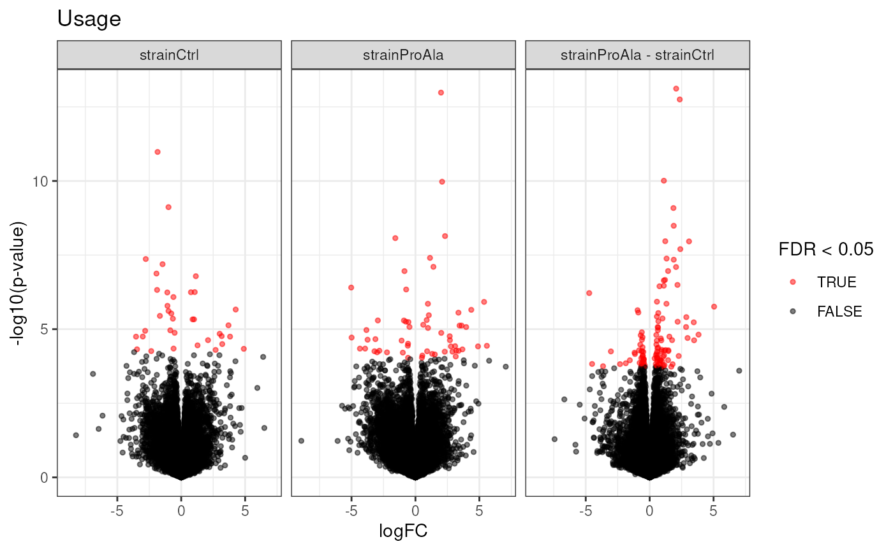
inferencesUsage |>
filter(adjPval < alpha) |>
mutate(DA = sign(logFC) |> as.factor() |> recode("-1"= "down","1" = "up")) |>
group_by(contrast, DA) |>
ggplot(aes(x = contrast)) +
geom_bar(aes(fill = factor(DA)),
colour = "black") +
theme_minimal() +
theme(axis.text.x = element_text(angle = 90))
We observe that the number of significant precursors reduced drastically.
Heatmaps
lapply(colnames(L),
function(contrast, se, alpha)
{
sig <- rowData(se)[[contrast]] |>
filter(adjPval < alpha) |>
rownames()
quants <- t(scale(t(assay(se[sig,]))))
colnames(quants) <- se$sampleId #specific to this dataset to get short colnames
rowclushlp <- quants
rowclushlp[is.na(rowclushlp)] <- min(quants,na.rm=TRUE) - 2
rowclus <- hclust(dist(rowclushlp))
annotations <- columnAnnotation(
group = se$strain
) #3.
set.seed(1234) ## annotation colours are randomly generated by default
return(
Heatmap(show_row_names = FALSE,
quants,
name = "log2 intensity",
top_annotation = annotations,
column_title = paste0(contrast, " = 0"),
cluster_rows = rowclus
)
)
},
se = getWithColData(qf, "precursorsPTM_usage"),
alpha = alpha)Detail plots
We can explore the data for a protein to validate the statistical inference results. For example, let’s explore the normalised precursor abundance, usages as well as the summarised protein intensities for the protein with the most significant log2 fold change.
## [1] "(UniMod:1)SDS(UniMod:21)EVNQEAKPEVK2"
inferencesUsage |>
filter(feature == target_feature)## logFC
## strainCtrl.(UniMod:1)SDS(UniMod:21)EVNQEAKPEVK2 -0.07112323
## strainProAla.(UniMod:1)SDS(UniMod:21)EVNQEAKPEVK2 2.00075827
## strainProAla - strainCtrl.(UniMod:1)SDS(UniMod:21)EVNQEAKPEVK2 2.07188151
## se
## strainCtrl.(UniMod:1)SDS(UniMod:21)EVNQEAKPEVK2 0.08446100
## strainProAla.(UniMod:1)SDS(UniMod:21)EVNQEAKPEVK2 0.08074697
## strainProAla - strainCtrl.(UniMod:1)SDS(UniMod:21)EVNQEAKPEVK2 0.08189908
## df
## strainCtrl.(UniMod:1)SDS(UniMod:21)EVNQEAKPEVK2 15.20163
## strainProAla.(UniMod:1)SDS(UniMod:21)EVNQEAKPEVK2 15.20163
## strainProAla - strainCtrl.(UniMod:1)SDS(UniMod:21)EVNQEAKPEVK2 15.20163
## t
## strainCtrl.(UniMod:1)SDS(UniMod:21)EVNQEAKPEVK2 -0.8420837
## strainProAla.(UniMod:1)SDS(UniMod:21)EVNQEAKPEVK2 24.7781228
## strainProAla - strainCtrl.(UniMod:1)SDS(UniMod:21)EVNQEAKPEVK2 25.2979833
## pval
## strainCtrl.(UniMod:1)SDS(UniMod:21)EVNQEAKPEVK2 4.127935e-01
## strainProAla.(UniMod:1)SDS(UniMod:21)EVNQEAKPEVK2 1.044776e-13
## strainProAla - strainCtrl.(UniMod:1)SDS(UniMod:21)EVNQEAKPEVK2 7.673615e-14
## adjPval
## strainCtrl.(UniMod:1)SDS(UniMod:21)EVNQEAKPEVK2 8.319430e-01
## strainProAla.(UniMod:1)SDS(UniMod:21)EVNQEAKPEVK2 3.234626e-09
## strainProAla - strainCtrl.(UniMod:1)SDS(UniMod:21)EVNQEAKPEVK2 2.361018e-09
## contrast
## strainCtrl.(UniMod:1)SDS(UniMod:21)EVNQEAKPEVK2 strainCtrl
## strainProAla.(UniMod:1)SDS(UniMod:21)EVNQEAKPEVK2 strainProAla
## strainProAla - strainCtrl.(UniMod:1)SDS(UniMod:21)EVNQEAKPEVK2 strainProAla - strainCtrl
## feature
## strainCtrl.(UniMod:1)SDS(UniMod:21)EVNQEAKPEVK2 (UniMod:1)SDS(UniMod:21)EVNQEAKPEVK2
## strainProAla.(UniMod:1)SDS(UniMod:21)EVNQEAKPEVK2 (UniMod:1)SDS(UniMod:21)EVNQEAKPEVK2
## strainProAla - strainCtrl.(UniMod:1)SDS(UniMod:21)EVNQEAKPEVK2 (UniMod:1)SDS(UniMod:21)EVNQEAKPEVK2We again make a similar plot as before.
ptm <- qf[target_feature, , c("precursorsPTM_norm", "precursorsPTM_usage")] |> #1
longForm(colvars = colnames(colData(qf)), rowvars = "Protein.Group") |> #2
data.frame()## Warning: 'experiments' dropped; see 'drops()'## harmonizing input:
## removing 108 sampleMap rows not in names(experiments)
## removing 18 colData rownames not in sampleMap 'primary'
protein <- qf[unique(ptm$Protein.Group), , c("proteins")] |> #1
longForm(colvars = colnames(colData(qf)), rowvars = "Protein.Group") |> #2
data.frame()## Warning: 'experiments' dropped; see 'drops()'## harmonizing input:
## removing 126 sampleMap rows not in names(experiments)
## removing 18 colData rownames not in sampleMap 'primary'
ptm_protein <- rbind(ptm, protein)
ylims <- ptm_protein |>
group_by(assay) |>
summarise(cent = mean(range(value,na.rm=TRUE)), ampl = diff(range(value,na.rm=TRUE))) |>
mutate(lower = cent - max(ampl)/2,
upper = cent + max(ampl)/2) |>
select(-c(cent, ampl))
outplot <- ptm_protein |>
ggplot() +
aes(x = colname,
y = value) +
geom_line(aes(group = rowname), linewidth = 0.1) +
geom_point(aes(colour = strain)) +
facet_wrap(~ assay, scales = "free") +
ggh4x::facetted_pos_scales(
y = list(
assay == ylims$assay[1] ~ scale_y_continuous(limits = unlist(ylims[1,c("lower","upper")])),
assay == ylims$assay[2] ~ scale_y_continuous(limits = unlist(ylims[2,c("lower","upper")])),
assay == ylims$assay[3] ~ scale_y_continuous(limits = unlist(ylims[3,c("lower","upper")]))
)
) +
labs(subtitle = target_feature) +
theme_minimal() +
theme(axis.text.x = element_blank())
print(outplot)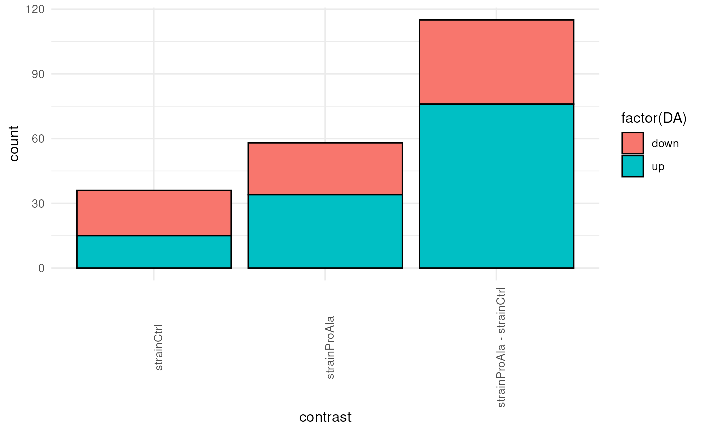
rbind(ptm, protein) %>%
{
ggplot(.) +
aes(x = strain,
y = value) +
geom_boxplot(aes(colour = strain)) +
facet_wrap(~ assay, scales = "free") +
geom_jitter(aes(shape = rowname)) +
scale_shape_manual(values = seq_len(dplyr::n_distinct(.$rowname))) +
ggtitle(target_feature) +
theme_minimal() +
theme(axis.text.x = element_blank()) +
guides(shape = "none")
}
We compare the intensities for the top 5 DA phospo-precursors for the first contrast to these of their corresponding protein in the non-enriched assay and to the usages.
contr = colnames(L)[1]
top5 <- inferencesPTM |>
filter(contrast == contr) |>
arrange(pval) |>
head(n = 5) |>
pull(feature)
for (feat in top5)
{
ptm_data <- qf[,,c("precursorsPTM_norm","precursorsPTM_usage")] |>
longForm(colvars = colnames(colData(qf)), rowvars = "Protein.Group") |>
data.frame() |>
filter(rowname==feat)
feature_protein <- ptm_data |>
pull("Protein.Group") |>
unique()
prot_data <- qf[,,"proteins"]|>
longForm(colvars = colnames(colData(qf)), rowvars = "Protein.Group") |>
data.frame() |>
filter(Protein.Group==feature_protein)
ptm_protein <- rbind(ptm_data, prot_data)
ylims <- ptm_protein |>
group_by(assay) |>
summarise(cent = mean(range(value,na.rm=TRUE)), ampl = diff(range(value,na.rm=TRUE))) |>
mutate(lower = cent - max(ampl)/2,
upper = cent + max(ampl)/2) |>
select(-c(cent, ampl))
comparison_plot <- ptm_protein |>
ggplot() +
aes(x = sampleId,
y = value) +
geom_line(aes(group = rowname), linewidth = 0.1) +
geom_point(aes(colour = strain)) +
facet_wrap(~ assay, scales = "free") +
labs(
title = paste0(feat," / ", feature_protein),
subtitle = paste("padj PTM =",
inferencesPTM |>
filter(feature == feat & contrast == contr) |>
pull(adjPval) |>
round(digits = 3),
"padj usage =",
inferencesUsage |>
filter(feature == feat & contrast == contr) |>
pull(adjPval) |>
round(digits = 3))
) +
theme_minimal() +
theme(axis.text.x = element_blank()) +
ggh4x::facetted_pos_scales(
y = list(
assay == ylims$assay[1] ~ scale_y_continuous(limits = unlist(ylims[1,c("lower","upper")])),
assay == ylims$assay[2] ~ scale_y_continuous(limits = unlist(ylims[2,c("lower","upper")])),
assay == ylims$assay[3] ~ scale_y_continuous(limits = unlist(ylims[3,c("lower","upper")]))
)
)
print(comparison_plot)
}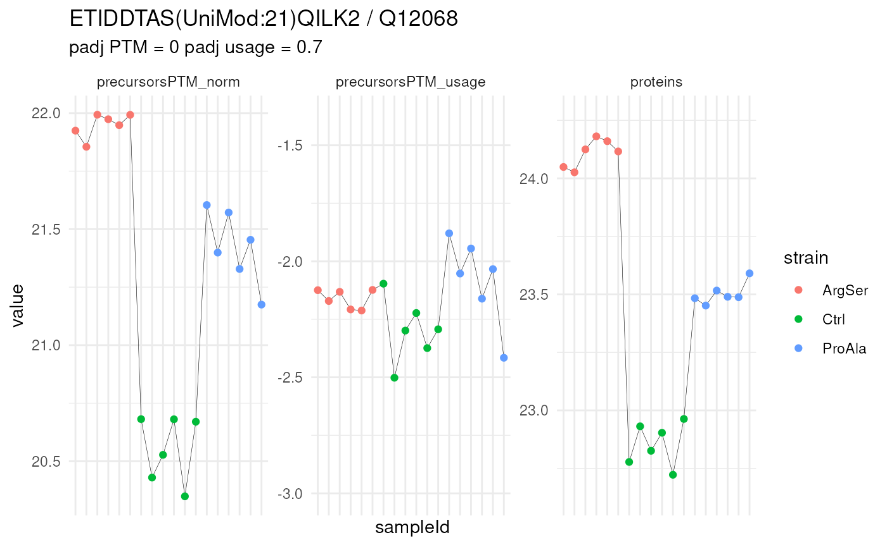

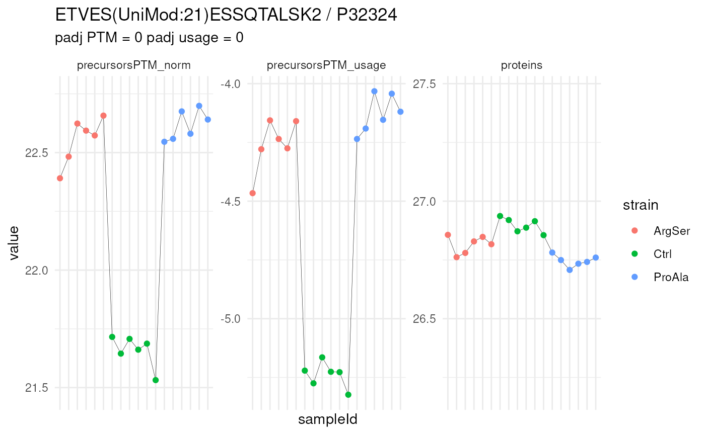

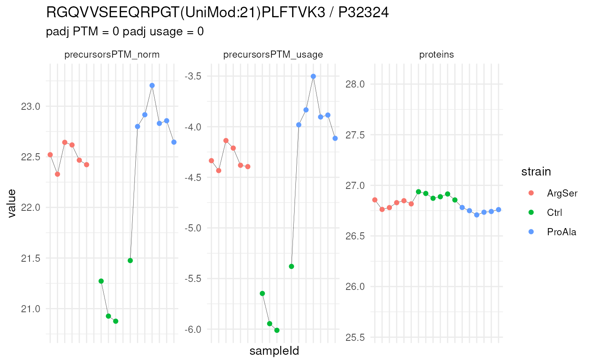
We compare the intensities for the top 5 DU phospo-precursors for the first contrast to these of their corresponding protein in the non-enriched assay and to their unadjusted abundances.
contr = colnames(L)[1]
top5 <- inferencesUsage |>
filter(contrast == contr) |>
arrange(pval) |>
head(n = 5) |>
pull(feature)
for (feat in top5)
{
ptm_data <- qf[,,c("precursorsPTM_norm","precursorsPTM_usage")] |>
longForm(colvars = colnames(colData(qf)), rowvars = "Protein.Group") |>
data.frame() |>
filter(rowname==feat)
feature_protein <- ptm_data |>
pull("Protein.Group") |>
unique()
prot_data <- qf[,,"proteins"]|>
longForm(colvars = colnames(colData(qf)), rowvars = "Protein.Group") |>
data.frame() |>
filter(Protein.Group==feature_protein)
ptm_protein <- rbind(ptm_data, prot_data)
ylims <- ptm_protein |>
group_by(assay) |>
summarise(cent = mean(range(value,na.rm=TRUE)), ampl = diff(range(value,na.rm=TRUE))) |>
mutate(lower = cent - max(ampl)/2,
upper = cent + max(ampl)/2) |>
select(-c(cent, ampl))
comparison_plot <- ptm_protein |>
ggplot() +
aes(x = sampleId,
y = value) +
geom_line(aes(group = rowname), linewidth = 0.1) +
geom_point(aes(colour = strain)) +
facet_wrap(~ assay, scales = "free") +
labs(
title = paste0(feat," / ", feature_protein),
subtitle = paste("padj PTM =",
inferencesPTM |>
filter(feature == feat & contrast == contr) |>
pull(adjPval) |>
round(digits = 3),
"padj usage =",
inferencesUsage |>
filter(feature == feat & contrast == contr) |>
pull(adjPval) |>
round(digits = 3))
) +
theme_minimal() +
theme(axis.text.x = element_blank()) +
ggh4x::facetted_pos_scales(
y = list(
assay == ylims$assay[1] ~ scale_y_continuous(limits = unlist(ylims[1,c("lower","upper")])),
assay == ylims$assay[2] ~ scale_y_continuous(limits = unlist(ylims[2,c("lower","upper")])),
assay == ylims$assay[3] ~ scale_y_continuous(limits = unlist(ylims[3,c("lower","upper")]))
)
)
print(comparison_plot)
}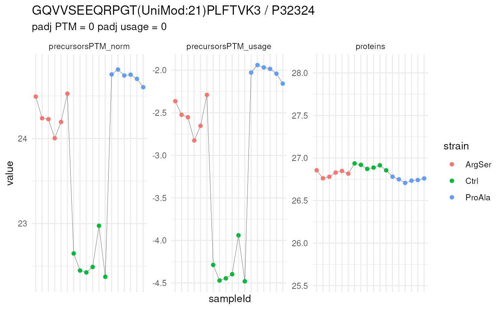

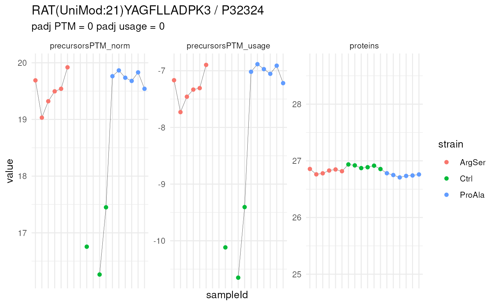

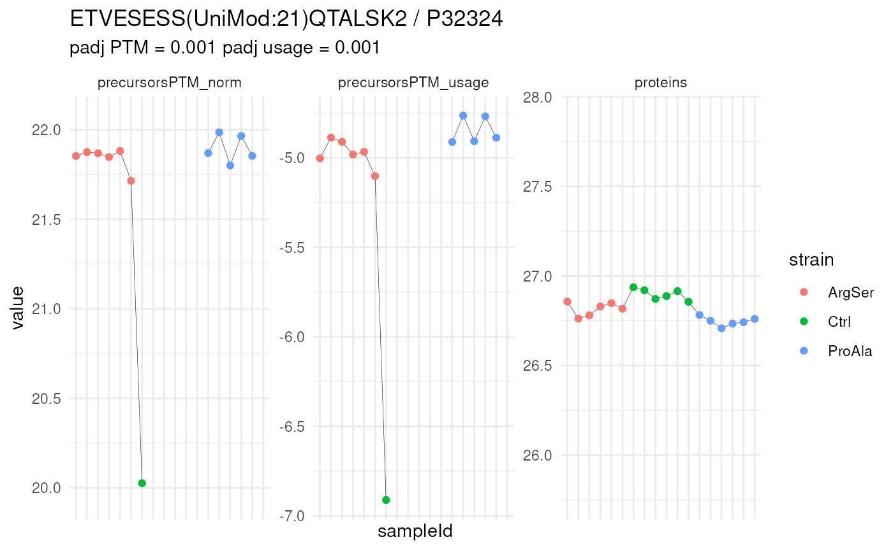
## used (Mb) gc trigger (Mb) max used (Mb)
## Ncells 12440917 664.5 22557664 1204.8 22557664 1204.8
## Vcells 40104624 306.0 105309341 803.5 262547462 2003.1## used (Mb) gc trigger (Mb) max used (Mb)
## Ncells 12440921 664.5 22557664 1204.8 22557664 1204.8
## Vcells 40104667 306.0 105309341 803.5 262547462 2003.1Differential usage analysis at the PTM level
Multiple precursors are carrying the same PTM (cover the PTM at a certain position in the protein). We can aggregate them together.
Data processing
The variable Protein.Sites in the DIA-NN parquet file contains information on the exact modified residue position in the full protein sequence.
We first will make a new assay with duplicates for the precursors that contain multiple phospho sites.
- We extract the usage assay
- We extract the row data with the original variables (drop msqrob2 colums)
- Add a new variable with the modification type (21 is phosho)
- Add a new variable with the location of the modification on the original protein
- replace the rowData of se
- Make vector of the row numbers with duplicates for the sequences containing multiple PTMs
- Make a corresponding vector with the positions of the individual PTM sites
- Make a corresponding vector with the modification type
- Extract the ids of rows that correspond to phospho sites
- Make a new summarised experiment with duplicate entries for precursors with multiple phospho sites.
- Add the position of the phospho site
- Add a variable with the Protein.Group name and the phospho site position attached to it.
- Make the rownames unique by appending the phospho site position to it.
- Add the assay to the QFeatures object.
se <- qf[["precursorsPTM_usage"]] #1.
rd <- rowData(se)[,names(rowData(qf[["precursorsPTM"]]))] |> ##2.
as.data.frame() |>
mutate(
mods = str_extract_all(Modified.Sequence,
"UniMod:[0-9]+") |>
lapply(FUN = gsub, pattern="UniMod:",replacement=""), ##3.
pos = str_extract(Protein.Sites,
"(?<=:)[^\\]]+") |>
strsplit(split = ",") |>
lapply(FUN=substr,start=2,stop=10000) |>
lapply(FUN=as.integer) ##4.
)
rowData(se) <- rd ##5.
ids <- rep(rd |>
nrow() |>
seq_len(),
rd |>
pull(pos) |>
sapply(FUN = length))##6.
pos <- unlist(rd$pos) ##7.
mod <- unlist(rd$mods) ##8.
phosIds <- ids[mod == "21"] ##9.
seDup <- se[phosIds,] ##10.
rowData(seDup)$pos <- pos[mod == "21"] ##11.
rowData(seDup)$Protein.Group.Mod <- paste(
rowData(seDup)$Protein.Group,
rowData(seDup)$pos, sep = "_") ##12.
rownames(seDup) <- paste(rownames(seDup), rowData(seDup)$pos, sep = "_") ##13.
qf <- addAssay(qf, seDup, "precursorsPTM_usage_unnested") ##14.We now aggregate the data of precursors that map to the same PTM position on a protein in one protein expression value.
qf <- aggregateFeatures(qf,
i = "precursorsPTM_usage_unnested",
fcol = "Protein.Group.Mod",
name = "ptm_usage",
fun = function(X, ...) iq::maxLFQ(X)$estimate
)## | | | 0% | |======================================================================| 100%## The following messages occurred during aggregation:##
## Your quantitative data contain missing values. Please read the relevant
## section(s) in the aggregateFeatures manual page regarding the effects
## of missing values on data aggregation.
##
## Occurred during the aggregation of set(s): precursorsWe assess the distribution of the PTM usages.
qf[, , "ptm_usage"] |> #1.
longForm(colvars = colnames(colData(qf))) |> #2.
data.frame() |>
filter(!is.na(value)) |>
ggplot() + #3.
aes(x = value,
colour = strain,
group = colname) +
geom_density() +
labs(subtitle = "Usage") +
theme_minimal()## harmonizing input:
## removing 162 sampleMap rows not in names(experiments)
## removing 18 colData rownames not in sampleMap 'primary'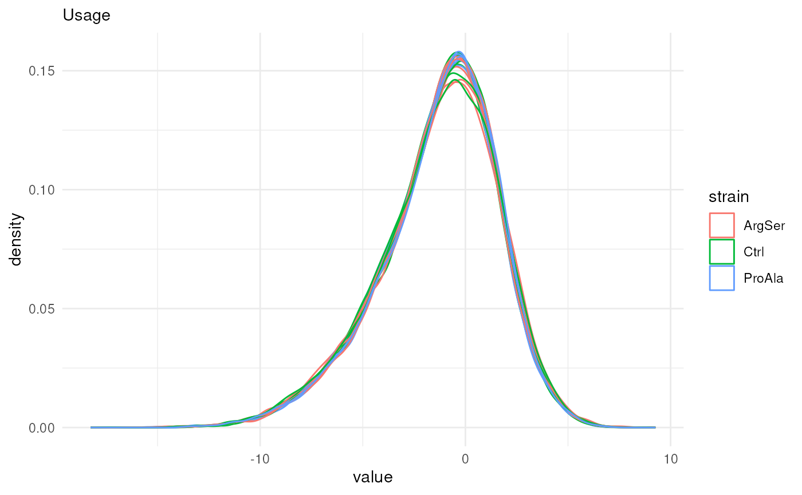
We remove temporarily objects
rm(se, seDup, mod, pos, ids, phosIds)## used (Mb) gc trigger (Mb) max used (Mb)
## Ncells 12624832 674.3 22557664 1204.8 22557664 1204.8
## Vcells 47380840 361.5 105309341 803.5 262547462 2003.1## used (Mb) gc trigger (Mb) max used (Mb)
## Ncells 12624836 674.3 22557664 1204.8 22557664 1204.8
## Vcells 47380883 361.5 105309341 803.5 262547462 2003.1Model estimation
Again we can estimate the same model but now for the usages.
qf <- msqrob(
qf,
i = "ptm_usage",
formula = model,
robust = TRUE)We enabled M-estimation (robust = TRUE) for improved
robustness against outliers.
## used (Mb) gc trigger (Mb) max used (Mb)
## Ncells 13058628 697.5 22557664 1204.8 22557664 1204.8
## Vcells 48633276 371.1 105309341 803.5 262547462 2003.1## used (Mb) gc trigger (Mb) max used (Mb)
## Ncells 13058635 697.5 22557664 1204.8 22557664 1204.8
## Vcells 48633324 371.1 105309341 803.5 262547462 2003.1Inference
Contrasts remain the same. We assess the contrast for each precursor.
qf <- hypothesisTest(qf, i = "ptm_usage", contrast = L)We extract the results table from the proteins
summarised experiment in the qf object.
inferencesPtmUsage <-
msqrobCollect(qf[["ptm_usage"]], L)## used (Mb) gc trigger (Mb) max used (Mb)
## Ncells 13121178 700.8 22557664 1204.8 22557664 1204.8
## Vcells 49928016 381.0 105309341 803.5 262547462 2003.1## used (Mb) gc trigger (Mb) max used (Mb)
## Ncells 13121182 700.8 22557664 1204.8 22557664 1204.8
## Vcells 49928059 381.0 105309341 803.5 262547462 2003.1Report results
We report the results using a results table, volcano plots and heatmaps.
Results table
for (j in colnames(L)) {
inference <- inferencesPtmUsage |>
dplyr::filter(adjPval < alpha & contrast == j)
cat("**Median - Contrast:**", j, "= 0 (", nrow(inference),
"significant proteins)\n\n")
cat('<div style="max-height:300px; overflow-y:auto;">')
print(
kable(
inference |>
dplyr::arrange(pval) |>
dplyr::relocate(feature),
row.names = FALSE
)
)
cat('</div>')
cat("\n\n\n---\n\n")
}Median - Contrast: strainCtrl = 0 ( 33 significant proteins)
| feature | logFC | se | df | t | pval | adjPval | contrast |
|---|---|---|---|---|---|---|---|
| P32324_763 | -1.6927585 | 0.0917931 | 16.250700 | -18.441012 | 0.00e+00 | 0.0000001 | strainCtrl |
| P32324_569 | -0.9952475 | 0.0789379 | 16.400086 | -12.607977 | 0.00e+00 | 0.0000075 | strainCtrl |
| P32324_713 | -2.6258869 | 0.2112654 | 13.381730 | -12.429329 | 0.00e+00 | 0.0000674 | strainCtrl |
| P32324_572 | -1.9360818 | 0.1633248 | 11.112322 | -11.854185 | 1.00e-07 | 0.0005111 | strainCtrl |
| P49167_50 | 1.1442699 | 0.1344706 | 17.146431 | 8.509444 | 1.00e-07 | 0.0005111 | strainCtrl |
| P32599_88 | -0.8161790 | 0.0865461 | 14.414079 | -9.430565 | 2.00e-07 | 0.0005111 | strainCtrl |
| P32324_557 | -1.8883643 | 0.2272816 | 15.593306 | -8.308479 | 4.00e-07 | 0.0011862 | strainCtrl |
| P49167_49 | 1.0582663 | 0.1295957 | 15.598620 | 8.165904 | 5.00e-07 | 0.0012399 | strainCtrl |
| P38968_396 | 0.7593899 | 0.0951348 | 16.096483 | 7.982251 | 5.00e-07 | 0.0012399 | strainCtrl |
| P25294_14 | -1.0772610 | 0.1434632 | 15.585791 | -7.508973 | 1.50e-06 | 0.0029640 | strainCtrl |
| P38713_440 | 4.2615011 | 0.2882973 | 6.977035 | 14.781619 | 1.60e-06 | 0.0029640 | strainCtrl |
| P24783_243 | -0.9925106 | 0.1375819 | 15.798585 | -7.213964 | 2.20e-06 | 0.0037743 | strainCtrl |
| P16474_461 | 1.0023303 | 0.1481254 | 16.197972 | 6.766769 | 4.20e-06 | 0.0062721 | strainCtrl |
| P38181_43 | 0.8900045 | 0.1333837 | 16.695283 | 6.672514 | 4.30e-06 | 0.0062721 | strainCtrl |
| P15274_94 | -3.4608404 | 0.4352252 | 11.558673 | -7.951838 | 5.10e-06 | 0.0068885 | strainCtrl |
| P35180_87 | -0.5825995 | 0.0960762 | 17.036076 | -6.063931 | 1.25e-05 | 0.0143803 | strainCtrl |
| Q12191_286 | 3.1647276 | 0.2426027 | 5.990144 | 13.044896 | 1.27e-05 | 0.0143803 | strainCtrl |
| P47129_206 | 3.8203404 | 0.3046938 | 6.146431 | 12.538293 | 1.31e-05 | 0.0143803 | strainCtrl |
| P35180_172 | -0.5139705 | 0.0852123 | 17.018350 | -6.031648 | 1.34e-05 | 0.0143803 | strainCtrl |
| P47135_123 | 1.4996611 | 0.2339126 | 13.930864 | 6.411201 | 1.66e-05 | 0.0169330 | strainCtrl |
| Q01560_224 | -0.6061690 | 0.1031075 | 16.917066 | -5.878999 | 1.86e-05 | 0.0180276 | strainCtrl |
| P00815_514 | -0.7889347 | 0.1319660 | 15.185227 | -5.978316 | 2.40e-05 | 0.0222512 | strainCtrl |
| Q12271_991 | 3.2079677 | 0.4632099 | 10.848294 | 6.925516 | 2.69e-05 | 0.0238021 | strainCtrl |
| Q04779_68 | -0.5980074 | 0.1087306 | 16.457283 | -5.499901 | 4.38e-05 | 0.0372015 | strainCtrl |
| P32607_2 | -3.6867193 | 0.4140249 | 6.979826 | -8.904583 | 4.65e-05 | 0.0379041 | strainCtrl |
| P05749_55 | 6.4094068 | 0.4779809 | 4.738617 | 13.409337 | 5.98e-05 | 0.0423395 | strainCtrl |
| P05749_57 | 6.4094068 | 0.4779809 | 4.738617 | 13.409337 | 5.98e-05 | 0.0423395 | strainCtrl |
| P05749_61 | 6.4094068 | 0.4779809 | 4.738617 | 13.409337 | 5.98e-05 | 0.0423395 | strainCtrl |
| Q12363_436 | -1.7348244 | 0.3057279 | 13.821177 | -5.674407 | 6.03e-05 | 0.0423395 | strainCtrl |
| P42945_841 | -1.4844036 | 0.2765285 | 15.513844 | -5.367995 | 6.98e-05 | 0.0459683 | strainCtrl |
| P53303_269 | 0.9962285 | 0.1840269 | 15.115075 | 5.413495 | 6.99e-05 | 0.0459683 | strainCtrl |
| P35732_273 | -0.7536289 | 0.1453613 | 17.112317 | -5.184522 | 7.31e-05 | 0.0465306 | strainCtrl |
| P38013_171 | 1.4663620 | 0.2854371 | 17.146431 | 5.137252 | 8.02e-05 | 0.0494850 | strainCtrl |
Median - Contrast: strainProAla = 0 ( 37 significant proteins)
| feature | logFC | se | df | t | pval | adjPval | contrast |
|---|---|---|---|---|---|---|---|
| P25294_14 | -1.5736386 | 0.1402672 | 15.585791 | -11.218866 | 0.00e+00 | 0.0001463 | strainProAla |
| P16474_461 | 1.4055365 | 0.1513660 | 16.197972 | 9.285685 | 1.00e-07 | 0.0006994 | strainProAla |
| Q05050_393 | -5.0261755 | 0.3804217 | 9.116969 | -13.212116 | 3.00e-07 | 0.0020222 | strainProAla |
| P32599_88 | -0.6906942 | 0.0837567 | 14.414079 | -8.246440 | 8.00e-07 | 0.0033014 | strainProAla |
| Q07950_77 | 5.3704830 | 0.2695045 | 6.146431 | 19.927246 | 8.00e-07 | 0.0033014 | strainProAla |
| P49167_50 | 0.9759734 | 0.1344706 | 17.146431 | 7.257896 | 1.30e-06 | 0.0043174 | strainProAla |
| P38713_440 | 4.3675411 | 0.2965045 | 6.977035 | 14.730099 | 1.60e-06 | 0.0047686 | strainProAla |
| Q12117_289 | -0.6514795 | 0.0915145 | 15.682227 | -7.118864 | 2.70e-06 | 0.0069192 | strainProAla |
| Q03533_3 | 1.0472439 | 0.1501312 | 16.065966 | 6.975525 | 3.10e-06 | 0.0069192 | strainProAla |
| Q06010_439 | 1.1230659 | 0.1615640 | 15.126717 | 6.951214 | 4.40e-06 | 0.0084473 | strainProAla |
| P49167_49 | 0.8802596 | 0.1287233 | 15.598620 | 6.838384 | 4.60e-06 | 0.0084473 | strainProAla |
| P47129_206 | 3.9673353 | 0.2781461 | 6.146431 | 14.263493 | 6.10e-06 | 0.0103325 | strainProAla |
| P38968_396 | 0.6109495 | 0.0938583 | 16.096483 | 6.509276 | 7.00e-06 | 0.0109543 | strainProAla |
| P15274_94 | -2.7936460 | 0.3728751 | 11.558673 | -7.492177 | 9.10e-06 | 0.0132387 | strainProAla |
| P27466_343 | -4.9926570 | 0.6628412 | 10.413359 | -7.532207 | 1.58e-05 | 0.0214527 | strainProAla |
| P32607_2 | -3.7429438 | 0.3611440 | 6.979826 | -10.364132 | 1.72e-05 | 0.0219390 | strainProAla |
| P32599_111 | -1.0815174 | 0.1725991 | 13.818023 | -6.266065 | 2.20e-05 | 0.0262916 | strainProAla |
| P24000_7 | -0.8164666 | 0.1373779 | 15.547322 | -5.943217 | 2.32e-05 | 0.0262916 | strainProAla |
| P38928_651 | -4.3428436 | 0.4052367 | 6.140624 | -10.716808 | 3.34e-05 | 0.0355112 | strainProAla |
| P17106_67 | -0.5976299 | 0.1056597 | 16.053659 | -5.656175 | 3.53e-05 | 0.0355112 | strainProAla |
| Q12191_286 | 3.6741388 | 0.3384731 | 5.990144 | 10.855040 | 3.66e-05 | 0.0355112 | strainProAla |
| Q12373_353 | -0.5652907 | 0.1015264 | 16.330996 | -5.567920 | 3.94e-05 | 0.0364570 | strainProAla |
| Q12306_2 | 0.4616846 | 0.0849830 | 17.031675 | 5.432670 | 4.45e-05 | 0.0394037 | strainProAla |
| P16862_163 | 0.5191360 | 0.0959890 | 16.884814 | 5.408285 | 4.82e-05 | 0.0394110 | strainProAla |
| Q06836_388 | -2.2257780 | 0.2528713 | 6.978052 | -8.802018 | 5.02e-05 | 0.0394110 | strainProAla |
| Q12149_640 | 2.2915891 | 0.3830766 | 12.709696 | 5.982065 | 5.03e-05 | 0.0394110 | strainProAla |
| P15992_208 | -1.0687461 | 0.1913388 | 14.744397 | -5.585622 | 5.54e-05 | 0.0418253 | strainProAla |
| Q06108_969 | -2.6455100 | 0.4690092 | 13.912381 | -5.640636 | 6.24e-05 | 0.0440817 | strainProAla |
| P38853_537 | 3.1528234 | 0.2663120 | 5.146431 | 11.838833 | 6.28e-05 | 0.0440817 | strainProAla |
| Q12019_4443 | -0.6147425 | 0.1163580 | 15.850955 | -5.283199 | 7.66e-05 | 0.0487954 | strainProAla |
| P32324_763 | 0.4770509 | 0.0913882 | 16.250700 | 5.220048 | 8.01e-05 | 0.0487954 | strainProAla |
| P05749_55 | 5.7636221 | 0.4594214 | 4.738617 | 12.545392 | 8.14e-05 | 0.0487954 | strainProAla |
| P05749_57 | 5.7636221 | 0.4594214 | 4.738617 | 12.545392 | 8.14e-05 | 0.0487954 | strainProAla |
| P05749_61 | 5.7636221 | 0.4594214 | 4.738617 | 12.545392 | 8.14e-05 | 0.0487954 | strainProAla |
| P25491_58 | -1.9684991 | 0.2375495 | 6.791442 | -8.286690 | 8.60e-05 | 0.0489042 | strainProAla |
| P32774_102 | -0.6146229 | 0.1203290 | 17.068305 | -5.107855 | 8.64e-05 | 0.0489042 | strainProAla |
| P10591_36 | 0.5073982 | 0.0991781 | 16.726141 | 5.116031 | 9.04e-05 | 0.0497717 | strainProAla |
Median - Contrast: strainProAla - strainCtrl = 0 ( 108 significant proteins)
| feature | logFC | se | df | t | pval | adjPval | contrast |
|---|---|---|---|---|---|---|---|
| P32324_763 | 2.1698095 | 0.0933511 | 16.250700 | 23.243535 | 0.0000000 | 0.0000000 | strainProAla - strainCtrl |
| P32324_569 | 1.1121529 | 0.0768953 | 16.400086 | 14.463213 | 0.0000000 | 0.0000009 | strainProAla - strainCtrl |
| P32324_713 | 3.0035670 | 0.2097059 | 13.381730 | 14.322762 | 0.0000000 | 0.0000114 | strainProAla - strainCtrl |
| P16862_163 | 0.9615896 | 0.0949133 | 16.884814 | 10.131240 | 0.0000000 | 0.0000666 | strainProAla - strainCtrl |
| P32324_557 | 2.3977791 | 0.2269496 | 15.593306 | 10.565250 | 0.0000000 | 0.0000666 | strainProAla - strainCtrl |
| P00815_514 | 1.3059254 | 0.1351987 | 15.185227 | 9.659304 | 0.0000001 | 0.0002063 | strainProAla - strainCtrl |
| P32324_572 | 2.0626558 | 0.1655739 | 11.112322 | 12.457613 | 0.0000001 | 0.0002063 | strainProAla - strainCtrl |
| Q03533_3 | 1.4414307 | 0.1581598 | 16.065966 | 9.113763 | 0.0000001 | 0.0002406 | strainProAla - strainCtrl |
| P24783_243 | 1.2009457 | 0.1375819 | 15.798585 | 8.728953 | 0.0000002 | 0.0004151 | strainProAla - strainCtrl |
| Q01662_95 | 1.1063106 | 0.1279841 | 15.952106 | 8.644125 | 0.0000002 | 0.0004151 | strainProAla - strainCtrl |
| Q05050_393 | -4.7276674 | 0.3763197 | 9.116969 | -12.562901 | 0.0000005 | 0.0008496 | strainProAla - strainCtrl |
| Q08979_610 | 0.9214698 | 0.1138236 | 15.372814 | 8.095593 | 0.0000006 | 0.0010596 | strainProAla - strainCtrl |
| P16862_167 | 0.6303716 | 0.0800056 | 15.484083 | 7.879090 | 0.0000008 | 0.0013101 | strainProAla - strainCtrl |
| Q07950_77 | 5.0425550 | 0.2695045 | 6.146431 | 18.710465 | 0.0000012 | 0.0017178 | strainProAla - strainCtrl |
| P22203_3 | 0.7412991 | 0.1008642 | 16.439922 | 7.349476 | 0.0000014 | 0.0018776 | strainProAla - strainCtrl |
| P47035_679 | -1.0045670 | 0.1325666 | 14.591666 | -7.577830 | 0.0000020 | 0.0023655 | strainProAla - strainCtrl |
| Q06010_439 | 1.1862477 | 0.1601743 | 15.126717 | 7.405979 | 0.0000021 | 0.0023655 | strainProAla - strainCtrl |
| P38181_43 | -0.9456091 | 0.1338371 | 16.695283 | -7.065372 | 0.0000021 | 0.0023655 | strainProAla - strainCtrl |
| P22203_2 | 0.8174736 | 0.1193296 | 16.373426 | 6.850551 | 0.0000034 | 0.0036713 | strainProAla - strainCtrl |
| P31385_82 | 0.6460889 | 0.0935269 | 15.915680 | 6.908056 | 0.0000036 | 0.0036713 | strainProAla - strainCtrl |
| P36123_867 | 0.5656277 | 0.0833656 | 16.429972 | 6.784908 | 0.0000038 | 0.0036764 | strainProAla - strainCtrl |
| Q12363_436 | 2.1895001 | 0.3037274 | 13.821177 | 7.208767 | 0.0000048 | 0.0043791 | strainProAla - strainCtrl |
| P40066_81 | 0.9380922 | 0.1391068 | 15.736327 | 6.743685 | 0.0000051 | 0.0043791 | strainProAla - strainCtrl |
| P35180_87 | 0.6234918 | 0.0956293 | 17.036076 | 6.519883 | 0.0000052 | 0.0043791 | strainProAla - strainCtrl |
| P32644_212 | 0.6529945 | 0.0959738 | 13.964949 | 6.803884 | 0.0000087 | 0.0070145 | strainProAla - strainCtrl |
| P47035_676 | -0.7641278 | 0.1193511 | 15.405181 | -6.402351 | 0.0000105 | 0.0081663 | strainProAla - strainCtrl |
| P47035_385 | -0.8821967 | 0.1456136 | 15.688410 | -6.058476 | 0.0000181 | 0.0132100 | strainProAla - strainCtrl |
| Q12363_98 | 0.5759240 | 0.0950597 | 15.646656 | 6.058548 | 0.0000183 | 0.0132100 | strainProAla - strainCtrl |
| P23201_1087 | -0.5687071 | 0.0947155 | 15.727783 | -6.004373 | 0.0000198 | 0.0137989 | strainProAla - strainCtrl |
| Q12363_200 | 0.5599062 | 0.0977837 | 17.139795 | 5.725965 | 0.0000240 | 0.0161803 | strainProAla - strainCtrl |
| Q08972_110 | 0.6650956 | 0.1157119 | 16.371625 | 5.747861 | 0.0000274 | 0.0179040 | strainProAla - strainCtrl |
| P19097_1872 | 1.3107861 | 0.2152537 | 13.848551 | 6.089495 | 0.0000293 | 0.0185284 | strainProAla - strainCtrl |
| Q02455_1710 | -0.6915129 | 0.1178104 | 14.643173 | -5.869708 | 0.0000340 | 0.0208601 | strainProAla - strainCtrl |
| P17123_118 | 0.5783995 | 0.1030330 | 16.167609 | 5.613730 | 0.0000373 | 0.0222532 | strainProAla - strainCtrl |
| Q12495_294 | 0.6639109 | 0.1188671 | 16.104689 | 5.585322 | 0.0000401 | 0.0223597 | strainProAla - strainCtrl |
| P32389_528 | 0.6092121 | 0.1109659 | 16.679294 | 5.490084 | 0.0000426 | 0.0223597 | strainProAla - strainCtrl |
| P47035_1017 | -0.7604924 | 0.1318212 | 14.408249 | -5.769122 | 0.0000434 | 0.0223597 | strainProAla - strainCtrl |
| P07149_971 | 1.2434008 | 0.2050281 | 12.637535 | 6.064540 | 0.0000452 | 0.0223597 | strainProAla - strainCtrl |
| Q12680_2070 | 0.9540220 | 0.1656330 | 14.288879 | 5.759855 | 0.0000456 | 0.0223597 | strainProAla - strainCtrl |
| Q04336_956 | 1.4592232 | 0.2410134 | 12.655594 | 6.054531 | 0.0000456 | 0.0223597 | strainProAla - strainCtrl |
| P53946_9 | -0.7002631 | 0.1296835 | 17.146431 | -5.399786 | 0.0000465 | 0.0223597 | strainProAla - strainCtrl |
| P49687_431 | -0.4743980 | 0.0871979 | 16.590899 | -5.440475 | 0.0000480 | 0.0223597 | strainProAla - strainCtrl |
| Q12271_991 | -3.0321531 | 0.4673870 | 10.848294 | -6.487457 | 0.0000481 | 0.0223597 | strainProAla - strainCtrl |
| P09436_406 | 1.1425875 | 0.2027569 | 14.907084 | 5.635259 | 0.0000486 | 0.0223597 | strainProAla - strainCtrl |
| P53114_268 | 1.2906180 | 0.2301329 | 14.930319 | 5.608142 | 0.0000508 | 0.0228545 | strainProAla - strainCtrl |
| P47035_357 | -0.6430105 | 0.1203089 | 17.094100 | -5.344663 | 0.0000526 | 0.0231850 | strainProAla - strainCtrl |
| Q12280_1347 | -1.1468873 | 0.2094536 | 15.066959 | -5.475615 | 0.0000629 | 0.0271154 | strainProAla - strainCtrl |
| Q12363_193 | 1.1255279 | 0.2099661 | 15.554989 | 5.360523 | 0.0000701 | 0.0280723 | strainProAla - strainCtrl |
| P32468_326 | -0.4473303 | 0.0860681 | 17.146431 | -5.197401 | 0.0000707 | 0.0280723 | strainProAla - strainCtrl |
| Q12306_2 | 0.4446711 | 0.0853963 | 17.031675 | 5.207150 | 0.0000708 | 0.0280723 | strainProAla - strainCtrl |
| P38631_1178 | 0.7910246 | 0.1501937 | 16.345442 | 5.266696 | 0.0000716 | 0.0280723 | strainProAla - strainCtrl |
| P06634_263 | 0.6400190 | 0.1210541 | 16.110071 | 5.287050 | 0.0000721 | 0.0280723 | strainProAla - strainCtrl |
| P53236_607 | 0.4916219 | 0.0947963 | 16.969163 | 5.186087 | 0.0000748 | 0.0283651 | strainProAla - strainCtrl |
| P03871_264 | 1.0562360 | 0.1785411 | 11.806596 | 5.915926 | 0.0000756 | 0.0283651 | strainProAla - strainCtrl |
| P25366_291 | 0.5781662 | 0.1091327 | 15.051717 | 5.297824 | 0.0000884 | 0.0320105 | strainProAla - strainCtrl |
| P10961_458 | 0.5902190 | 0.1149506 | 16.636735 | 5.134546 | 0.0000885 | 0.0320105 | strainProAla - strainCtrl |
| P47035_803 | -1.5513768 | 0.2625980 | 11.083636 | -5.907801 | 0.0000989 | 0.0339954 | strainProAla - strainCtrl |
| P38213_323 | 0.5894801 | 0.1157870 | 16.445349 | 5.091073 | 0.0001002 | 0.0339954 | strainProAla - strainCtrl |
| Q08977_470 | 0.8466997 | 0.1621370 | 15.008257 | 5.222125 | 0.0001031 | 0.0339954 | strainProAla - strainCtrl |
| P36166_330 | -0.8792587 | 0.1696024 | 15.322922 | -5.184236 | 0.0001038 | 0.0339954 | strainProAla - strainCtrl |
| P05694_706 | 0.8532128 | 0.1684630 | 16.535637 | 5.064691 | 0.0001040 | 0.0339954 | strainProAla - strainCtrl |
| P53303_23 | -0.5612435 | 0.1119357 | 17.110816 | -5.013981 | 0.0001044 | 0.0339954 | strainProAla - strainCtrl |
| P35177_1293 | -0.4697870 | 0.0913546 | 15.576704 | -5.142455 | 0.0001069 | 0.0339954 | strainProAla - strainCtrl |
| P17123_125 | 0.5839602 | 0.1143861 | 15.896178 | 5.105167 | 0.0001081 | 0.0339954 | strainProAla - strainCtrl |
| Q06685_430 | 0.7902940 | 0.1482397 | 13.882608 | 5.331192 | 0.0001091 | 0.0339954 | strainProAla - strainCtrl |
| P17106_19 | -0.5663603 | 0.1133371 | 16.723109 | -4.997131 | 0.0001156 | 0.0344404 | strainProAla - strainCtrl |
| P19097_1479 | 1.2304170 | 0.2472816 | 16.886378 | 4.975773 | 0.0001175 | 0.0344404 | strainProAla - strainCtrl |
| P38630_61 | -1.1790944 | 0.1870369 | 9.373277 | -6.304074 | 0.0001176 | 0.0344404 | strainProAla - strainCtrl |
| Q06836_388 | -1.8671502 | 0.2430418 | 6.978052 | -7.682425 | 0.0001199 | 0.0344404 | strainProAla - strainCtrl |
| P24276_578 | 0.6006073 | 0.1209989 | 16.858120 | 4.963740 | 0.0001211 | 0.0344404 | strainProAla - strainCtrl |
| P25366_290 | 0.8025664 | 0.1588462 | 15.823908 | 5.052474 | 0.0001217 | 0.0344404 | strainProAla - strainCtrl |
| P17076_22 | -2.3177156 | 0.2707529 | 6.146431 | -8.560260 | 0.0001224 | 0.0344404 | strainProAla - strainCtrl |
| P47035_1066 | -0.5307200 | 0.1073855 | 16.859620 | -4.942196 | 0.0001266 | 0.0351450 | strainProAla - strainCtrl |
| Q12158_349 | -0.6160504 | 0.1254723 | 16.967421 | -4.909852 | 0.0001331 | 0.0364373 | strainProAla - strainCtrl |
| P07259_1085 | 0.7514516 | 0.1404961 | 12.782418 | 5.348559 | 0.0001402 | 0.0378672 | strainProAla - strainCtrl |
| P38631_1185 | 0.5208195 | 0.1060385 | 16.503785 | 4.911609 | 0.0001433 | 0.0382120 | strainProAla - strainCtrl |
| P09733_274 | 1.1620088 | 0.2222959 | 13.397035 | 5.227305 | 0.0001479 | 0.0389008 | strainProAla - strainCtrl |
| P47035_1032 | -0.4107450 | 0.0847307 | 17.043259 | -4.847655 | 0.0001499 | 0.0389220 | strainProAla - strainCtrl |
| P50276_42 | 1.6876535 | 0.2861599 | 9.857570 | 5.897588 | 0.0001604 | 0.0406028 | strainProAla - strainCtrl |
| P39009_139 | 0.5810017 | 0.1209785 | 17.146431 | 4.802521 | 0.0001622 | 0.0406028 | strainProAla - strainCtrl |
| P23201_961 | -0.4649970 | 0.0926319 | 14.687024 | -5.019837 | 0.0001623 | 0.0406028 | strainProAla - strainCtrl |
| P11633_53 | -0.4775492 | 0.0974667 | 15.768172 | -4.899614 | 0.0001671 | 0.0407769 | strainProAla - strainCtrl |
| P10591_35 | 0.5789923 | 0.1116077 | 13.160684 | 5.187747 | 0.0001680 | 0.0407769 | strainProAla - strainCtrl |
| P05750_44 | 1.0805705 | 0.2107311 | 13.581041 | 5.127723 | 0.0001691 | 0.0407769 | strainProAla - strainCtrl |
| Q00684_429 | -0.3794305 | 0.0778497 | 15.836891 | -4.873887 | 0.0001738 | 0.0414284 | strainProAla - strainCtrl |
| P17649_7 | 1.7103359 | 0.3460379 | 14.942645 | 4.942626 | 0.0001790 | 0.0418946 | strainProAla - strainCtrl |
| P12754_131 | 0.4595307 | 0.0957374 | 16.529099 | 4.799909 | 0.0001799 | 0.0418946 | strainProAla - strainCtrl |
| P25357_416 | 0.9037854 | 0.1858181 | 15.618381 | 4.863817 | 0.0001844 | 0.0419063 | strainProAla - strainCtrl |
| Q12159_8 | -0.4493205 | 0.0913213 | 14.976268 | -4.920215 | 0.0001858 | 0.0419063 | strainProAla - strainCtrl |
| P33314_1066 | -0.4485452 | 0.0943069 | 16.890282 | -4.756229 | 0.0001862 | 0.0419063 | strainProAla - strainCtrl |
| P00815_524 | 0.4530860 | 0.0953425 | 16.459300 | 4.752194 | 0.0002009 | 0.0437364 | strainProAla - strainCtrl |
| P25297_15 | 2.5289533 | 0.3954244 | 8.076172 | 6.395542 | 0.0002018 | 0.0437364 | strainProAla - strainCtrl |
| P41318_106 | 0.9158580 | 0.1874916 | 14.884616 | 4.884794 | 0.0002025 | 0.0437364 | strainProAla - strainCtrl |
| P25558_1350 | -0.3670884 | 0.0777594 | 16.814965 | -4.720824 | 0.0002029 | 0.0437364 | strainProAla - strainCtrl |
| Q02455_774 | -0.5506372 | 0.1129022 | 14.741759 | -4.877117 | 0.0002112 | 0.0444822 | strainProAla - strainCtrl |
| P35201_134 | -0.7098323 | 0.1506181 | 16.648611 | -4.712797 | 0.0002117 | 0.0444822 | strainProAla - strainCtrl |
| Q12176_818 | -0.5971696 | 0.1271016 | 16.752419 | -4.698366 | 0.0002148 | 0.0444822 | strainProAla - strainCtrl |
| Q01217_529 | 0.5343197 | 0.1092066 | 14.456267 | 4.892740 | 0.0002167 | 0.0444822 | strainProAla - strainCtrl |
| Q03780_390 | -0.5776465 | 0.1222648 | 16.324823 | -4.724551 | 0.0002174 | 0.0444822 | strainProAla - strainCtrl |
| P08153_278 | 0.6951872 | 0.1379839 | 12.794210 | 5.038178 | 0.0002385 | 0.0481018 | strainProAla - strainCtrl |
| Q03361_726 | -0.7526987 | 0.1618762 | 16.646419 | -4.649840 | 0.0002417 | 0.0481018 | strainProAla - strainCtrl |
| P27466_343 | -4.0168004 | 0.7366109 | 10.413359 | -5.453083 | 0.0002425 | 0.0481018 | strainProAla - strainCtrl |
| P32500_412 | -0.4932956 | 0.1066440 | 16.913539 | -4.625630 | 0.0002446 | 0.0481018 | strainProAla - strainCtrl |
| P47116_587 | 0.3771683 | 0.0817350 | 16.863750 | 4.614524 | 0.0002522 | 0.0491092 | strainProAla - strainCtrl |
| P02994_240 | 0.4713281 | 0.1011285 | 16.161567 | 4.660685 | 0.0002545 | 0.0491092 | strainProAla - strainCtrl |
| P38850_699 | -0.7764632 | 0.1673903 | 16.231325 | -4.638638 | 0.0002635 | 0.0495121 | strainProAla - strainCtrl |
| P38720_163 | 0.9859957 | 0.2075622 | 14.871771 | 4.750362 | 0.0002638 | 0.0495121 | strainProAla - strainCtrl |
| P33750_161 | 0.5304439 | 0.1090147 | 13.729791 | 4.865800 | 0.0002639 | 0.0495121 | strainProAla - strainCtrl |
Volcanoplots
plotVolcano(inferencesPtmUsage) +
facet_wrap(~contrast) +
labs(title = "PTM Usage")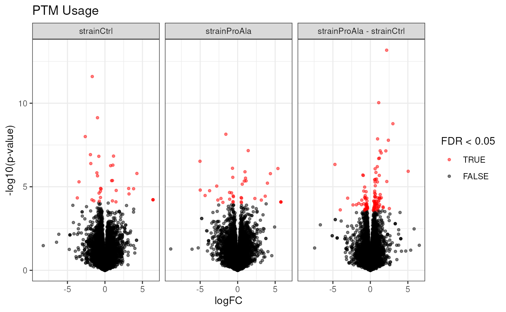
inferencesPtmUsage |>
filter(adjPval < alpha) |>
mutate(DA = sign(logFC) |> as.factor() |> recode("-1"= "down","1" = "up")) |>
group_by(contrast, DA) |>
ggplot(aes(x = contrast)) +
geom_bar(aes(fill = factor(DA)),
colour = "black") +
theme_minimal() +
theme(axis.text.x = element_text(angle = 90))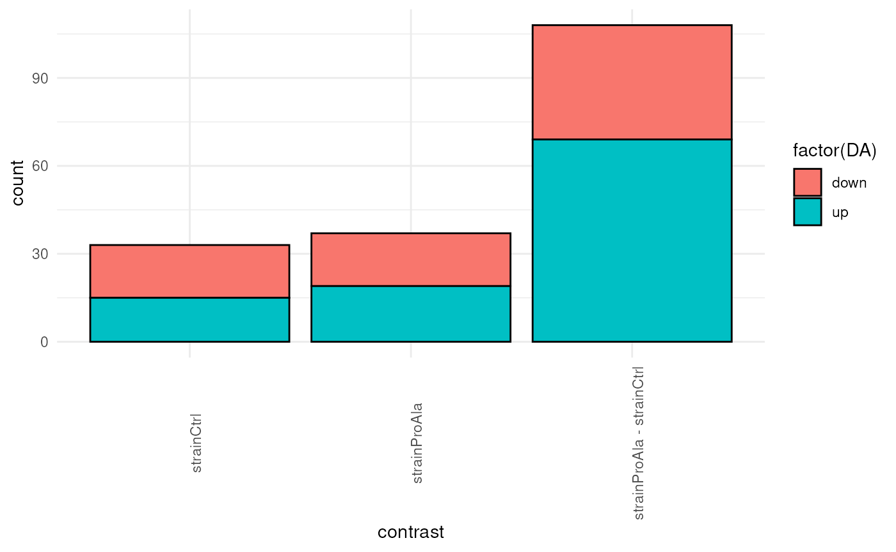
Heatmaps
lapply(colnames(L),
function(contrast, se, alpha)
{
sig <- rowData(se)[[contrast]] |>
filter(adjPval < alpha) |>
rownames()
quants <- t(scale(t(assay(se[sig,]))))
colnames(quants) <- se$sampleId #specific to this dataset to get short colnames
rowclushlp <- quants
rowclushlp[is.na(rowclushlp)] <- min(quants,na.rm=TRUE) - 2
rowclus <- hclust(dist(rowclushlp))
annotations <- columnAnnotation(
group = se$strain
) #3.
set.seed(1234) ## annotation colours are randomly generated by default
return(
Heatmap(show_row_names = FALSE,
quants,
name = "log2 intensity",
top_annotation = annotations,
column_title = paste0(contrast, " = 0"),
cluster_rows = rowclus
)
)
},
se = getWithColData(qf, "ptm_usage"),
alpha = alpha)Detail plots
We can explore the data for a protein to validate the statistical inference results. For example, let’s explore the precursor, summarized PTM and summarised protein intensities for the PTM with the most significant log2 fold change.
## [1] "P32324_763"
inferencesPtmUsage |>
filter(feature == target_feature)## logFC se df t
## strainCtrl.P32324_763 -1.6927585 0.09179315 16.2507 -18.441012
## strainProAla.P32324_763 0.4770509 0.09138822 16.2507 5.220049
## strainProAla - strainCtrl.P32324_763 2.1698095 0.09335110 16.2507 23.243535
## pval adjPval
## strainCtrl.P32324_763 2.529190e-12 5.152465e-08
## strainProAla.P32324_763 8.009496e-05 4.879538e-02
## strainProAla - strainCtrl.P32324_763 6.704455e-14 1.358255e-09
## contrast feature
## strainCtrl.P32324_763 strainCtrl P32324_763
## strainProAla.P32324_763 strainProAla P32324_763
## strainProAla - strainCtrl.P32324_763 strainProAla - strainCtrl P32324_763
ptm <- qf[target_feature, , c("precursorsPTM_usage_unnested", "ptm_usage")] |> #1
longForm(colvars = colnames(colData(qf)), rowvars = "Protein.Group") |> #2
data.frame()## Warning: 'experiments' dropped; see 'drops()'## harmonizing input:
## removing 144 sampleMap rows not in names(experiments)
## removing 18 colData rownames not in sampleMap 'primary'
precursor <- qf[ptm |>
filter(assay =="precursorsPTM_usage_unnested") |>
pull(rowname) |>
sub(pattern = "_.*", replacement = "") |>
unique(), , "precursorsPTM_norm"] |>
longForm(colvars = colnames(colData(qf)), rowvars = "Protein.Group") |> #2
data.frame()## Warning: 'experiments' dropped; see 'drops()'## harmonizing input:
## removing 162 sampleMap rows not in names(experiments)
## removing 18 colData rownames not in sampleMap 'primary'
protein <- qf[unique(ptm$Protein.Group), , c("proteins")] |> #1
longForm(colvars = colnames(colData(qf)), rowvars = "Protein.Group") |> #2
data.frame()## Warning: 'experiments' dropped; see 'drops()'## harmonizing input:
## removing 162 sampleMap rows not in names(experiments)
## removing 18 colData rownames not in sampleMap 'primary'
ptm_protein <- rbind(ptm, precursor, protein)
ylims <- ptm_protein |>
group_by(assay) |>
summarise(cent = mean(range(value,na.rm=TRUE)), ampl = diff(range(value,na.rm=TRUE))) |>
mutate(lower = cent - max(ampl)/2,
upper = cent + max(ampl)/2) |>
select(-c(cent, ampl))
ptm_protein |>
filter(!is.na(value)) |>
ggplot() +
aes(x = sampleId,
y = value) +
geom_line(aes(group = rowname), linewidth = 0.1) +
geom_point(aes(colour = strain)) +
facet_wrap(~ assay, scales = "free") +
ggh4x::facetted_pos_scales(
y = list(
assay == ylims$assay[1] ~ scale_y_continuous(limits = unlist(ylims[1,c("lower","upper")])),
assay == ylims$assay[2] ~ scale_y_continuous(limits = unlist(ylims[2,c("lower","upper")])),
assay == ylims$assay[3] ~ scale_y_continuous(limits = unlist(ylims[3,c("lower","upper")])),
assay == ylims$assay[4] ~ scale_y_continuous(limits = unlist(ylims[4,c("lower","upper")]))
)
) +
labs(subtitle = paste0("Protein:", sub("_"," / phosho-position: ", target_feature))) +
theme_minimal() +
theme(axis.text.x = element_blank())
rbind(ptm, precursor, protein) %>%
{
ggplot(.) +
aes(x = strain,
y = value) +
geom_boxplot(aes(colour = strain)) +
facet_wrap(~ assay, scales = "free") +
geom_jitter(aes(shape = rowname)) +
scale_shape_manual(values = seq_len(dplyr::n_distinct(.$rowname))) +
labs(subtitle = paste0("Protein:", sub("_"," / phosho-position: ", target_feature))) +
theme_minimal() +
theme(axis.text.x = element_blank()) +
guides(shape = "none")
}## Warning: Removed 24 rows containing non-finite outside the scale range
## (`stat_boxplot()`).## Warning: Removed 24 rows containing missing values or values outside the scale range
## (`geom_point()`).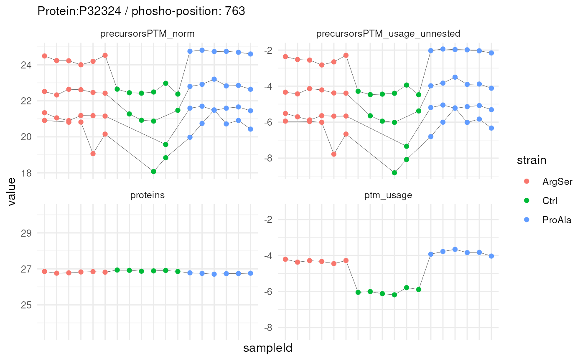
## used (Mb) gc trigger (Mb) max used (Mb)
## Ncells 13122027 700.8 22557664 1204.8 22557664 1204.8
## Vcells 45750774 349.1 105309341 803.5 262547462 2003.1## used (Mb) gc trigger (Mb) max used (Mb)
## Ncells 13122031 700.8 22557664 1204.8 22557664 1204.8
## Vcells 45750817 349.1 105309341 803.5 262547462 2003.1Along Protein Mapping
In this section we will make Along Protein graphs. Therefore we need sequence information on the protein sequence, which we can find in the fasta file from uniprot that was used for mapping.
Note, that it is recommended to use the fasta that was used for the mapping. However, this file was not uploaded by the authors so we use the version of the current release for illustration purposes.
- Read fasta file
fastaFile <- bfcrpath(bfc,"https://rest.uniprot.org/uniprotkb/stream?compressed=true&download=true&format=fasta&query=%28%28proteome%3AUP000002311%29+AND+reviewed%3Dtrue%29")
fasta <- seqinr::read.fasta(fastaFile, seqtype = "AA", as.string = T) #2.- Extract the proteins from the fasta file.
# read in fasta file for protein sequence & length -> to calculate the coverage
mapping <- data.frame(fullName = fasta |> names(),
accession = fasta |> names() |> stringr::str_split_i("\\|", 2),
sequence = unlist(fasta)) |>
mutate(length = nchar(sequence))
rownames(mapping) <- mapping$accessionPTM barcode plot
We make a barplot for all phosphorylated residues on protein P32324
We first gather the data:
- We extract the protein name
- we filter all PTMs for that protein
- we add the phospho-position in the rowData to it
- we make a new variable type to indicate if the PTM usage is up, down, non-significant or missing
prot <- sub("_.*","", target_feature) ## 1.
ptmListProt <- inferencesPtmUsage |>
filter(grepl(prot, feature)) |> ## 2.
left_join(rowData(qf[["ptm_usage"]]) |>
as.data.frame() |>
select(Protein.Group.Mod, pos),
by = c("feature" = "Protein.Group.Mod")) |> ## 3.
mutate(type = ifelse(is.na(adjPval),
"missing",
ifelse(adjPval < 0.05,
ifelse(logFC < 0,
"down",
"up"),
"non-sig")) ## 4.
)We make the barplot by adding a geom_point layer and a vertical line (geom_vline) to indicate the residue position.
ptmListProt |>
ggplot(aes(x=pos,y=0,col=type)) +
geom_point() +
geom_vline(aes(xintercept=pos,col=type)) +
xlab("residue") +
ylab("") +
scale_color_manual(values = c("black","grey","blue","red"),
breaks = c("missing","non-sig","down", "up")) +
theme(
axis.ticks.y = element_blank(),
axis.text.y = element_blank(),
panel.grid = element_blank(),
panel.background = element_blank(),
panel.border = element_rect(color = "black", fill = NA),
strip.background = element_rect(color = "black")
) +
xlim(0, mapping[prot,"length"]) +
ggtitle(paste0(prot, ": Phospho residues")) +
facet_grid(contrast~.) 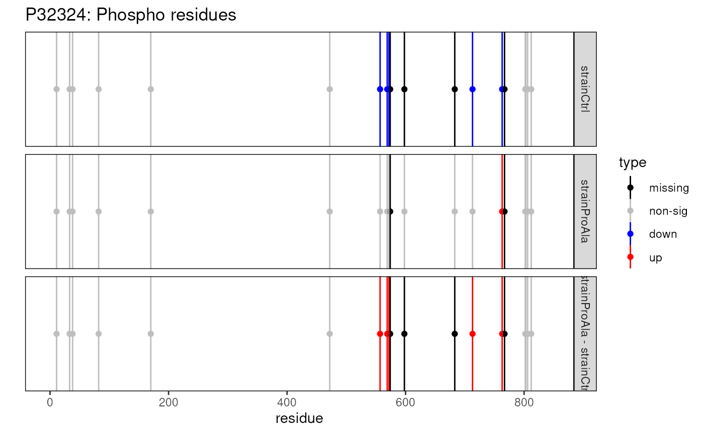
Along protein plot for all precursors
We first gather the data from all precursors that map to protein P32324
prot <- sub("_.*","", target_feature) ## 1.
precursorListProt <- inferencesUsage |>
left_join(rowData(qf[["precursorsPTM_usage"]]) |>
as.data.frame() |>
select(Precursor.Id, Protein.Group, Stripped.Sequence, Protein.Sites, Modified.Sequence),
by = c("feature" = "Precursor.Id")) |> ## 2.
filter(Protein.Group == prot) |> ## 3.
mutate(seqOrder = as.factor(feature) |> as.numeric(),
type = ifelse(is.na(adjPval),
"missing",
ifelse(adjPval < 0.05,
ifelse(logFC < 0,
"down",
"up"),
"non-sig")), ## 4.
tmp = str_locate_all(mapping[prot,"sequence"], Stripped.Sequence),
start = purrr::map(tmp, ~ .x[, "start"]),
end = purrr::map(tmp, ~ .x[, "end"])) |>
unnest(c(start, end))Add location of Phospo residues.
- Add a new variable with the modification type (21 is phosho)
- Add a new variable with the location of the modification on the original protein
- Make vector of the row numbers with duplicates for the sequences containing multiple PTMs
- Make a corresponding vector with the positions of the individual PTM sites
- Make a corresponding vector with the modification type
- Extract the ids of rows that correspond to phospho sites
- Make a data.frame with duplicate entries for precursors with multiple phospho sites with variables seqOrder, type and contrast
- Add the position of the phospho site
precursorListProt <- precursorListProt |> mutate(
mods = str_extract_all(Modified.Sequence,
"UniMod:[0-9]+") |>
lapply(FUN = gsub, pattern="UniMod:",replacement=""), ##1.
pos = str_extract(Protein.Sites,
"(?<=:)[^\\]]+") |>
strsplit(split = ",") |>
lapply(FUN=substr,start=2,stop=10000) |>
lapply(FUN=as.integer)) ## 2.
ids <- rep(precursorListProt |>
nrow() |>
seq_len(),
precursorListProt |>
pull(pos) |>
sapply(FUN = length))## 3.
pos <- unlist(precursorListProt$pos) ## 4.
mod <- unlist(precursorListProt$mods) ## 5.
phosIds <- ids[mod == "21"] ## 6.
precursorPosListProt <- precursorListProt[phosIds,] |> ## 7.
select(seqOrder,type, contrast) |>
mutate(pos = pos[mod == "21"]) ## 8.Make along protein plot.
precursorListProt |>
ggplot(aes(y=seqOrder)) +
geom_segment(aes(x = start, xend = end, yend = seqOrder, color = type),
linewidth = 1) +
xlim(0, mapping[prot,"length"]) +
ylab("Precursors") + xlab("Residue") + #6.
scale_y_continuous(breaks = precursorListProt$seqOrder, labels = precursorListProt$Stripped.Sequence) +
scale_color_manual(values = c("black","grey","blue","red", "black"),
breaks = c("missing","non-sig","down", "up", "black")) +
geom_segment(data = precursorPosListProt,
aes(x = pos, xend = pos, y = seqOrder - 0.5, yend = seqOrder + 0.5,
color = "black"), linewidth = 1) +
facet_grid(contrast~.) +
theme(
axis.ticks.y = element_blank(),
axis.text.y = element_blank(), #We suppress the feature sequence here because there are too many sequences
panel.grid = element_blank(),
panel.background = element_blank(),
panel.border = element_rect(color = "black", fill = NA),
strip.background = element_rect(color = "black")
) +
labs(title = paste0(prot, " along with precursors"),
subtitle = "(phospho residue in black vertical line)") 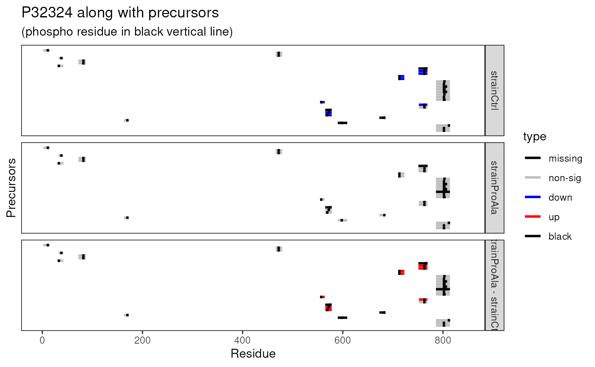